100年後に、
ウェディングを繋げる。
日本ならではの文化と、東海地区特有の風習を織り交ぜた結婚式文化を、次の世代へ。地域に根ざした公益的な活動で、婚礼業界の未来を育てます。
結婚式文化の継承と、
地域の未来のために。
私たちは、結婚や結婚式の意義・魅力を伝え、地域経済の活性化に貢献し、発展・継続していく婚礼業界を築き、子供たちへ受け継がれる結婚式を守るために活動する一般社団法人です。
新着情報・活動報告

【夏のリアルカンファレンス】7月22日 — ブライダル業界の「採用」を考える
記事を読む →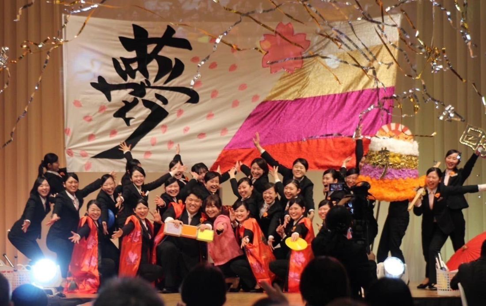
名古屋外語・ホテル・ブライダル専門学校の卒業制作にお招きいただきました
記事を読む →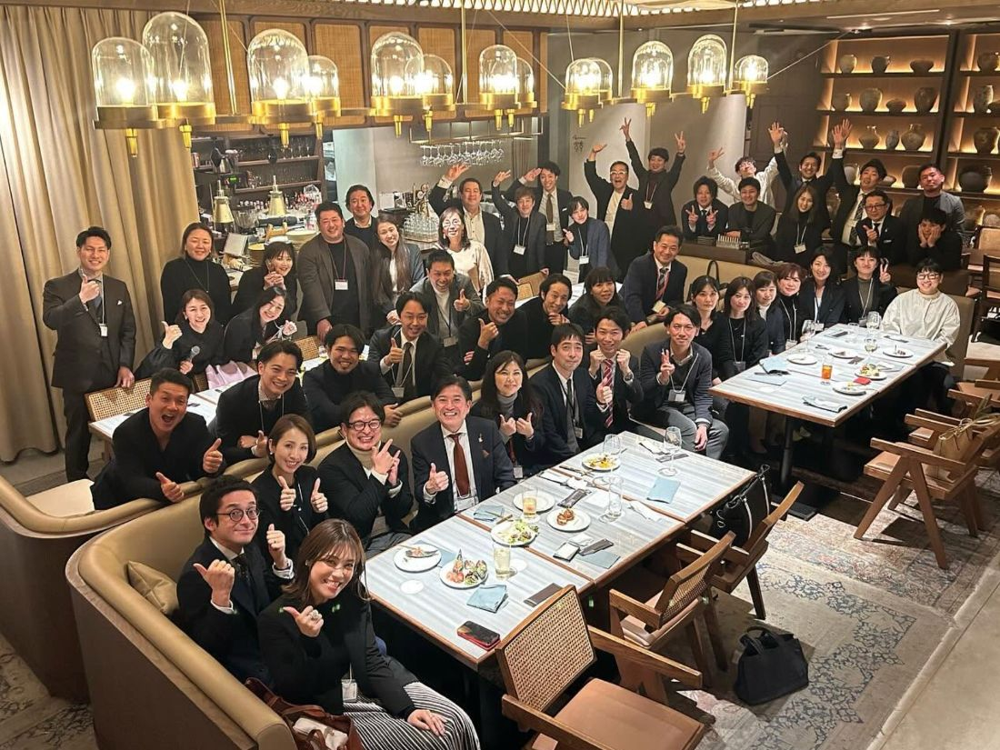
【開催報告】リアルカンファレンス2024 — 総勢60名で、一年を振り返りました
記事を読む →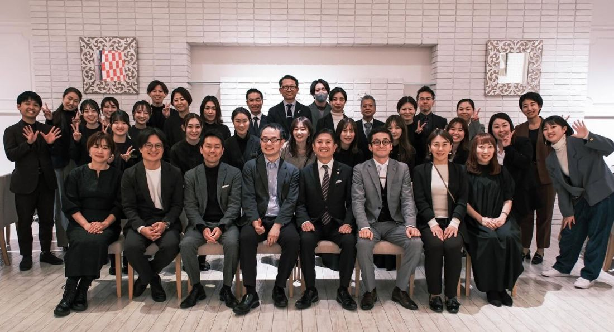
【開催報告】初の合同企業説明会に230名超の学生が参加
記事を読む →ウェディング事業者の
皆さまへ
情報発信・勉強会・行政連携。地域のウェディングを共に育てる仲間を募集しています。入会のメリット・会費・お申込みの流れをご案内します。
入会のご案内・お申込み →私たちについて
結婚式文化の継承と、
地域の未来のために。
日本ならではの文化とならわし、東海地区特有の風習を織り交ぜた「結婚式」文化の継承と魅力の発信を通じて、次の四つを主な目的として活動しています。
代表理事挨拶
多様化する社会で、人生の歩み方や価値観は様々です。「こうするべき」は無くなったとしても、人と人の繋がりが大切であることや、人が人を想う気持ちは無くなりません。その大切なものを人生の節目でしっかりと見つめ直す瞬間のひとつが、パートナーと共に生きていく選択をすること＝結婚することであり、その始まりに「けじめと覚悟」の為のセレモニーが結婚式です。
結婚式をお手伝いしている私たちは、時代に合わせて変化しながらも、未来に結婚式という大切な文化を残す使命のもと、地域への啓蒙と貢献、そして我々業界の発展を目指し活動しています。多くの方と共に一枚岩となり、広く大きな波を起こしていきたいと考えています。
私たちの4つの目的
結婚や結婚式の意義や魅力を伝える
主に東海地区に住まう人々に、改めて「結婚すること」「結婚式を開催すること」の意義・大切さ・素晴らしさ、そして尊さを伝えること。
地域経済の活性化への貢献
東海地方の「結婚式」の実施を促し、婚礼業界のみならず、地域産業全体の需要喚起、及び地域経済の活性化に貢献すること。
発展・継続していく婚礼業界へ
「結婚式」に携わる全ての事業者が持続的に発展・継続し、そこで働く全ての人がやりがいをもって長く従事できる、業界の環境を創り上げること。
子供たちに受け継がれる結婚式へ
未来を担う子供たちが「結婚式」に憧れ、婚礼業界の就職を目指すきっかけとなる機会を、継続的に創出すること。
事業内容
沿革
東海地区の婚礼事業者有志により設立。結婚式文化の継承を掲げ活動を開始。
会員向けの学びの場を拡充。業種を越えた交流と情報共有が進む。
行政との連携を強化。ブライダル産業支援に関する提言活動を本格化。
式場から専門学校まで7業種が参画。東海地区最大規模のネットワークへ。
役員構成
組織概要
会員紹介
業種を超えて、集う。
式場・ホテルから衣裳、写真・映像、装花、ギフト、人材、専門学校まで。多様な事業者が一堂に会し、東海地区の結婚式文化を支えています。（2026年 会員名簿）
法人会員
35社名古屋外語・ホテル・ブライダル専門学校公式サイト →
※ 掲載は順不同です。
個人会員
2社業種で探す
結婚式のご準備に。会員企業を主な業種ごとにご紹介します。
式場・ホテル
13社写真・映像
8社プロデュース
6社ウェディング事業者の
皆さまへ
情報発信・勉強会・行政連携。地域のウェディングを共に育てる仲間を募集しています。入会のメリット・会費・お申込みの流れをご案内します。
入会のご案内・お申込み →新着情報・活動報告
{{ newsCountLabel }}
一般社団法人「愛知ウェディング協議会」設立
2020年1月10日、愛知県にて「一般社団法人 愛知ウェディング協議会」が発足いたしました。
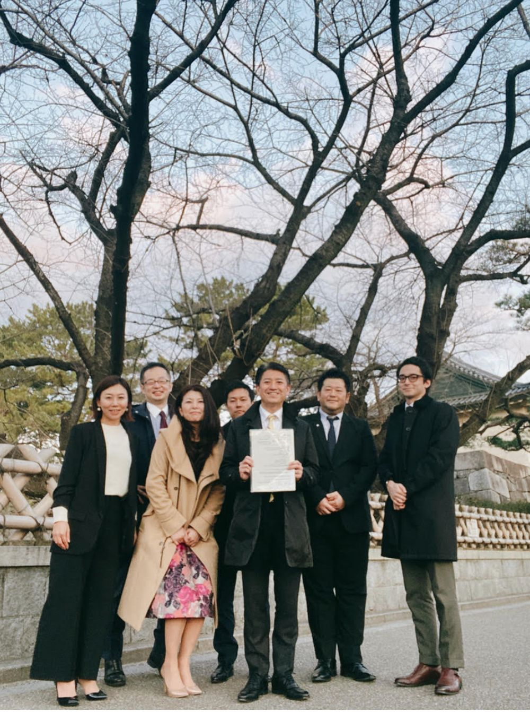
設立登記の日、名城公園にて。冬枯れの桜の木の下で。
この日、7人の理事・監事が名古屋法務局にて一般社団法人の設立登記を行い、その足で名城公園へ。冬枯れの桜の木の下で、設立記念の一枚を撮影しました。登記申請書を手にしたときの、少し照れくさいような、それでいて背筋が伸びるような感覚を、私たちはきっと忘れないと思います。
なぜ、いま協議会なのか
愛知県は、独自の婚礼文化が色濃く残る土地です。嫁入り道具のお披露目、菓子まきをはじめとする地域のならわし。派手だ、大げさだと語られることもありますが、その一つひとつには「新しい家族を地域みんなで迎え入れる」という願いが込められてきました。
一方で、こうした文化は、伝える人がいなければ静かに途切れてしまいます。私たちウェディングに携わる事業者は、これまでそれぞれの現場で全力を尽くしてきました。けれど、会場、衣裳、写真、装花、司会、引出物——立場の違う一人ひとりが同じテーブルにつき、地域全体のこととして未来を考える場は、まだありませんでした。
その場をつくろう。そう考えた有志が集まり、任意の勉強会からのスタートを経て、この日、法人という形を得ることになりました。
私たちが目指す4つのこと
結婚や結婚式の意義や魅力を伝える
なぜ人は式を挙げるのか。その問いに、業界の内側から誠実に答えていきます。
地域経済の活性化へ貢献する
一組の結婚式には、驚くほど多くの地元の仕事が関わっています。その循環をより確かなものにします。
発展・継続していく婚礼業界へ
次の世代が「この仕事を選んでよかった」と思える業界であるために、学びと交流の機会をつくります。
子供たちに受け継がれる結婚式へ
今日の一組の式が、20年後、誰かの原風景になる。そう信じて取り組みます。
100年後にウェディングを繋げる
記念撮影をした名城公園の桜は、1月のことでしたから、まだ一輪も咲いていませんでした。枝だけの木を見上げながら、けれど春には必ず花が咲くことを、その場の全員が知っていました。
設立したばかりの私たちも、いまはまだ枝のような存在です。それでも、100年後の愛知でウェディングが変わらず祝福されているように——その根を、ここから育てていきます。
私たちの活動は、この日が始まりです。今後の取り組みは、当ホームページのブログおよび各SNSにて随時ご報告してまいります。どうぞ末永くお付き合いくださいませ。
これからご結婚される皆様へ
愛知ウェディング協議会では、ご結婚式のご相談や結婚式場等のご紹介を行っております。
ウェディング事業者の皆さまへ
この地域のウェディングに関する情報発信や勉強会を行っております。ご関心をお持ちの方は、どうぞお気軽にお問い合わせください。
愛知県知事に対する陳情書提出
2020年4月22日（水）14時、愛知ウェディング協議会の理事は愛知県庁を訪れ、愛知県知事に対して陳情書を提出いたしました。新型コロナウイルス感染症の拡大防止に取り組みながら、ウェディング業界の各事業者およびフリーランスが事業を継続していけるよう、きめ細かい補償を求める内容です。
愛知県庁にて、県知事へ陳情書を提出。
声を上げざるを得なかった、あの春
3月以降、この地域でも結婚式の延期・中止のご連絡が続きました。式場には、予定されていた春の週末が、ひとつずつ空白になっていきました。
私たちが何より心を痛めたのは、この日のために1年、2年と準備を重ねてこられた新郎新婦の落胆です。「延期しましょう」とお伝えするたび、電話の向こうで言葉に詰まる声を聞きました。感染拡大を防ぐために必要な判断であることは、誰よりも私たち自身が理解していました。それでも、簡単な決断ではありませんでした。
同時に、業界の足元も急速に崩れはじめていました。一組の結婚式は、会場だけで成り立つものではありません。衣裳、ヘアメイク、写真、映像、装花、司会、演奏、引出物、送迎——数十の事業者と個人が関わって、ようやく一日が形になります。そしてその多くは、小規模事業者やフリーランスの方々です。
仕事が数か月先までまとめて消える。けれど業種の区分では対象になりにくい。この構造ゆえに、当時打ち出されていた支援策からこぼれ落ちてしまう方が、確実にいらっしゃいました。
1500名の声が背中を押した
「業界として、きちんと実情を伝えよう」
そう決めてSNS等で呼びかけたところ、賛同の署名は1500名ほどにのぼりました。同業の方、フリーランスの方、そして延期を経験されたご当事者からも、声を寄せていただきました。
一社では届かない声も、1500名分が束になれば届くかもしれない。この署名が、陳情書提出の大きな後押しとなりました。ご協力いただいた皆さまに、あらためて御礼を申し上げます。
陳情書に込めたこと
陳情書では、ウェディングに関わる事業者・フリーランスの就業実態を具体的にお示ししたうえで、実情に即した、きめ細かい補償の必要性をお伝えしました。
私たちが求めたのは、営業を続けさせてほしいということではありません。感染拡大の防止には最大限に協力する。そのうえで、業界が消えてしまわないだけの支えをいただきたい——それが趣旨です。
延期された結婚式が、必ず開かれるために
延期を決断された新郎新婦には、必ずまた、幸せな一日を過ごしていただきたい。
そのためには、その日を支える会場が、衣裳店が、カメラマンが、装花の職人が、そのときまで残っていなければなりません。今回の活動は、目の前の一組と、これから式を挙げるすべての方のために、業界そのものを存続させるための取り組みです。
私たちは今後も、この地域のウェディングを守るために必要な働きかけを続けてまいります。
コロナ禍のブライダル業界で、いま何が起きているのか
新型コロナウイルス感染拡大の影響で、ブライダル業界関係者、そして結婚式を控える新郎新婦とご家族——すべての皆さまが、思い悩んでいらっしゃることと思います。各社アンケートの集計結果を、業界の動向として動画にまとめました。
「予定通り挙げてよいのだろうか」
「延期を勧めるべきなのか、それとも」
「ご列席の皆さまに、どうご案内すればよいのか」
答えのない問いを、それぞれの現場が、それぞれに抱え込んでいる。それが2020年2月の終わりの状況でした。

動画：協議会監事 夏目哲宏（株式会社ブライト 代表取締役）が集計・作成
「隣の会場は、どうしているのだろう」
この時期、私たちが最も強く感じていたのは、判断材料の乏しさです。
前例のない事態ですから、どこかに正解が用意されているわけではありません。それでも、他社がどう動いているのか、どんな基準で延期のご相談に応じているのか、キャンセル料の取り扱いをどう考えているのか——そうした「いまの実態」がわかるだけで、目の前の一組への向き合い方は変わります。
そこで、愛知ウェディング協議会監事の夏目哲宏（株式会社ブライト 代表取締役）が、ブライダル関係各所に任意でご協力いただいたアンケートを集計し、業界の動向として動画にまとめました。
ご多用のなか、率直にお答えくださった各社の皆さまに、心より御礼を申し上げます。
会員向けの情報を、業界全体へ
本来、こうした情報発信は協議会会員の皆さまに向けたものです。
しかし今回は、ブライダル業界全体の未曾有の事態であるととらえ、広く公開することといたしました。会員であるかどうかにかかわらず、いま必要としている方に届いてほしいと考えたためです。
私たちが提供したいのは「対応のヒント」
愛知ウェディング協議会としてお届けしたいのは、この前例のない事態への対応に迷うなかにも、自信をもって新郎新婦に寄り添い、不安を先どってリードし、少しでもご両家の心配を解消できる、対応のヒントとなる情報です。
新郎新婦がいま最も不安なのは、決められないことそのものではなく、誰にも見通しを示してもらえないことではないでしょうか。プランナーが一歩先に立って「こういう選択肢があります」「こうなった場合はこう対応します」とお伝えできれば、それだけでご両家の心持ちは変わります。
そのために必要な材料を、業界の内側から集めて共有していく。それが、この状況下で協議会が果たすべき役割だと考えています。
一日も早く、心安らかな日常が戻りますように
一日も早くこの混乱が収まり、皆さまにとって心安らかな日常が戻りますことを、心より祈っております。
そして、いま延期や中止の判断を迫られている新郎新婦が、いつか必ず、笑顔でその日を迎えられますように。私たちはそのための準備を、静かに続けてまいります。
「緊急事態宣言」で結婚式場はどうなるのか
先日アップさせていただいた、新型コロナウイルス感染拡大の影響によるアンケート集計の動向から、事態はさらに動いています。
法改正により、新型コロナウイルスに関して『緊急事態宣言』が出される可能性が出てきました。
宣言が出されると、何が起こるのか
この宣言が出されると、都道府県知事が期間を設けて、学校等の特定の施設に対し、使用の自粛を『要請』することができるようになります。
ここで押さえておきたいのは、これが「禁止」ではなく「要請」であるということ。そして、対象となる施設が法令であらかじめ定められているということです。つまり、自分たちの施設が対象に含まれるのかどうかを知っておくことが、そのまま対応の準備につながります。
結婚式場は、対象に含まれるのか
今のところ、『結婚式場』は法律上の対象として直接の記載はありません。
ただし、ホテルの宴会場については施行令に記載があります。同じ「披露宴を行う場所」であっても、施設の位置づけによって扱いが分かれている状態です。
そして今後、結婚式場が施行令に付け加えられる、あるいは運用上、対象に組み込まれる可能性は否定できません。
現時点ではあくまで、『今後の展開次第では、結婚式場も使用自粛を要請される危険性がある』という段階です。過度に不安をあおる必要はありませんが、「うちは対象外だから関係ない」と考えるのも、また違うのだろうと思います。
だからこそ、まずは私たちが正しい知識を
新郎新婦も、ご不安を抱えていらっしゃることと思います。
そうしたとき、「まだ何も決まっていません」としかお答えできないのと、「現在の法令ではこうなっていて、こういう場合にはこう動きます」とお伝えできるのとでは、ご両家の安心はまったく違ってきます。
不安を先どってリードするために、まずは私たちが正しい知識を得ましょう。そこで、愛知ウェディング協議会監事の夏目哲宏（株式会社ブライト 代表取締役）が、法改正の内容と結婚式場への影響について解説する動画を作成いたしました。ぜひご覧ください。

解説：協議会監事 夏目哲宏（株式会社ブライト 代表取締役）
ともに乗り越えていくために
日に日に変わる状況を、愛知ウェディング協議会としても、ウェディングに関わるみなさまとともに乗り越えていければと思ってお届けいたします。
一社では追いきれない情報も、業界で分け合えば追えます。制度の動きがあれば、今後も速やかに共有してまいります。
一日も早くこの混乱が収まり、みなさまにとって心安らかな日常が戻りますことを、心より祈っております。
改正特措法が成立——式場・ホテル・ドレスショップへの影響
3月13日、新型コロナウイルスの流行を受けて『改正新型インフルエンザ等対策特別措置法』が成立しました。
先日の記事でお伝えした「緊急事態宣言が出される可能性」が、法律の裏づけを得て、より現実味を帯びた段階に入ったことになります。
業態によって、影響の出方が違う
今回の改正でウェディング業界が注意すべきなのは、同じ「結婚式に関わる仕事」であっても、施設の位置づけによって扱いが分かれるという点です。
結婚式場、ホテル、そしてドレスショップ。この三者は、法令上まったく同じ扱いを受けるわけではありません。自社がどの区分に当たるのか、対象となった場合に何が起こるのか。ここを把握しているかどうかで、この先の判断のスピードは大きく変わります。
そこで、愛知ウェディング協議会監事の夏目哲宏（株式会社ブライト 代表取締役）が、改正法の内容と、式場・ホテル・ドレスショップそれぞれへの影響をまとめた動画を作成いたしました。

解説：協議会監事 夏目哲宏（株式会社ブライト 代表取締役）
会見の前に、まず内容を押さえておく
14日18時から、安倍総理大臣の記者会見があるとのことです。
会見の内容は、これから多くのメディアで報じられることと思います。ただ、報道は要点を切り出して伝えるものですから、それだけを追っていると「結局、自分たちの現場はどうなるのか」が見えにくくなりがちです。
だからこそ、会見の前に改正法そのものの中身を押さえておくことをおすすめします。土台となる法律の枠組みを知っていれば、報じられた内容を自分の事業に引き寄せて理解できます。新郎新婦からお問い合わせをいただいたときにも、落ち着いてご説明できるはずです。
会見の前に、ぜひ動画で改正法の内容と業界に与える影響をご確認ください。
ともに乗り越えていくために
状況は日に日に変わります。愛知ウェディング協議会としては、その変化を追いかけ、ウェディングに関わるみなさまと共有しながら、ともに乗り越えていければと考えています。
制度の動きがあれば、今後も速やかにお届けしてまいります。
この春、新しい生活を始める皆さんへ
結婚式をお手伝いする私たちは、節目の大切さを知っています。
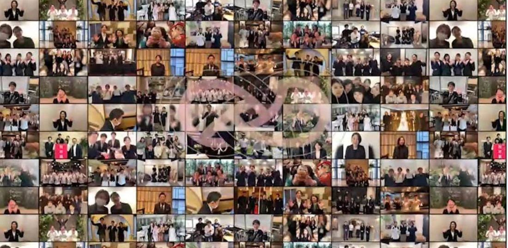
節目は、ただの通過点ではないから
私たちの仕事は、人生の節目に立ち会うことです。
だから知っています。節目というのは、ただ日付が変わることではないということを。誰かに祝ってもらい、送り出してもらい、決意を言葉にする——その一日があるからこそ、人は次の場所へ進んでいけるのだということを。
この春、その一日を思うようにかたちにできなかった方が、たくさんいらっしゃると思います。予定していた式が、集まりが、写真を撮るはずだった時間が、静かになくなってしまった。
節目を仕事にしてきた私たちだからこそ、その寂しさが、痛いほどわかります。
だからこそ、贈りたい言葉があります。
全力で取り組むほど、面白いのが社会人です
全力で取り組むほど面白いのが社会人です。ブライダル業界には、そんな先輩たちがたくさん居て、皆さんを待っています。
土日は働き、誰かの人生でいちばん大切な一日を預かる。決して楽な仕事ではありません。それでも、この業界にいる人間は、みんな一度は「この仕事をしていてよかった」と心から思う瞬間を経験しています。全力を出した先にしか見えない景色が、確かにあります。
そして、この春ステップアップする全ての皆さん、おめでとうございます。
皆さんのパパとママのスタートを、お手伝いしたかもしれない私たち
もしかしたら、と思うのです。
何十年か前、この地域のどこかの会場で、緊張しながら誓いの言葉を交わしたご夫婦がいました。その日を支えたのは、私たちの誰か、あるいは私たちの先輩だったかもしれません。
そこから始まったご家族の物語の先に、いま、新しい一歩を踏み出そうとしている皆さんがいる。
そう考えると、これはまったく他人事ではありません。皆さんのパパとママのスタートをお手伝いしたかもしれない私たちは、心から皆さんの新しい毎日を応援しています。
メッセージ動画を公開しました
この想いを、愛知の婚礼に関わる皆さまとともに、一本の動画にまとめました。式場、ホテル、ドレスショップ、写真、装花、レストラン、サロン——さまざまな立場の方が、それぞれの言葉で、この春を迎える皆さんへメッセージを寄せてくださっています。

ご協力いただいたみなさま
※順不同
シアトルマリアージュ様／ao様／平安閣様／MAPS様／YUUKI SHIBATA様／Chieko Kobayashi様／ANTICA ROMA様／フォーシスアンドカンパニー様／エステティックサロンLe seuil様／Dress Benedetta様／トニータナカウエディング様／ジョニーズブラッセリー様／ジャパンクリエイト様／the gate house様／YOUR WEDDING＆DESIGN様／レストランシェコーベ様／LOREN様／アンジェリーナスイート様／クアドリフォリオ様／スロウバケーション様／インプレッションフローラ様／ANAクラウンプラザホテルグランコート名古屋様／BRIGHT様／ラソールガーデン名古屋様／キヨミズ京都東山様／モアチェモアチェ様／MEDI様／オペラ様／ルタンブル様／ラポール様／タワーホテル名古屋様／RWEDDINDS様
制作
愛知ウエディング協議会 事務局／ANAクラウンプラザホテルグランコート名古屋／株式会社 オー・ド・ヴィーウェディング／株式会社 BRIGHT／株式会社 スタイルズ／株式会社 ムーブ／株式会社ラポール・ジャパン／株式会社 CID
【カレッジ部会 設立】学生とともに、ウェディングの未来をつくる
愛知ウェディング協議会に、新しく【カレッジ部会】が発足いたしました。

「未来への働きかけ」を、かたちにする
愛知ウェディング協議会では、「未来への働きかけ」を理念の一つに掲げています。
100年後にウェディングを繋げる——そのために欠かせないのが、次の世代です。どれだけ良い式をつくっても、それを担う人がいなくなれば、文化は続きません。業界の未来は、いま学んでいる学生たちの手のなかにあります。
そこで取り組みの一つとして、次のことを積極的に進めてまいります。
- 学校との連携
- 学生の参画
具体的に、何をするのか
定期的な、会員企業様への学生訪問企画
現場を、実際に見ていただきます。式場のバックヤード、打ち合わせの様子、当日を支えるスタッフの動き。パンフレットや説明会では伝わりきらない「仕事の手ざわり」に、直接触れていただく機会です。
協議会イベントへの企画運営の参画
見学するだけでなく、つくる側に立っていただきます。企画を考え、人を動かし、当日を運営する。学生のうちにこの経験ができることは、大きな財産になるはずです。
学生の皆さんへ——キャリアを、もっとリアルに
この取り組みを通じ、学生が業界への理解を深め、よりリアルに自分自身のキャリアを考えること、そして視野を広げ、自分自身の引き出しを多く作るチャンスを提供します。
「なんとなく華やかそう」から一歩踏み込んで、この仕事の大変さも、面白さも、両方を知ったうえで進路を選んでほしい。そう考えています。仮に別の道を選んだとしても、そこで得た経験や人とのつながりは、必ずどこかで生きてくるはずです。
会員企業の皆さまへ——学生と関わることは、自分たちを見つめ直すこと
この活動は、学生のためだけのものではありません。会員企業のスタッフの皆さまにも、学生との関わりや、彼らと触れ合うことで、自分たちの日々の仕事のすばらしさを再認識していただけると確信しております。
「どうしてこの仕事を選んだんですか」——そう真っすぐに聞かれて、答えを探すうちに、自分の原点を思い出す。学生を迎えるとは、そういう時間でもあります。日々の業務に追われるなかで見えにくくなっていたものが、若い目を通してもう一度輝いて見える。そんな瞬間が、必ず訪れると信じています。
加盟校を募集しています
このような活動を主に進めていく部会としての【カレッジ部会】は、さまざまな学校様の加盟をお待ちしております。
一組の結婚式は、実に多様な専門性の集まりで成り立っています。「ブライダル」の看板を掲げていない学校の学生にも、活躍の場は数多くあります。少しでもご関心をお持ちの学校様は、どうぞお気軽にお問い合わせください。
【入会のおねがい】数は力です。愛知のブライダルを、共に守るために
愛知のブライダルに関わる、全ての皆さまへ。
愛知ウェディング協議会は、ブライダル業界の存続のために、県に対して『ブライダルに関わる事業者への助成と支援を求める陳情書』を提出します。

なぜ、いま陳情なのか
いま、全ての業種で労使ともに大きな影響を受けています。そのなかで、私たちがどうしても伝えなければならないことがあります。それは、ブライダル業界の構造です。
一組の結婚式は、発注元から請け負いまで、幾重にも連なる事業者によって成り立っています。会場があり、そこから衣裳、ヘアメイク、写真、映像、装花、司会、演奏、引出物、送迎へと仕事が広がっていく。さらにはフリーランスが多く活躍するという現状があります。
この構造ゆえに、影響は「見えにくいところ」から先に出ます。数字に表れる前に、いちばん立場の弱い方から仕事を失っていく。そして、業種の区分では既存の支援の対象になりにくい。
この現状を理解していただき、破綻を防ぐための手当て・保証が必要不可欠であることを、早急に陳情いたします。
数は力です
陳情の重みは、そこに何人の声が集まっているかで決まります。
一社の訴えは「一社の事情」として受け取られてしまうかもしれません。しかし、この地域のブライダルを支える事業者と個人が束になれば、それは「業界の実情」になります。
共に助け合い、力を合わせて、世の中を動かしましょう。諦めたらそこで終わりです。
2020年度の年会費はいただきません
この非常時にあたり、2020年度の協議会年会費はいただきません。いま、どの事業者も、どの個人も、一円を大切に守らなければならない状況です。費用を理由に声を上げられない方が出てしまっては、本末転倒だと考えました。
ぜひ、こちらまでメールをください。入会に関係する書類を一式、返信いたします。
aichi.wedding.council@gmail.com企業にお勤めの方も、個人会員として
ご入会は、事業者様に限りません。企業にお勤めの方も、個人会員としてのご入会をお待ちしております。フリーランスの方、いまは仕事が止まってしまっている方も、どうぞご遠慮なくご連絡ください。立場に関係なく、この業界に関わるすべての方の声が必要です。
拡散のお願い
そして、もう一つお願いがあります。拡散、シェアをお願いいたします。そして、SNSをしていない事業者さんへも、お知らせをお願いします。
この呼びかけがいちばん届いてほしいのは、実は、SNSで情報を追えていない方かもしれません。小さな工房で、ひとりで、静かに事態を見つめている方がいらっしゃるはずです。そういう方にこそ届くよう、お知り合いへのお声がけをお願いいたします。
一本の電話が、一人の仲間を増やします。その一人ひとりが、この業界を残す力になります。
署名活動へのご協力に、心から感謝申し上げます
心から感謝申し上げます。
多くの皆様にご協力いただきました『きめ細かい補償を求める署名』活動は、本日午前10時をもちまして、区切りとさせていただきます。
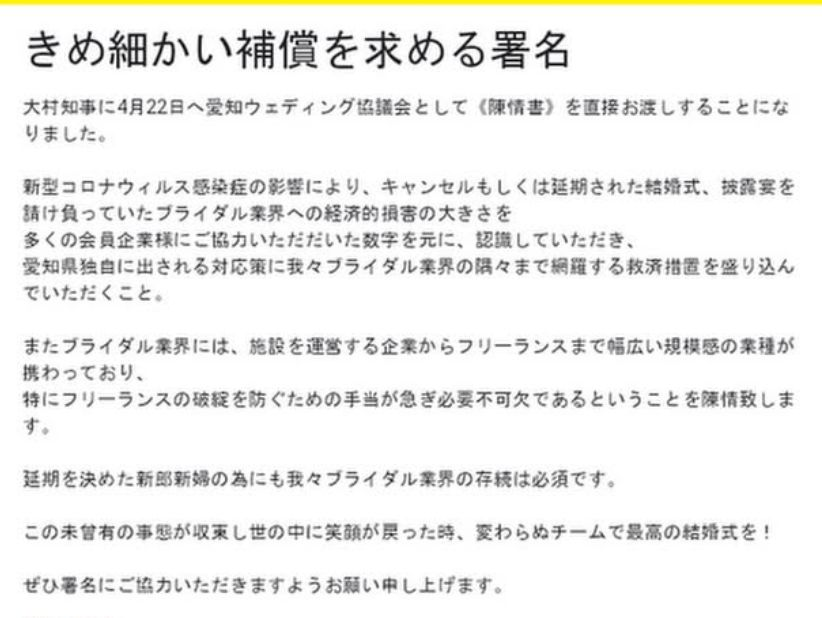
署名活動の呼びかけ（4月18日）
4日間で寄せられた、後押しの声
4日間で、1391人
ちょうど4日前、18日午前10時頃からの私たちの呼びかけに、22日9時現在、1391人の方々から後押しをいただきました。
正直に申し上げれば、始めるときには不安がありました。呼びかけたところで、どれだけの方が応えてくださるのか。見当がつかないまま、それでも「やらないよりはいい」という気持ちで一歩を踏み出した、というのが実際のところです。
結果は、4日間で1391人。
数字の一つひとつに、顔があります。同業の方、フリーランスとして現場を支えてくださっている方、他業種から見守ってくださった方、そして式の延期を経験されたご当事者。名前を書き添えるという、決して軽くない行為をしてくださった方が、これだけいらっしゃいました。
この関心の高さは、きっと届く
この関心の高さは、きっと行政にも届くと信じ、ブライダル業界の危機的状況をお伝えして参ります。
一社の窮状としてではなく、この地域のブライダルに関わる大勢の生活と仕事の問題として。皆様からお預かりした声を、責任をもって届けてまいります。
ご協力いただきました皆様に、お礼申し上げます。誠にありがとうございました。
そして、あと少し
そして、あと少し。もしよろしければ、ご署名をお願い致します。
締め切りまでのわずかな時間ですが、最後の一人まで、お力をお借りできればと思います。
【4月29日20時】第1回インスタライブを行います
4月29日(水) 20:00より、インスタライブを行います！！

お話しすること
- 愛知ウェディング協議会の立ち上げ経緯
- 私たちがこれからめざすもの
- 先日の陳情書提出 秘話
- etc……
そして、みなさまからの様々な疑問にお答えしていきます。なぜこの時期に協議会が生まれたのか。7人の理事・監事は何を考えて集まったのか。あの陳情書は、どんな経緯で、どんなやり取りを経て県庁に届いたのか——文章ではお伝えしきれなかった舞台裏を、生の言葉でお話しできればと思っています。
既に質問を投げかけてくださっている皆さま、ありがとうございます！ 当日、ひとつずつ丁寧にお答えしてまいります。
出演
協議会副代表の吹原と、ウェディング業界ではみなさまご存知のMC坂田さんをインタビュアーにお迎えして、第1回目を実施します。
聞き手が坂田さんですから、私たちが言葉に詰まるところも、うまく引き出していただけるのではないかと思います。かしこまった報告会ではなく、業界の仲間内で話しているような、そんな時間になれば嬉しいです。
ご視聴方法
「愛知ウェディング協議会」で検索、またはInstagramアカウント【aichi_wedding.council】をご覧ください。アカウントをフォローいただくと、ライブ開始時に通知が届きます。
祝日の夜のひととき、お手元にお飲み物でもご用意のうえ、ぜひ気軽にご覧ください。当日ご覧になれない方も、ご質問はいつでもお寄せいただけます。DMやコメントでお気軽にどうぞ。
【新型コロナ給付金】「美容・ヘアメイク」さん注目の給付金が！
美容・ヘアメイクさんに向けた特別な給付金を、愛知県と東京都が発表しています！
結婚式の延期・中止が相次ぐなか、ヘアメイクの現場は真っ先に影響を受けました。式がなくなれば仕事もなくなる。それでいて、業種の区分では既存の支援からこぼれてしまう——そんな声を、私たちも数多くいただいてきました。
そこへ、理美容業を対象とした休業協力金・給付金の制度が登場しました。該当される方は、ぜひご確認ください。
愛知ウェディング協議会 監事の夏目（株式会社ブライト 代表取締役）が、わかりやすく解説しておりますので、参考にしてください。
【愛知県】理美容業界に対する休業協力金
自主的に休業する愛知県理容・美容業生活衛生同業組合 加盟の事業者に対して、組合を通じて支給される制度です。交付対象は拡大され、未加盟の事業者にも支給されるとのこと。「組合に入っていないから」と諦めていた方も対象になる可能性があります。
【東京都】理美容事業者の自主休業に係る給付金
「いのちを守るSTAY HOME週間」において自主休業する理美容事業者に支給される給付金です。都外に本社がある事業者も対象。愛知に本社があっても、都内に店舗・事業所をお持ちであれば確認する価値があります。
迷ったら、まずご相談ください
制度は次々に発表されますが、「自分が対象なのかどうか」の判断は、案外むずかしいものです。要件の読み方ひとつで結論が変わることもあります。どんな些細なことでもご不明な点があれば、遠慮なくお問い合わせください！
がんばろう、ブライダル関係者！
※ 本サービスは全国の「ブライダル関係者」を対象としております。
※ 得られた情報は「行政書士事務所ブライト」で受領し、行政書士法に基づく守秘義務の対象となります。申込をした事実から申請の有無まで、一切外部に漏れることはありません。
【5月6日20時】第2回インスタライブ
第2回インスタライブを【5月6日(水) 20:00-】に行います！！！！

今回のゲスト
指名されるフリーの音響オペレーター／MAPS代表 箕輪田 綾さん
フリーランスが多く活躍するウェディング業界。そのなかでも、音響オペレーターというレアな業種です。
披露宴の音楽は、鳴っていて当たり前のものだと思われがちです。けれど実際には、新郎新婦の入場の一歩に合わせて音量を上げ、涙が流れる瞬間には曲を邪魔しないよう引く。誰にも気づかれないところで、その日の空気を静かに設計している人がいます。
そして「指名される」ということ。フリーランスにとって、名指しで仕事が来るというのは、何よりの評価です。
雑誌にも取り上げられる箕輪田さんから、フリーランスとしての想いや大変さ、転機となった出来事などを、ご自身の体験をもとに、協議会副代表の吹原と語ってもらいます。
いまフリーランスとして踏ん張っている方、これからその道を考えている学生の方にも、きっと届く話になるはずです。
コーディネーター
前回に引き続き、MCの坂田やすこさんです。
前回はありがとうございました
前回はみなさまに温かく見守っていただき、初めてのインスタライブをなんとか終えることができました（笑）。段取りに手間取ったり、音声が途切れたり——お見苦しいところもあったかと思いますが、コメントで励ましていただいたおかげで、最後まで走りきることができました。
今回は準備万端でいきます！！ おたのしみに。
ご視聴方法
「愛知ウェディング協議会」で検索、またはInstagramアカウント【aichi_wedding.council】をご覧ください。アカウントをフォローいただくと、ライブ開始時に通知が届きます。ご質問はDMやコメントで、事前にもお寄せいただけます。
【「ひとつの物語」プロジェクト】結婚式の奇跡を聞かせてください
新型コロナウイルスの感染拡大により、結婚式の延期や中止を余儀なくされていたり、結婚式をやりたいけれどやってもいいのかなど、色んなことを考え、悩み、決断されているはずです。きっと誰もが、不安と闘っていることと思います。
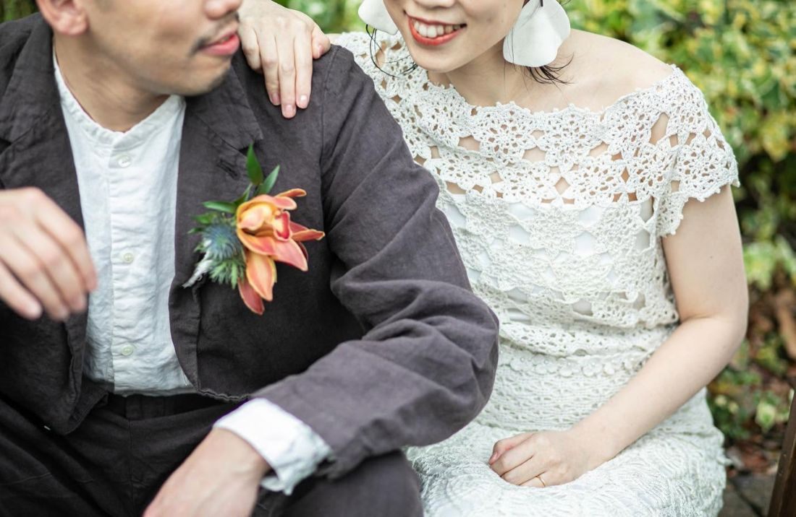
結婚式のパワーを、誰よりも知っているのは私たち
ウェディング業界にいる私たちだからこそ、結婚式のもつパワーを、誰よりも知っているはずです。
新婦が父親の手を離した瞬間の空気。手紙を読む声が震えたときの、会場全体の静けさ。何年も口をきいていなかった兄弟が、その日だけは隣に座っていたこと。誰かの人生が確かに動いた瞬間に、私たちは何度も立ち会ってきました。
だからこそ私たちが今、伝えていきたいのは、結婚式ひとつひとつに素敵な物語があるということです。
エピソードを募集します
愛知ウェディング協議会では「ひとつの物語」プロジェクトとして、プランナー、ヘアメイク、カメラマン、フローリスト、ドレスコーディネイター、司会、音響、サービス、料理人——それぞれの立場から見る結婚式で起こった奇跡やエピソードを募集します！！
同じ一日でも、見ている場所によって、見えているものはまるで違います。厨房から見た結婚式、控室から見た結婚式、カメラのファインダー越しに見た結婚式。その一つひとつが、かけがえのない記録です。
これから業界に入る方も、ぜひ
ウェディング業界に今年就職した方や、ウェディング業界を目指す学生も、不安の中にいると思います。「この時期に選んでよかったのだろうか」——そう思う日があって当然です。だからこそ、先輩たちがどんな瞬間に立ち会ってきたのかを知ってほしいと思っています。
そしてもし、すでに何か心に残る場面に出会っているなら、ぜひ、あなたの素敵な「ひとつの物語」を届けてください。
先の見えない今だからこそ
先の見えない今だからこそ、私たちが作ってきた結婚式の「ひとつの物語」を伝えていくことで、だれかの心に届き、これからの未来を楽しみにできたら——。
いま延期を決断された新郎新婦にも、その決断は結婚式の価値を少しも損なわないのだと、伝わってほしいと願っています。
私たちの想いを届けていきましょう！！！
募集要項
または aichi.wedding.council@gmail.com までメールでも受け付けています
一曲で繋がった想い
投稿：（ニックネーム/うりさん）
愛知ウェディング協議会では、結婚式に携わるさまざまな立場の方から、現場で起こった奇跡やエピソードを募集しています。第1回は、一曲をめぐる物語です。
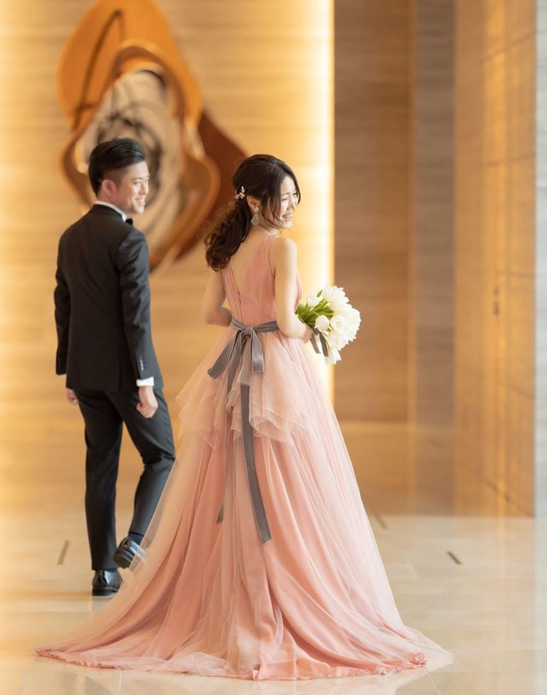
大学時代の写真サークルで出会ったお二人。エンドロールでお二人が選んだ曲は、Official髭男dismの「115万キロのフィルム」でした。結婚式のテーマでもある写真。お二人にぴったりだと感じました。
偶然は、打ち合わせの席で起きた
また、新婦様がご友人に余興を頼んでおり、皆様で曲を歌われるとのこと。その曲は——Official髭男dismの「115万キロのフィルム」。思わず聞き返しそうになりました。理由をうかがってみると、
「男性目線の曲で新婦様へのサプライズにぴったりだし、曲の歌詞も雰囲気も二人っぽいと思ったんです！」
そう答えてくださいました。新郎新婦とご友人が、まったく別々に、同じ一曲にたどり着いていた。打ち合わせは別々に進んでいましたから、示し合わせたわけではありません。それぞれが「お二人らしい曲」を考えた結果が、たまたま重なったのです。
言うべきか、言わないべきか
余興は新婦様にはサプライズです。正直に言うべきか迷いました。「実はエンドロールも同じ曲なんです」とお伝えすれば、ご友人は別の曲に変えられたかもしれません。曲がかぶることを、避けたほうがよいという考え方もあります。
けれど私は、どちらにも言わずに当日を迎えることを決めました。双方の想いを大事にしたい。そう思ったからです。
結婚式当日
そして結婚式当日。余興が始まり、新婦様は涙を流しながら聴いていらっしゃいました。お二人の退場後、エンドロールが流れます。
その瞬間、この曲はこの日のテーマソングなのだと感じました。会場にいた誰もが、同じ旋律を二度聴いた。そしてその二度目に、意味が重なった気がしました。
「なんだか新婦と繋がっているみたいで」
お見送りの時、余興の方に、「この曲が結婚式のテーマソングですね！ お二人と皆様の気持ちが一緒だった証拠ですね！」と伝えたところ、
「私もそう思いました。なんだか新婦と繋がっているみたいで、嬉しくなりました。」
そう、笑顔でお話してくださいました。後日、お二人からもメールをいただきました。
「この曲がテーマソングと言ってくれて嬉しかったです。この曲を聴くとあの結婚式がいつでも思い返せます！ 私達の中で大切な曲になりました。」
ただの一曲が、思い出の曲になる
一つの曲で繋がる想い。ただの一曲から、みんながこの日を思い出せる思い出の曲になった事を感じました。
私も今でもこの曲を聴くと、この日の結婚式を思い出します。
「ひとつの物語」プロジェクトについて
結婚式ひとつひとつに、素敵な物語があります。プランナー、ヘアメイク、カメラマン、フローリスト、ドレスコーディネイター、司会、音響、サービス、料理人——それぞれの立場から見た結婚式のエピソードをお寄せください。
aichi.wedding.council@gmail.com10年ぶりの食事、そして中座の「親父！」
投稿：（ニックネーム/ラガーマンさん）
「ひとつの物語」プロジェクト、第2回。今回は、ご自身の結婚式についての物語です。
私が結婚式をして一番よかったと感じたことは、家族の絆を改めて感じることができたことです。

話さなくなって、10年
私は幼少期から父親が少し怖かったことと、高校生の時から実家を離れ学生寮に住んでいたこともあり、父親と話すことがほとんどありませんでした。
嫌いだったわけではありません。ただ、話さない時間が長くなるほど、話しかけるきっかけは失われていく。気がつけば、顔を合わせても当たり障りのないやり取りで終わってしまう。そんな関係が、当たり前になっていました。
そんな父親と話す機会を作ってくれたのが、結婚式についてでした。父親と一緒に食事をしたのは、約10年ぶりぐらいのことです。私も父親と何を話したらいいのかわからず、また父親も、私と同じ気持ちだったかと思います。
「中座の相手はお父さんで決まりだね」
その後、結婚式の打ち合わせをしている中で、父親との関係をプランナーさんに話していると、
「中座の相手はお父さんで決まりだね」
そう言ってくださいました。私自身は母親にしようかと思っていました。そのほうが自然だと思っていましたし、正直なところ、そのほうが気楽でもありました。けれどプランナーさんの勧めもあり、父親にすることにいたしました。いま思えば、あの一言がなければ、私はきっと無難なほうを選んでいました。
結婚式当日、「親父！」
正直、父親と何を喋っていいのか、どんな反応をするのかも不安なまま、結婚式当日を迎えました。結婚式は滞りなく順調に進み、いよいよ中座の時間となりました。
そこで私が「親父！」と呼ぶと、びっくりした顔の父親が前に来てくれました。すると父親が、前に出てくるといきなり、私にハグをしてくれました。
この時、私自身動揺もありましたが、今までにないぐらい嬉しい気持ちになりました。10年分の距離が、その数秒でなくなったわけではないと思います。それでも確かに、何かがほどけた瞬間でした。
後から知った、父の気持ち
結婚式が終わって母親から聞いた話なのですが、食事会も結婚式も、一番楽しみにしていたのは父親だったそうです。知らなかった、と思いました。あの日、緊張していたのは私だけではなかったのです。
結婚式が終わり実家に帰省した時、父親の部屋を見ると、そこには中座シーンの写真が飾られていました。
結婚式がなければ
結婚式がなければ、父親とはこのまま話すことなく過ごしていたかもしれません。
改めて、家族の絆を感じることができた結婚式は素晴らしいものだと実感した瞬間でした。
「ひとつの物語」プロジェクトについて
結婚式ひとつひとつに、素敵な物語があります。プランナー、ヘアメイク、カメラマン、フローリスト、ドレスコーディネイター、司会、音響、サービス、料理人——それぞれの立場から見た結婚式のエピソードをお寄せください。
aichi.wedding.council@gmail.com財布の中の、一枚の手紙
投稿：（ニックネーム/はっちゃんさん）
「ひとつの物語」プロジェクト、第3回。少人数の結婚式で起きた、忘れられない場面についての物語です。
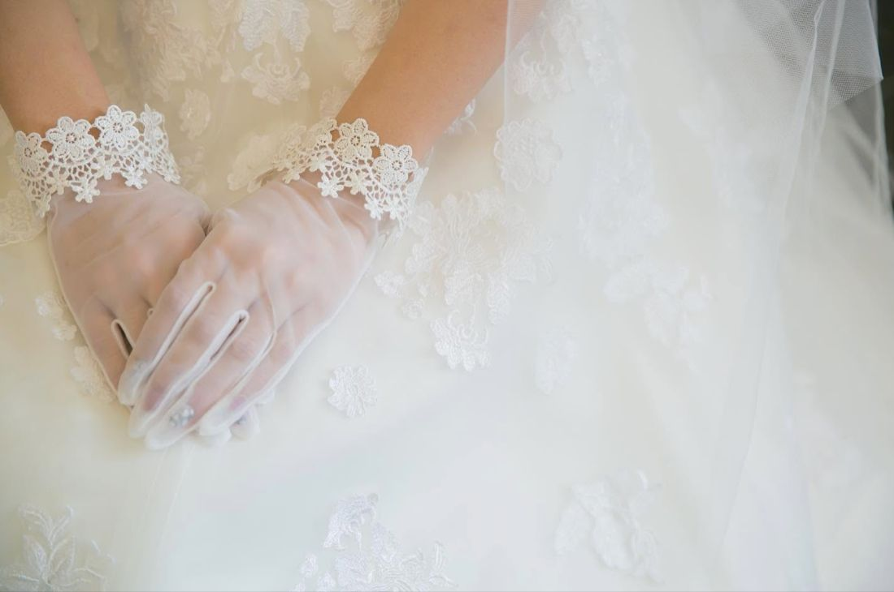
ご親族だけの少人数のご結婚式を選ばれたお二人。新婦様は特にクールで、ご家族のお話もなかなかお話されず、打ち合わせも淡々と進んで行きました。こちらから水を向けても、必要なことだけを的確に返される。その距離の取り方には、はっきりした意思のようなものを感じていました。
当日、感じた違和感
そして迎えた当日。挙式も披露宴も順調に進みましたが、なぜか私は、新婦様とご家族との距離に違和感を感じていました。
うまく言葉にはできません。ただ、少人数だからこそ近くにいらっしゃるはずのご家族との間に、目に見えない一線があるように思えたのです。
その違和感がなんだったのか、はっきりしたのは、新婦様のお手紙の時間でした。
小学生の頃の、たった1回
小さな頃からお仕事が忙しく、家族との時間をあまり取れていなかったお父様。なかなか一緒に過ごせないお父様に、小学生のころ、頑張って手紙を書いて渡したそうなのですが、目の前で読んでくれなかったことが悲しくて——その1回から、手紙を書かなくなり、余計に距離を置くようになったそうです。
「そんなことも、お父様は覚えていないだろうけど…」
そう前置きをした上で、ご家族への思いを、いつものように淡々と読み上げていらっしゃいました。
お父様が、財布から出したもの
手紙が終わり、ご両親へ花束を贈呈されたとき。お父様が財布から何かを出し、新婦様に見せていました。それまで泣かなかった新婦様が、それを見た途端に泣き崩れていました。
お父様は、ずっとずっと持っていたのです。小学生の新婦様からもらった、たった1枚の手紙を。
何度も何度も読み返し、持ち歩いて、大切に保管していたそうです。折り目がやわらかくなるまで開かれてきたその紙が、二十年近く、財布の中にあり続けた。読んでもらえなかったと思っていた手紙は、誰よりも繰り返し読まれていたのです。
涙が止まらなかった
お見送りの間際まで、涙が止まらなかった新婦様。これまでの悲しみや、信じてこられなかった罪悪感など、全てが溢れ出たように見えました。
実は、手紙を読むかどうかも、ギリギリまで決められなかった新婦様です。読まないという選択も、十分にありえました。
結婚式という場が、空気が
結婚式という場が、空気が、お父様と新婦様の溝を埋めてくれたと感じました。日常のなかで、あの手紙が財布から出てくることは、きっとなかったと思います。あの日、あの時間、あの場所だったから、お父様は手を伸ばせた。
その瞬間をこの目で見られたこと、結婚式のパワーを肌で感じられたことが、私は今でも忘れられません。
「ひとつの物語」プロジェクトについて
結婚式ひとつひとつに、素敵な物語があります。プランナー、ヘアメイク、カメラマン、フローリスト、ドレスコーディネイター、司会、音響、サービス、料理人——それぞれの立場から見た結婚式のエピソードをお寄せください。
aichi.wedding.council@gmail.com【解説動画 第2弾】BIA「感染拡大防止ガイドライン」
愛知県も国からの緊急事態宣言が解除され、BIAから「感染拡大防止ガイドライン」が発表されました。『コロナ後のブライダル業界』に向けて、いよいよ動き出す段階です。
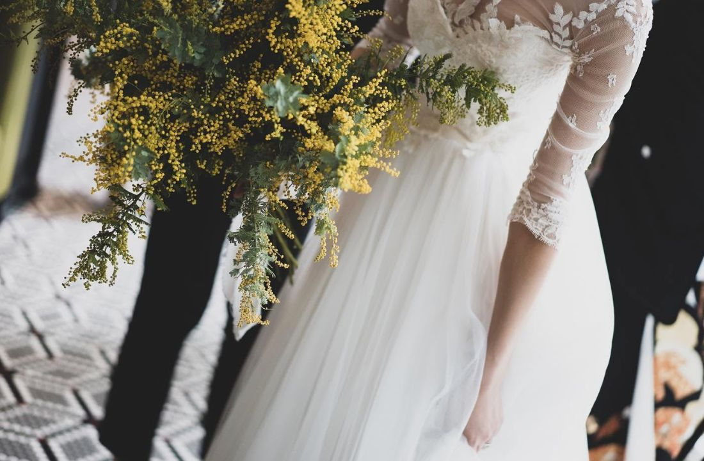
「再開できる」その先にある問い
宣言の解除は、待ち望んだ知らせでした。けれど同時に、新しい問いが一斉に生まれた瞬間でもありました。何をどこまで守れば、安心して式を挙げていただけるのか。会場のレイアウトは。ゲストのご案内は。集合写真は。ご列席の人数は。歓談は。
「再開してよい」と言われることと、「どう再開するか」を決められることは、まったく別のことです。その拠りどころとなるのが、今回のガイドラインです。
昨日に続き、第2弾の解説動画
愛知ウェディング協議会 監事、株式会社ブライト 代表取締役の夏目哲宏さんに、昨日、解説動画を作成いただきました。そして本日は、みなさんからの質問をまとめた解説動画を作成くださいました。
昨日の動画をご覧になった方から寄せられた「ここが分からない」「うちの場合はどうなるのか」という声に、ひとつずつお答えいただく内容です。一社で読み解こうとすると迷うところも、同じ疑問を持つ仲間がいると分かるだけで、判断はずいぶん楽になります。

関連リンク
まずは本文に目を通していただき、そのうえで解説動画をご覧いただくと、より理解が深まるかと思います。
これからも情報を届けます
状況は日々変わります。愛知ウェディング協議会としては、その変化を追いかけ、ウェディングに関わるみなさまと共有しながら、ともに前へ進んでいければと考えています。
ご不明な点やご質問は、いつでもお寄せください。次回の解説動画で取り上げさせていただくかもしれません。
【5月20日20時】インスタライブ ゲスト：黒沢祐子さん
インスタライブ ■5/20(水) 20:00- Wedding & Party designer 黒沢 祐子さんをゲストにお迎えします！！
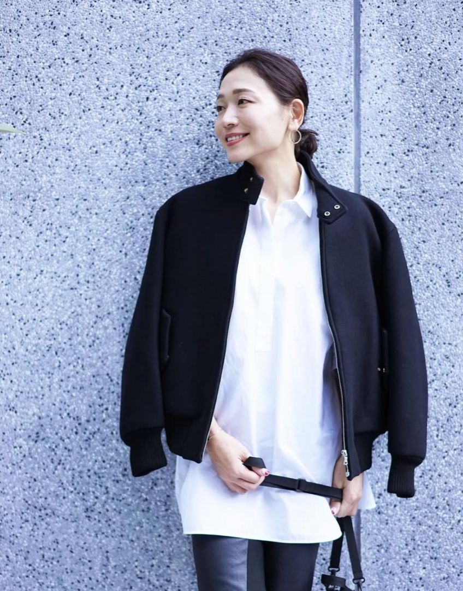
Profile
大学を卒業後、株式会社Plan・Do・Seeに転職され、ウェディングプランナーに転身。2008年、会場探しから一緒にスタートするフリーランスのスタイルで再始動され、現在までに950組ものカップルを担当されています。
新郎新婦の「想い」を大切にしたテーマ・コンセプトを提案し、ふたりの気づいていない「想い」を具現化してこられました。
「会場探しから一緒に」というスタイル
950組。数字を並べるだけでは伝わらないかもしれませんが、これは十数年にわたって、月に何組もの人生の節目を預かり続けてきたということです。
そして黒沢さんのスタイルは、会場が決まってからお手伝いに入るのではなく、会場探しの段階からふたりと一緒に歩くというもの。どこで挙げるかという選択そのものに、ふたりらしさが表れます。その最初の一歩から伴走されているからこそ、ご本人たちも言葉にできていない「想い」を掬い上げることができるのだと思います。
今や、大人の女性としての日々のスタイルも、多くの女性に共感されていらっしゃいます。
お聴きしたいことが、たくさんあります
しなやかに、強い想いを持って、この業界で長くご活躍される祐子さん。大切にしていること。フリーランスとして独立を決めたときのこと。長く続けるために手放したものと、手放さなかったもの。そして今、何を思い、どのような未来を見ているのか——お聴きしたいことはたくさんあります！
いまフリーランスとして先行きに不安を抱えている方、これから独立を考えている方にも、きっと持ち帰れるものがある時間になるはずです。
皆さんからのご質問を募集します
皆さんのご質問を、インタビュアー坂田が祐子さんへ投げかけます。ぜひこの機会に、祐子さんへの質問がございましたら、DMでもコメントでも構いませんのでお知らせください。小さな疑問でも構いません。同じことを聞きたかった方が、きっと画面の向こうにいらっしゃいます。
ご視聴方法
「愛知ウェディング協議会」で検索、またはInstagramアカウント【aichi_wedding.council】をご覧ください。アカウントをフォローいただくと、ライブ開始時に通知が届きます。
忘れられない握手
投稿：（ニックネーム/桜さん）
「ひとつの物語」プロジェクト。今回は、29年にわたってこの仕事を続けてこられた司会者の方からのお便りです。
ブライダルアナウンサーとして働き、29年の月日が経ちました。私がこの仕事を続けているのは、ある花嫁のお父様との、忘れられない“握手”があるからです。
余命1か月と告げられて
余命1か月のお父さんに花嫁姿を見せたいと、結婚式を挙げることを急遽決めたカップルのお話です。本当は、あと2、3年したら式を挙げようとしていたお二人でした。けれど新婦のお父様が癌であることがわかり、余命1か月と宣告され——とにかく花嫁姿を見せてあげたい。その一心で迎えた当日でした。
準備の期間は、ほとんどありませんでした。それでも、やらないという選択肢は誰の頭にもありませんでした。最悪の場合、結婚式ではなくお葬式になってしまう。絶対結婚式をするんだと、みんなが心に強い気持ちを持って迎えた結婚式当日。無事、結婚式、披露宴が結びました。
お見送りの、その手
お見送りの時、車椅子に乗られた花嫁の父は、誰が見ても間もなく亡くなるであろうとわかる姿でした。そんなお父様が、私に手を差し出してくださり、
『間に合って良かった。ありがとう』
そう涙を流して、握手して下さいました。その時のお父様の、力の無いか弱い握手。しかし、お父様が力の限り一生懸命握りしめて下さったとわかる握手。温かい手のぬくもりは、一生忘れられない握手となりました。
数日後
それから数日後、お父様はお亡くなりになられたそうです。最期には、花嫁姿が見れて本当に良かった——との言葉を遺して下さったとお聞きしました。
この仕事のやりがい
ハッピーな話ではないかもしれません。けれどこの時、私は結婚式に関わる仕事の大きなやりがいを感じました。こんな自分でも誰かのためになれたこと。一人の方の人生の終わりに、喜んでいただけたこと。
以来、結婚式の思い出と共に記憶に残していただける司会者でいたいと、自身の目標も出来ました。誰かのために一生懸命になり、その誰かが喜んでいる姿を見て、自分の喜びにする。結婚式は、まさにそんな仕事だと思います。
30年目を前に
間もなく30年を迎える私のブライダルアナウンサーとしての時間は、あの時のお父様の、あの握手が支えて下さっています。こんなにやりがいを感じる仕事は他には無いと、自分の仕事に誇りを持っています。
“生まれ変わってもブライダルの仕事がしたい！！” そう思わせてくれた、一生忘れてはならない、忘れることが出来ない、花嫁の父との握手です。
「ひとつの物語」プロジェクトについて
結婚式ひとつひとつに、素敵な物語があります。プランナー、ヘアメイク、カメラマン、フローリスト、ドレスコーディネイター、司会、音響、サービス、料理人——それぞれの立場から見た結婚式のエピソードをお寄せください。
aichi.wedding.council@gmail.com「結婚式をする理由は？」——答えは、式のあとに届いた
投稿：（ニックネーム/シュガーさん）
「ひとつの物語」プロジェクト、第5回。プランナー3年目の頃に受け取った、一通の手紙のお話です。
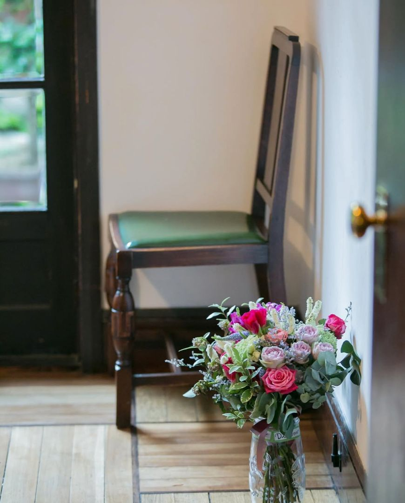
ウェディングプランナーになって3年目くらいに出会ったお二人。お二人はお見合いで出会ったそうで、新郎様はとても真面目で口数は少ないけれど、笑顔が素敵な方。新婦様は新郎様をたてる、すごく奥ゆかしい雰囲気を持たれた方でした。
「なんとなく」
初めてお会いした時、『お二人にとって結婚式をする理由は？』と聞いて出て来た答えは——『なんとなく』。
なんだかお二人どうしが遠慮し合っているようで、お二人にとって何を大切にしたいか？ どんな結婚式にしたいのか？ を見出す事がなかなかできませんでした。
打ち合わせを重ねても、決定事項は埋まっていくのに、肝心の芯のようなものが見えてこない。それでも私は、毎回のように同じ問いを繰り返していました。
落ち込んでいた
あたりさわりのない提案しかできなかった結婚式だったなぁと、少し落ち込んでいました。新人ではないけれど、まだ自分の型もない三年目です。「オリジナルウェディングをつくれなかった」という悔いだけが、当日が終わったあとも残っていました。
挙式後に届いた手紙
だけど、挙式後に新郎様からもらった手紙が、プランナーとしての考え方が変わったきっかけとなりました。
結婚式をする理由は何？ といつも聞いてくれてありがとうございます。
私たちはご存知の通りお見合いで知り合いました。出逢ってからの機会が少ないせいか、本音で話し合う事を避けてきていたみたいです。
結婚式をする理由を自分で真剣に考えた時、奥さんの事をこれからもっと知って行きたい。自分の事をもっと知ってほしい。と思うようになりました。
僕にとって結婚式を挙げる理由は、それを知るためだったのだと思います。
プランナーの仕事は、それだけじゃない
ウェディングプランナーは、二人だけのオリジナルウェディングを作らなきゃ。そう思っていました。けれど、プランナーの仕事ってそれだけじゃないのだなと、気付かせてもらえるきっかけになりました。
答えが打ち合わせの席で出なくてもいい。問いを渡し続けることそのものが、お二人の時間のなかで働くことがある。私が「届かなかった」と思っていた問いは、私の見ていないところで、ちゃんとお二人のあいだに置かれていたのです。
これからも、お二人だけのストーリーに寄り添っていける存在になりたい。
この手紙は、今でも大事にしています。
「ひとつの物語」プロジェクトについて
結婚式ひとつひとつに、素敵な物語があります。プランナー、ヘアメイク、カメラマン、フローリスト、ドレスコーディネイター、司会、音響、サービス、料理人——それぞれの立場から見た結婚式のエピソードをお寄せください。
aichi.wedding.council@gmail.com2年後にかかってきた電話
投稿：（ニックネーム/いも姉ちゃんさん）
「ひとつの物語」プロジェクト、第6回。一度は諦められた結婚式が、2年の時を経てかたちになったお話です。
結婚式をやるか、やらないか。迷っていたおふたりでした。
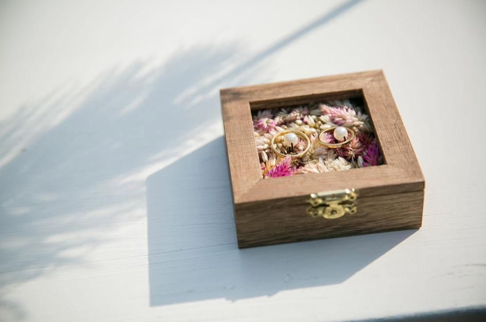
ふたりの温度差
ドレスを着たい！ みんなに集まってもらえるなんて最高！ 写真をたくさん残したい！——結婚式の憧れを、たくさんお聞かせくださる新婦様。その一方で、浮かない表情の新郎様は「結婚式にお金をかけたくない…」と消極的でした。
打ち合わせのテーブルで、片方が夢を語り、片方が黙る。私たちにとっては珍しくない光景ですが、だからといって簡単に埋められるものでもありません。その後も何度もお話をさせていただきましたが、新郎様は前向きになれないまま。
諦めた日
3ヶ月ほどだった頃、おふたりの間に新しい命を授かったとご連絡がありました。新婦様はご予算を心配され、結婚式を諦められました。
おめでたいご報告のはずなのに、電話を切ったあと、しばらく受話器の前から動けませんでした。ドレスの話をされていたときの新婦様の表情が、どうしても頭から離れませんでした。
約2年後の電話
それから約2年後、新郎様からお電話がありました。なんと、結婚式をやろうと思う、とのお話。おふたりは、女の子を授かったそうです。
育児は、毎日が初めてのことの連続だという事。新婦様は慣れない育児を一生懸命やってくれているという事。親になって初めて、子どもの幸せが大切に感じるようになったという事。そして、「いつかはお嫁にいくんだね」と新婦様とお話された事。
あの時ドレスを着せてあげれば良かった。その姿をご両親に見せてあげれば良かった。
そんなお話をしてくださいました。娘さんの花嫁姿を想像したときに初めて、ご自身が奥様から奪ってしまったものの大きさに気づかれたのだと思います。
そして、当日
もちろん新婦様は大変喜ばれ、すぐに結婚式の準備が始まり、当日を迎えました。楽しそうなおふたりの式で、私が一番心に残ったのは、結びの新郎様のご挨拶です。
この人と結婚して良かったと思った 結婚式をして良かったと思った そう思わせてくれた皆様に感謝しています
かつて「お金をかけたくない」とおっしゃっていた方の言葉です。
初心にかえらせてくれる
長い年月を経て、結婚式の意味や価値に気付き、同時に私たちスタッフにもその素晴らしさを気付かせてくれた、このおふたりの結婚式。今でも私を、初心にかえらせてくれます。
「ひとつの物語」プロジェクトについて
結婚式ひとつひとつに、素敵な物語があります。プランナー、ヘアメイク、カメラマン、フローリスト、ドレスコーディネイター、司会、音響、サービス、料理人——それぞれの立場から見た結婚式のエピソードをお寄せください。
aichi.wedding.council@gmail.com【インスタライブ最終回】ゲスト：株式会社リクシィ 安藤正樹さん
インスタライブシリーズ、最後のゲストをご紹介します。
これからの業界を、どう見るか
みんなが思いを馳せる、これからのウェディング業界について、安藤さん独自の視点で語っていただきます。
いま業界にいる誰もが、同じ問いを抱えていると思います。この先、結婚式はどうなるのか。自分たちの会場は、自分たちの仕事は、どう変わっていくのか。答えを持っている人はいませんが、視野の広い人の見立てを聞くことは、自分で考えるための足場になります。
ライブでの質問や意見にも、その場でお答えいただきます。
多様性を受け入れる、自ら多様化する
多様性を受け入れていく、もしくは自ら多様化できるためのヒント、刺激がきっとある！これは、会場の在り方だけの話ではありません。働き方も、キャリアの積み方も、事業のかたちも、ひとつの正解に寄せていく時代ではなくなりました。
「変わらなければいけない」と分かっていても、何をどう変えるのかが見えない——そんな方にこそ、聞いていただきたい回です。
ご視聴方法
「愛知ウェディング協議会」で検索、またはInstagramアカウント【aichi_wedding.council】をご覧ください。アカウントをフォローいただくと、ライブ開始時に通知が届きます。ご質問は、DMやコメントで事前にもお寄せいただけます。
シリーズ最終回です。お楽しみに。
6/18 オンラインセミナー『新型コロナ関係総まとめ ブライダル法務セミナー』
愛知ウェディング協議会より、ぜひ皆さまにお知らせしたい情報をシェアします。Vol.1です。
『新型コロナ関係総まとめ ブライダル法務セミナー』
～全国のブライダル関係者の皆様へ捧ぐ！～
この経験を次に活かすために、「法律のチカラ」がお役に立てることがあります。コロナはブライダル業界に大きな傷跡を残し、新郎新婦に底知れぬ不安感を与えてしまいました。
そんな厳しい環境下で、今日も最前線に立ち続けるスタッフの方々へ、心から敬意と応援の気持ちを込めて。BRIGHT初となる『オンラインセミナー』をお届けいたします。
日本中から寄せられた、切実な疑問
どれも、現場で実際に突きつけられている問いです。答えを持たないまま新郎新婦と向き合うのは、精神的にも消耗します。そんな日本中から寄せられる疑問に答えるべく、このセミナーは以下の【5部制】でお届けします。
（※一部内容が変更される場合があります。）第4部・第5部にご注目ください。目の前の対処法だけでなく、次に来る危機への備えと、契約モデルそのものの見直しにまで踏み込む構成になっています。
2か月の発信から見えたもの
日本で唯一「ブライダル専門」の立場から法律サービスを提供するBRIGHTは、3月末から約2か月の間、全国のブライダル事業者の皆様に向けて、新型コロナウイルスに関する法律情報を必死になって発信し続けてきました。
緊急事態宣言が解除された今こそ語れる、そこから見えた「業界の抱える課題」、そして「希望」。日頃発信している動画では伝えられない、BRIGHTのもつすべてのノウハウをお伝えし、すべてのブライダル関係者とともに新型コロナウイルスを乗り越えるための、質疑応答タイムを含めた2時間半の『オンラインセミナー』です。北海道から沖縄まで、ブライダルに従事する全ての方に届けます。
開催概要
オンライン開催ですので移動は不要です。当日ご都合がつかない方も7日間のアーカイブで受講いただけます。ぜひ、周囲のブライダル関係者の方にもお知らせください。
【掲載のご報告】日本経済新聞に取材いただきました
日本経済新聞に取材いただき、6月5日朝刊および6月4日電子版に記事が掲載されました。

会員の皆さまの情報が、エビデンスになりました
会員の皆さまよりご提供頂いた情報をエビデンスとして、ウェディング業界の現状を広く知っていただくことができました。
数字の裏づけがあるかないかで、伝わり方はまったく違います。「大変です」という言葉だけでは、どうしても実感を持って受け取っていただけません。現場から寄せられた具体的な情報があったからこそ、業界の外にいる方にも、いま何が起きているのかを届けることができました。
そして記事では、冠婚葬祭の新状態（ニューノーマル）についても取り上げられています。とても興味深い内容ですので、ぜひご一読ください。
※ 日経電子版をご覧になれない方は、会員登録（無料会員は月10件の有料記事閲覧が可能）で読むことができます。
発信を、続けてまいります
まだまだ大変な状況ではありますが、これからも協議会として、ウェディング業界の現状を知っていただけるよう、そして結婚式の魅力を発信していけるよう、活動してまいります。
業界の内側だけで声を上げていても、届く範囲には限りがあります。今回のように業界の外へ開かれた場で取り上げていただくことは、私たちにとって大きな意味があります。こうした機会を、今後も一つずつ積み重ねてまいります。
御礼
最後になりましたが、被害情報をご提供くださった皆様には、改めてお礼申し上げます。
ご自身も厳しい状況にあるなかで、数字を出し、実情を言葉にしてくださったこと。その一つひとつが、今回の記事の土台になっています。誠にありがとうございました。
プランナー向けお悩み解決マガジン「SUEHIRO "NOTE"」がローンチ
愛知ウェディング協議会より、ぜひ皆さまにお知らせしたい情報をシェアします。Vol.2です。
今回ご紹介するのは、愛知を拠点に活動されているウェディングプランナーの有志団体「SUEHIRO」さんからのお知らせです。以下、SUEHIRO様よりいただいたメッセージをご紹介いたします。
SUEHIRO "NOTE" ローンチのお知らせ
初めまして。「いま結婚式のあり方を見直そう！」をスローガンに活動をしているSUEHIROです。愛知を拠点に、全国の有志のウェディングプランナーが熱意と夢だけを胸に集い、「これみんな知りたいよね！ 知ってたら良いよね！」という視点を大切にしながら、現場ですぐ役立つ知識を得られるオンライン勉強会や、旬な情報をゲストにお届けするインスタLIVE（SUEHIRO スタジオ）を開催してきました。
全ては"現役プランナーの臨場感"で、1組でも多くのカップルを救いたいと思ったからです。
「SUEHIRO "NOTE"」をリリースしました
そんなSUEHIROですが、もっと現場に寄り添い、時代に合った結婚式のかたちを大切に育みたいという想いから、プランナー向けのお悩み解決マガジン「SUEHIRO "NOTE"」をリリースいたしました。
NOTEでお届けする内容
結婚式の本質を見失わず、ウェディング業界でプランナーさんが活き活きと長く輝き続けるために。プランナーさんたちが「今困っていること」「今結婚式に求められていること」、そして「新郎新婦が困っていること」をいち早くキャッチし、一緒に解決していくために。鮮度を大切に、役立つ情報を発信していきます。
近々、「学びサークル」も
そして近々、気軽に集まり、気軽に意見交換をできる「学びサークル」もはじめる予定です。一人で悩みを抱え込まずに済む場所を、業界のなかにつくっていきたいと考えています。
どうぞよろしくお願いいたします
SUEHIROの想いに共感いただけた方は、ぜひNOTEをご活用頂き、明るい結婚式の未来を創り上げていくための一つのツールとして扱って頂けましたら嬉しいです。まだまだ走り出したばかりの団体ではありますが、現場のリアルを私たち自身も日々体感し続けながら、この事業を温めていきたいと思っております。
どうぞSUEHIROをよろしくお願い致します。
現場に立ち続けている方だからこそ書ける情報には、他では得られない価値があります。プランナーの皆さまはもちろん、これから業界を目指す学生の方にも参考になる内容かと思います。ぜひご覧ください。
【掲載のご報告】中日新聞朝刊（県内版）に副代表・吹原のコメントが掲載
2020年7月10日、中日新聞朝刊の県内版に、愛知ウェディング協議会 副代表・吹原のコメントをご掲載いただきました。
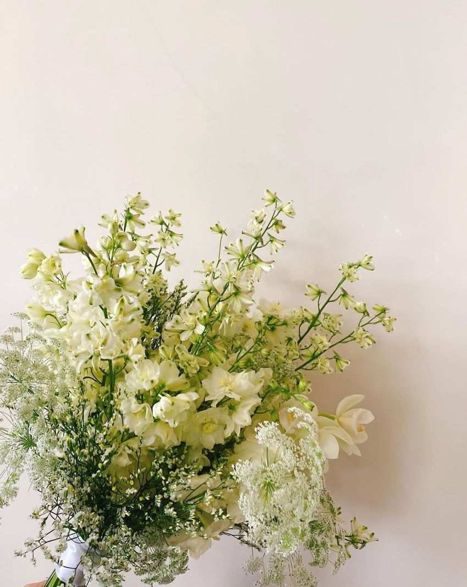
地元紙という、この地域の暮らしにいちばん近いところで取り上げていただけたことに、大きな意味を感じています。ウェディング業界の現状は、業界の内側だけで語っていても広がりません。県内の読者の方に、いま結婚式の現場で何が起きているのかを知っていただく機会になれば幸いです。
第二波、首都圏の感染者再急増
一方で、状況は再び厳しさを増しています。第二波。首都圏では感染者が再急増しています。
緊急事態宣言が解除され、ようやく前を向きはじめたところでの報せです。予定していた式をどうするか、あらためて悩まれているご両家も少なくないと思います。現場のスタッフもまた、答えの出ない問いを抱え直すことになりました。
まだまだ安心できる状況ではありません。
それでも、「笑顔」で
それでも私たちは、新郎新婦を想い、結婚式への信念を持ち、前を向いていきたいと思います。
私たち業界のスタンダードは「笑顔」です。
どれだけ不安な状況にあっても、当日、お客様の前に立つときには笑顔でいる。それがこの仕事を選んだ者の矜持であり、いちばんの武器でもあります。
その笑顔で、明るく世の中を照らしていきましょう。
AWC BIGオンラインカンファレンス2020 開催のお知らせ
会員の皆さまへ。
本日、愛知ウェディング協議会 会員限定の大切なご案内を、メールにてお送りしております。
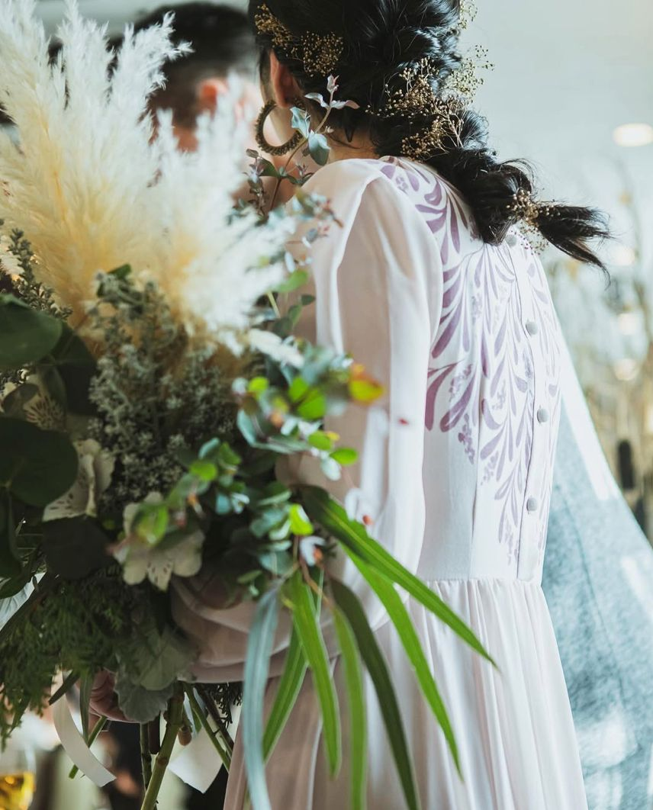
開催概要
お手数をおかけしますが、期日までにご返信いただきますよう、お願い致します。
まだご入会でない皆さまへ
返信期日までにご入会手続きをお済ませいただきましたら、ご案内は随時お届け致します。「参加してみたいけれど、まだ会員ではない」という方も、この機会にぜひご検討ください。ご入会に関するお問い合わせは、下記のメールアドレスまでお気軽にどうぞ。
AWCが目指すもの
AWCは、より多くの皆様と、「愛知県の結婚という文化のために」「新型コロナウイルスから大切なことを守るために」行動して参りたいと考えております。
この一年、私たちは陳情、情報発信、セミナー、エピソードの募集と、できることを一つずつ重ねてきました。そのどれもが、会員の皆さまのお力があって成り立ったものです。
今回のカンファレンスは、そうして積み上げてきたものを一度持ち寄り、これから先を一緒に考える場にしたいと考えています。オンライン開催ですので、遠方の方も、当日お仕事が入っている方も、参加のハードルは低いはずです。ぜひ、多くの皆さまのご参加をお待ちしております。
結婚式・結婚のすばらしさの発信／ウェディングに携わる仕事のすばらしさの発信
【AWC リアルカンファレンス_2020】12月2日開催
いよいよ10月も終盤になろうとしており、2020年も残すところ2か月と少しです。

「空白の1年」を、どう受け止めるか
我々ウェディング業界、そして新たに社会人として仲間となった貴重な人材にとって、2020年は、空白の1年だったと感じる方も多いのではないでしょうか。予定されていた式が消え、覚えるはずだった仕事の場面が失われ、会えるはずだった人に会えないまま数か月が過ぎました。特に今年入社された方には、申し訳ない気持ちさえあります。
ただ、この試練の中、失うだけでなく、新しい道を模索し、何か得るものを探し、歩幅は小さくなっても、下を向くことなく、新郎新婦を想って耐えてきたことで、きっと私たちは強くなっていると信じます。
愛知ウェディング協議会は、諦めることなく、時代に合わせて、大切なものを守っていくために活動してまいります。そしてこの2020年の最後に、皆さまとお顔を合わせ、今期の結びとして以下のイベントを開催することをご案内申し上げます。
開催概要
セミナー内容
《 新型コロナウイルス感染症 最新のガイドラインと対策方法 》
保健センター（旧保健所）より専門の方を招いて、我々の業界に則った内容で、最新かつエビデンスある情報をお話いただきます。
「対策するのは会場だけ」ではありません
会場、施設だけが対策するわけではありません。打合せで、あるいは結婚式当日。様々な立ち位置で、新郎新婦、ゲスト、また他スタッフと関わる、全てのセクションが対象です。
この1年、私たちは手探りで対策を積み上げてきました。けれど「これで合っているのか」を確かめる機会は、ほとんどありませんでした。専門家に実際のところを聞きたいと思いませんか？（内容詳細は、多少の変更の可能性があります。）
会費
※ 会員・非会員 共に、懇親会のみのご参加でも会費は変動いたしません。
定員
60名（法人会員：2名まで／個人会員：1名まで／非会員：お一人ずつお申込みください）
お申込みの流れ
① 下記のフォームにご入力ください。② 協議会よりメール返信にて、参加確定メールを送信します。③ 当日は参加確定メールを確認しますので、プリントアウトしたもの、またはスマホ画面のいずれかをご用意の上、会場へお越しください。
その他のご案内
① 館内見学について
当日、THE TOWER HOTEL NAGOYA様のご厚意により、宿泊フロア（※ご宿泊客が最優先です。当日予定変更もございます）とレストラン「グリシーヌ」を見学させていただける予定です。同業だからこそ気になる部分を、直接見せていただける貴重な機会です。ご希望の方は、15時30分に間に合うようにお越しください。（参加連絡は不要です。）
② パンフレット展示スペース
会場の一画に、会員企業パンフレット展示スペースを設けます。当日、パンフレットを適宜お持ちいただき、ご自身でスペースへ設置をお願いします。（事前のお預りはいたしません。）
多くの皆さまとこれからのウェディング業界についての意見交換、そして来年度の協議会活動への議論ができますことを、心より楽しみにしております。画面越しではなく、同じ場所で顔を合わせて話す。この一年、当たり前ではなくなったその時間を、大切に過ごせればと思います。
一般社団法人 愛知ウェディング協議会
【開催報告】リアルカンファレンス2020
多くの方にお越しいただき、『愛知ウェディング協議会 リアルカンファレンス2020』を開催することができました。

形を変えても、開催できたこと
今回の実施に際しては、コロナの感染拡大状況により、直前の内容変更等でご迷惑をおかけしました。準備を進めながらも、最後まで状況を見つめ続ける日々でした。予定どおりに開けないもどかしさもありましたが、こうして形を変えても開催できましたことに、心より感謝申し上げます。
ご参加いただきました皆様、ご協力いただきました皆様、誠にありがとうございます。


セミナーで学んだこと
セミナーでは、結婚式を安全に実施するため、新型コロナウイルス感染症に関する基本的な知識や正確な情報、そして法的観点からの正しい見解などを学ばせていただきました。講師を引き受けてくださった、
名古屋市保健所 中保健センター 田邊先生
株式会社ブライト 代表取締役 夏目哲宏氏
誠にありがとうございました。医学的な知見と法的な見解、その両面から同じテーマを扱えたことに、大きな意味がありました。現場の判断は、どちらか一方だけでは成り立たないからです。
第三波のなかで、私たちが持ち帰ったこと
第三波は既に到来しています。感染を100%食い止めることはできないのだ、ということ。けれども、それがどのように拡がっていくのかを私たちが正しく知ることで、防げる確率は高くなります。
正しい知識こそ、言葉に自信を生み、新郎新婦やご家族、ゲストの皆さまへの安心に繋がること。「大丈夫です」と言うとき、その言葉に根拠があるかどうか。ご列席の方は、私たちの声のわずかな迷いを敏感に感じ取られます。知識は、対策のためだけではなく、安心を届けるための道具でもあるのだと気づかされました。
披露宴に携わるのは会場のスタッフだけでなく、サービス、カメラマン、スタイリスト、フローリスト、司会者、全ての人たちが、正しい知識を持っていること。一つの現場に立つ全員の理解が揃って初めて、その式は安全になります。だからこそ、会場という枠を超えて集まれる協議会という場に、意味があるのだと思います。
同じ方向を向いている仲間がいる
愛知ウェディング協議会に加盟している方々は、そんな同じ方向を向いている素晴らしい方ばかりだと、実感できる時間となりました。久しぶりに顔を合わせ、同じ話を聞き、同じ課題を共有する。その当たり前だったことが、どれほど力になるかを改めて感じた一日でした。
会員の皆さまへ
参加者の皆様にアンケートのご協力をお願いし、会員の皆さまには、そちらの結果とカンファレンスの資料をメールにてお送りします。ご確認をお願い致します。
エリアウェディングサミット／ウェディングシンポジウム2020に参加します
いよいよ明日。
愛知ウェディング協議会も、各エリアのウェディング協議会が参加するエリアウェディングサミット／ウェディングシンポジウム2020に参加させていただきます。
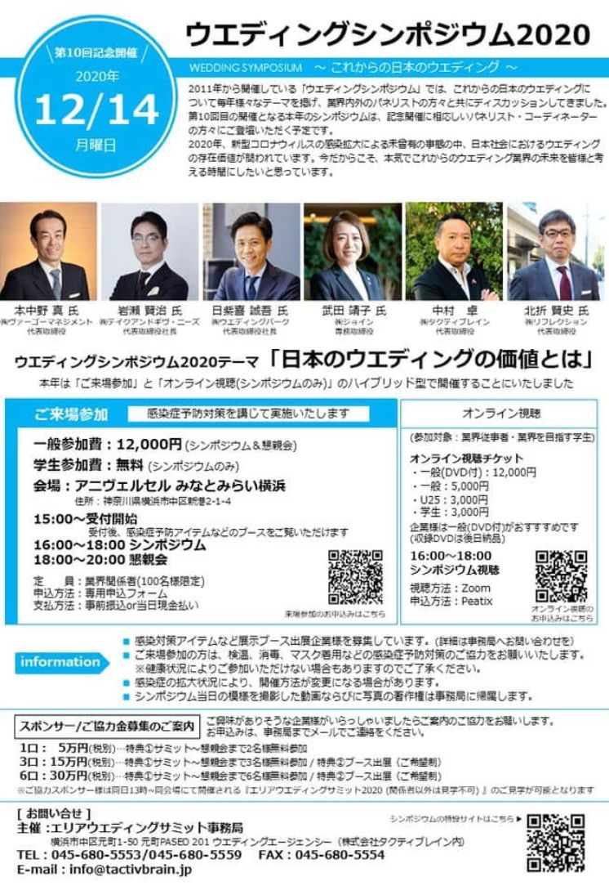
全国の協議会が、一堂に
ウェディングの文化は、地域ごとに大きく異なります。しきたりも、会場の在り方も、そして今年の受けた影響の出方も、土地によって違うはずです。その各エリアの協議会が集まり、同じテーブルで語り合う。私たちにとって、またとない機会です。
愛知のやり方が当たり前ではないこと。逆に、愛知だからこそ守れているものがあること。外の視点に触れて初めて見えるものは、少なくないと思います。
持ち帰ってくるもの
なくしてはならない文化だからこそ、変えるべき概念と、信じるべき本質を。守ることと変えることは、対立するものではありません。何を変えないために何を変えるのか——その線引きこそ、いま業界全体が問われていることだと感じています。
様々なご意見、視点、発想を、愛知県に持ち帰ってきます！
会員の皆様へ
追って共有いたしますので、愛知での議論をしましょう。持ち帰った内容を、そのままご報告して終わりにはしません。他エリアの取り組みを知ったうえで、では愛知はどうするのか。そこを一緒に考えていければと思います。
2021年、始動しました
今日は、協議会の2021年初の定例会でした。
2年目の愛知ウェディング協議会
2020年1月に設立した私たちも、いよいよ2年目に入ります。振り返れば、1年目は「守る」ことに力を注いだ一年でした。陳情、情報発信、セミナー、エピソードの募集。目の前で崩れそうになるものを支えるために、できることを一つずつ積み重ねてきました。
2年目は、そこに「つくる」を重ねていきたいと考えています。
今年もみなさまとご一緒に、たくさんのことを実施していきたいです！！
まずは3月にイベントを
さっそくですが、まずは3月にイベントを予定しています。また詳細はこちらにてご報告いたしますので、続報をお待ちください。
未来を作っていきましょう
まだまだ厳しい業界です。先の見通しが立たない日々が続いています。だからこそ——未来を作っていきましょう！！
待っているだけでは、状況は変わりません。この一年で私たちが学んだのは、動いた分だけ何かが返ってくるということでした。今年も、一つずつ形にしてまいります。
本年もどうぞよろしくお願いいたします。
名古屋市長に、延期・中止で負担を負ったご夫婦への支援を要望しました
全ては、辛い想いを抱える新郎新婦のために。
本日2021年2月18日午後、河村たかし名古屋市長に、『結婚式の延期、中止により経済的負担が生じた夫婦等の支援の要望』に関する資料の提出と、意見交換のお時間をいただきました。
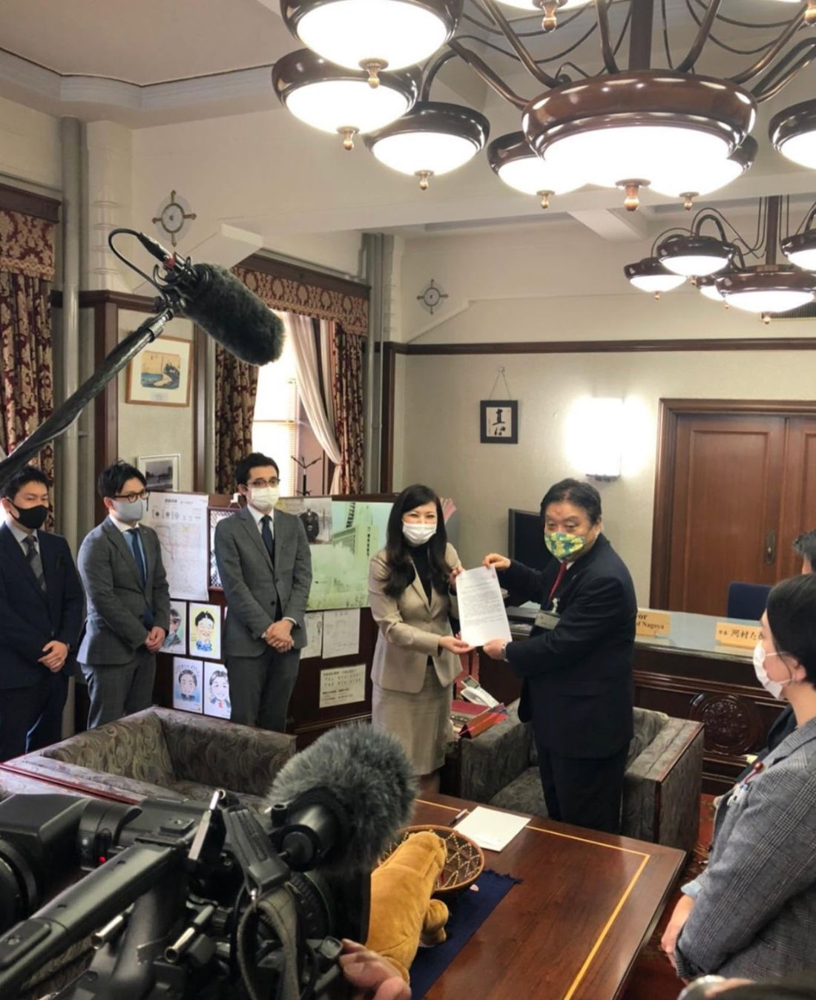
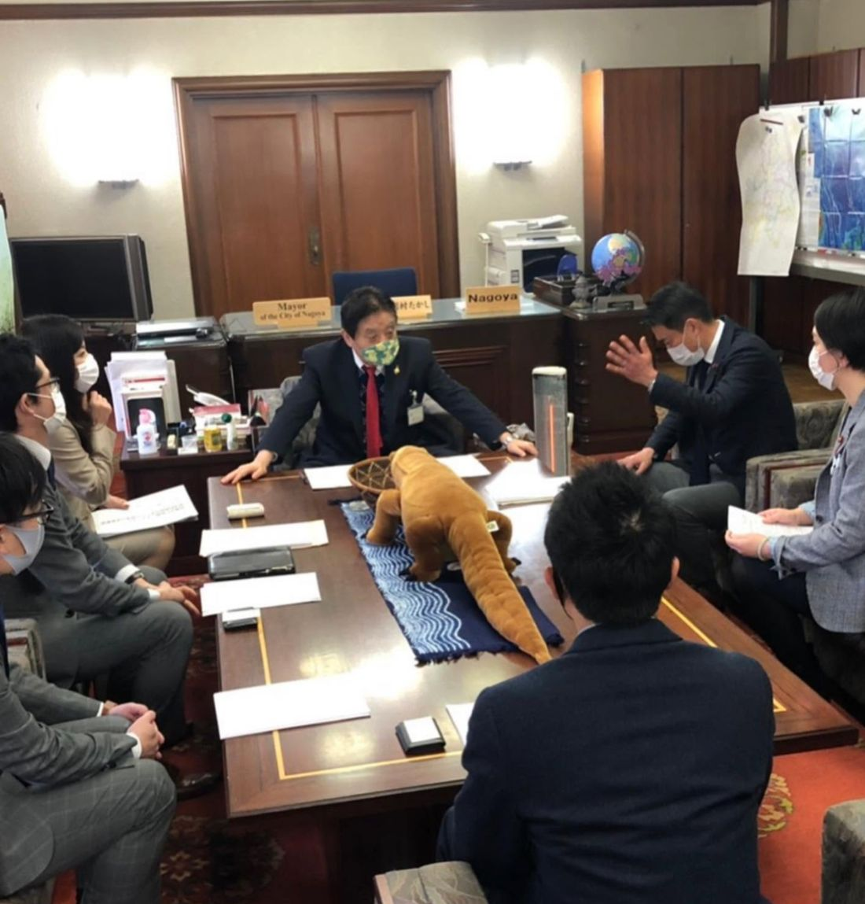
私たちが目の当たりにしてきたこと
新型コロナウイルス感染症の感染者が増えるたびに、新郎新婦は問い直すことになります。結婚式をすることは、大切な人たちに迷惑をかけてしまうのではないか。
ずっと楽しみにしていたウェディングドレス。大好きな人たちとの時間。それを望むことは、いけないことなの？——そんな悲しい想いを抱える新郎新婦を、私たちウェディングに携わる人間は目の当たりにしてきています。
延期には、費用がかかります。押さえ直した日程、作り直した招待状、預けたままの衣裳。決して安くない負担が、若いお二人の肩にのしかかります。しかもそれは、ご自身の落ち度によって生じたものではありません。
業界のためではなく、新郎新婦のために
数ヶ月後、一年後に結婚式を延期して楽しみにしている新郎新婦のために、踏ん張り続けるウェディング業界ですが——なんとか名古屋市からも、そんな新郎新婦に温かい支援が欲しい。
昨年、私たちは県に対して事業者への支援を求めました。今回の要望は、その先にあるものです。支援の届く先が、事業者ではなく新郎新婦ご本人であること。そこが、今回いちばんお伝えしたかった点でした。
河村市長からのお言葉
そんな私たち愛知ウェディング協議会からの話を、河村市長は本会議初日、時間の限られる中にも関わらず、予定の時間いっぱい耳を傾けてくださいました。そして、名古屋市として他市の取り組みなども鑑みつつ、しっかりと検討する、とお約束くださいました。
限られたお時間のなか、最後まで真剣に聞いていただけたこと。それだけでも、この問題が「聞くに値すること」だと受け止めていただけた証だと感じています。
まだ第一歩
まだまだ第一歩に過ぎません。要望が実際の制度になるまでには、いくつもの段階があります。それでも、届けなければ何も始まりません。
引き続き頑張って参ります。
3月25日 プランナー座談会
1月の定例会でお伝えしていた3月のイベントが決まりましたので、ご案内いたします。
変わってしまったけれど、結婚式は行われている
今までとは変わってしまったけれど、いろいろな工夫をしながら、沢山の結婚式が行われています。人数を絞り、演出を組み替え、距離を取りながら。制約のなかで作られたその一日にも、確かに感動は生まれていました。むしろ制約があったからこそ、忘れられない場面になったという式もあったはずです。
私たちが知っている「結婚式のパワー」や、やっぱり「結婚式っていいね」をみんなで共有し、更なるパワーに変えるために——今回は、会員のプランナーの皆様に集結いただき、座談会を開催することとなりました。
この機会に、企業を超えて、結婚式のパワーを集結させていきたいと思います。
座談会の内容
プランナーの皆様には、結婚式のエピソードをお話いただきます。
同じ状況を、それぞれの会場でどう乗り越えてきたのか。他社のプランナーの話をまとまって聞ける機会は、そう多くありません。持ち帰れるものが、きっとあるはずです。
こちらの内容は、後日愛知ウェディング協議会YouTubeチャンネルにてアーカイブをご覧いただけます。
開催概要
※ コロナの状況によっては、オンラインになる可能性がございます。
「話せるほどのエピソードなんて」と思われる方こそ、ぜひご参加ください。ご自身にとっては当たり前の一日が、他の誰かにとっては大きなヒントになります。
皆さまのご参加をお待ちしております。
3月14日、#結婚式でつながろう
会員各位、そして愛知県のプレ花＆卒花の皆さまへ。愛知ウェディング協議会は、この取り組みを応援します。
2021年3月14日。みんなで声をあげてみませんか？
なぜ、いま声をあげるのか
結婚式は、行われています。
感染対策を尽くし、工夫を重ねながら、この一年もたくさんの式が挙げられてきました。そこには確かに笑顔があり、涙があり、家族の時間がありました。
けれど、その事実は驚くほど知られていません。報じられるのは中止や延期の話ばかりで、「いま結婚式をしてもいいのだろうか」と迷っている方に届く情報は、ほとんどないのが現状です。
だからこそ、私たち自身が発信する必要があります。
企画概要
一つひとつの投稿は小さくても、同じ日に、同じタグで、いっせいに並べば景色が変わります。
参加方法
共通のハッシュタグで投稿してください（＊必須）。「#結婚式でつながろう」を付けて、Instagram・Twitterで発信。
当日もしくは過去の結婚式の模様や、事業者として考える結婚式の「意義（想い）」を発信
当日もしくは過去の結婚式の模様や、個人として考える結婚式の「意義（想い）」を発信
当日の結婚式の模様や、結婚式の「感想（想い）」を発信
結婚式当日に撮影した思い出の写真と、「いま思う意義（想い）」を発信
うまい言葉である必要はありません。写真一枚と、短い一言で十分です。いま迷っている誰かにとって、その一投稿が背中を押すものになるかもしれません。ぜひご参加ください。
4月21日 定期セミナー「企業文化のつくり方」
愛知ウェディング協議会 定期セミナーのご案内です。愛知を代表する企業、株式会社ブライド・トゥー・ビー 代表取締役 伊藤誠英様をゲストにお招きして、お話をお伺いいたします。
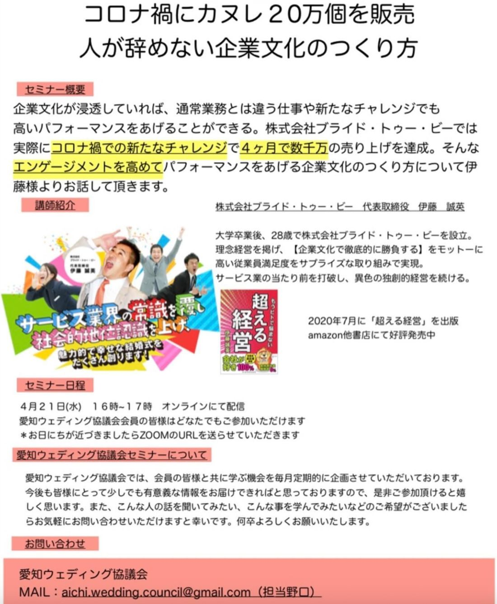
開催概要
※ お日にちが近づきましたらZOOMのURLをお送りいたします。
セミナー内容
企業文化が浸透していれば、通常業務とは違う仕事や新たなチャレンジでも、高いパフォーマンスをあげることができる。株式会社ブライド・トゥー・ビーでは、実際にコロナ禍での新たなチャレンジ——カヌレ20万個の販売——で、4ヶ月で数千万円の売り上げを達成されました。
そんな、エンゲージメントを高めてパフォーマンスを上げる企業文化の作り方について、伊藤様よりお話しいただきます。
なぜ、いま「企業文化」なのか
この一年、多くの会社が「これまでどおり」が通用しない場面に直面しました。新しい取り組みを始めようとしたとき、スムーズに動き出せる組織と、そうでない組織があります。その差を生むのは、制度でもマニュアルでもなく、日頃から積み上げてきた企業文化なのだと思います。
「うちのスタッフはなかなか動いてくれない」「新しいことを始めるたびに疲弊してしまう」——そんな課題をお持ちの経営者・マネージャーの方に、特に聞いていただきたい内容です。
ご参加について
こちらのセミナーは会員様限定イベントとなります。会員様には、追ってメールにて詳細をご連絡させていただきます。まだご入会でない方も、この機会にぜひご検討ください。ご入会に関するお問い合わせは、下記までお気軽にどうぞ。
【開催報告】プランナー座談会
本日は、愛知ウェディング協議会主催のプランナー座談会を開催しました。
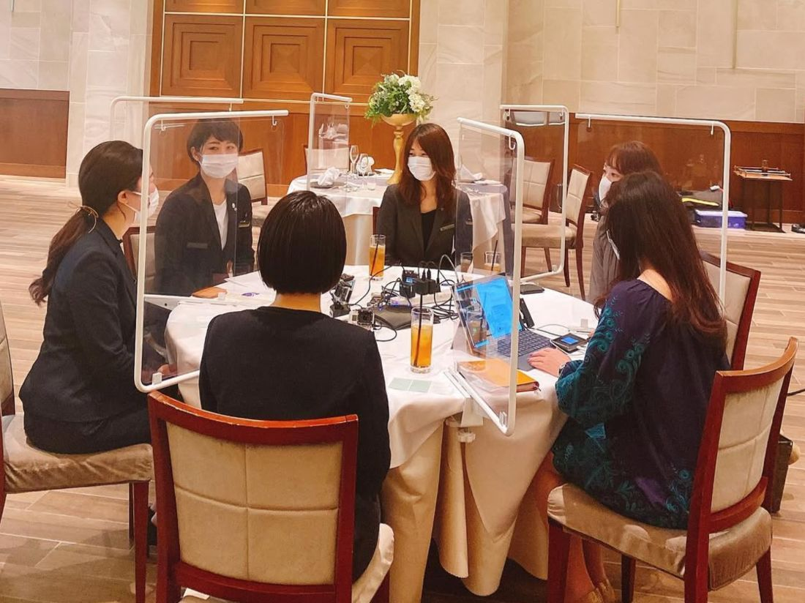
5社のプランナーが集結
5社のプランナーが集まり、それぞれの体験談をお話しいただきました。人数を絞った式で生まれた、思いがけない一体感。オンラインでご参列いただいたご親族との、画面越しのやり取り。何度も延期を重ねた末に迎えた当日。会場は違えど、この一年、それぞれの現場で似たような葛藤と工夫を重ねてきたことが、話すうちに見えてきました。
同じ話をしていても、会場が変われば選ぶ言葉も、大事にしているところも少しずつ違う。その違いこそが、いちばんの学びだったように思います。
「結婚式って本当にいいよね」
コロナ禍で、なかなか色々な方にお会いする機会が減ってしまっています。そんななかで、企業を超えて、ウェディングに関わるそれぞれが「結婚式って本当にいいよね」と実感する機会になりました。
そして同時に、これだけ結婚式を想う人たちが愛知県にはいる、ということが、私たちの自信にもなりました。普段は競合として並ぶ会社同士でも、根っこにある想いは同じです。それを確かめられたことが、この日の何よりの収穫でした。
御礼
ご参加頂きましたみなさま、ありがとうございます。そして、場所を提供くださったラソールガーデン名古屋様、ありがとうございました。
【開催報告】記念すべき第1回セミナーを開催しました
愛知ウェディング協議会のセミナーを、4月よりスタートしました。昨日（4月21日）は、記念すべき1回目です。ご参加いただきました皆様、ありがとうございます。

ゲストは伊藤誠英様
第1回目のゲストには、株式会社ブライド・トゥー・ビー 代表取締役 伊藤誠英様をお招きいたしました。伊藤様の取り組みや、今後のウェディング業界について、またコロナ禍でどうあるべきかなど、本当に貴重なお話しをお伺いさせていただくことができました。
自社の実践に裏づけられたお話は、抽象論とはまったく重みが違います。参加者からも、その場で自社に持ち帰れる具体的な気づきがあったという声をいただきました。
伊藤様、お忙しい中、貴重なお時間をありがとうございました。
中部経済新聞にも取り上げていただきました
本日の中部経済新聞にも取り上げていただきました。協議会の活動が、業界の外にも届いていることを実感しています。取材いただき、ありがとうございました。
アーカイブのご案内
会員様限定にはなりますが、後日ご覧いただくことも可能です！！ 当日ご都合がつかなかった方も、ぜひご覧ください。
その後は定例会も
セミナーの後は、定例会も行いました。まだまだ厳しい状況にあります。それでも、私たちにできることは確かにあります。ウェディング業界がひとつになって取り組んでいきたいと思います。
これからも定期的にセミナーを開催してまいります。次回のご案内もお楽しみに。
感染症の専門医に聞こう！ 感染症対策と結婚式について
シェア、拡散をお願いします！
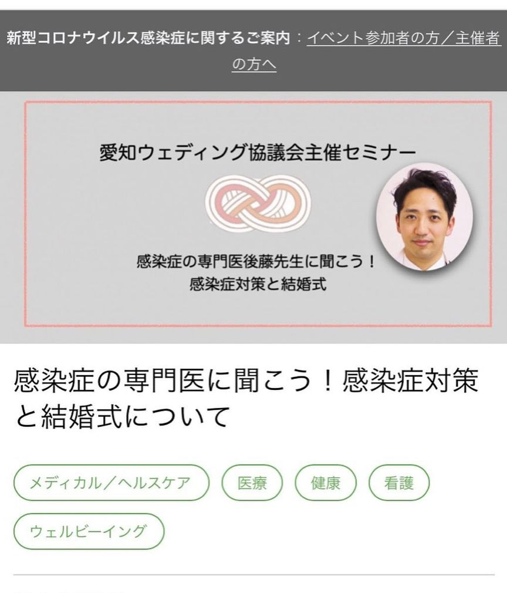
開催概要
「正解の出ない悩み」を、抱えていませんか
第4波が、世の中に影響を及ぼしています。結婚式を挙げたいと考えているお二人が、また正解の出ない悩みを抱えられるかと思うと、新郎新婦の近くで一緒にウェディングに関わらせていただく我々にとっても、辛い日々がまだまだ続きます。
ネットを調べれば調べるほど、正反対の意見が出てきて、かえって決められなくなる。そんな経験をされている方も多いのではないでしょうか。
だから、専門医に直接聞ける場を
結婚式を楽しみにしているお二人に、感染症の正しい知識を持っていただき、無用に恐れることなく、正しい判断ができるように。その想いで、今回のウェビナーを企画致しました。
私たちウェディング業界の人間がお伝えできることには、限りがあります。だからこそ、感染症を専門とされる医師から直接お話を伺える場をご用意しました。
答えを押しつけるための会ではありません。お二人が、ご自身で納得して決めるための材料をお持ち帰りいただく。それが、この1時間の目的です。
拡散のお願い
少しでも多くの、これから結婚式を迎えるお二人に、このウェビナーが届きますように…。いま悩んでいらっしゃるご友人、ご家族がいらしたら、ぜひこの情報をお伝えください。シェア、拡散をお願いいたします。
5月19日 定期セミナー「運命の15秒」を生き残れるか
愛知ウェディング協議会 定期セミナーのご案内です。「お客様をファンにするカウンセリング力」をテーマに、日本ウェディングヘアメイク協会 代表理事の赤星様よりお話しいただきます。
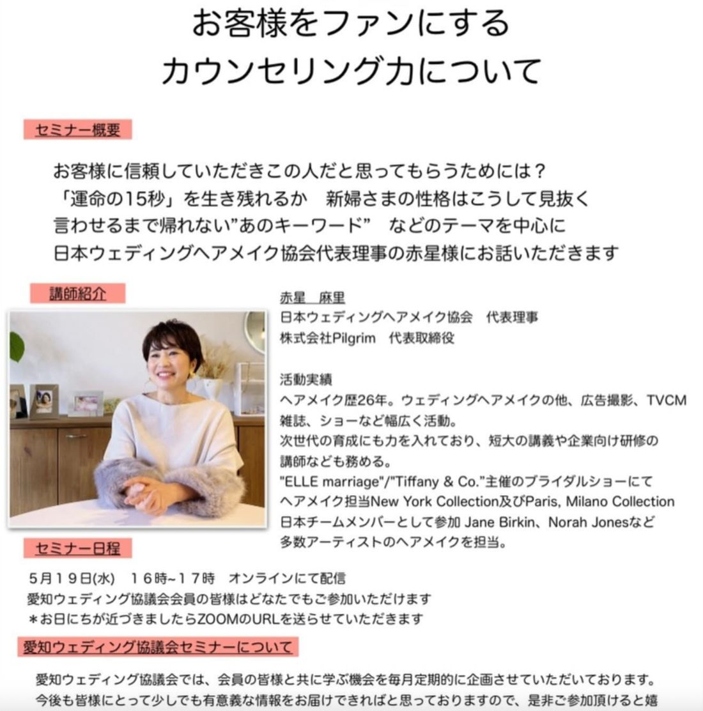
開催概要
※ お日にちが近づきましたらZOOMのURLをお送りいたします。
セミナー内容
お客様に信頼していただき、「この人だ」と思ってもらうためには？ 以下のようなテーマを中心にお話しいただきます。
初対面の15秒。そこで生まれた印象を、後から覆すのは容易ではありません。逆に言えば、その最初の一瞬を意識できているかどうかで、その後の関係の作りやすさはまったく変わります。
そして、目の前の新婦様がどんな方なのかを早い段階で掴めるかどうか。同じ提案をしても、届く方と届かない方がいるのは、そこに理由があります。
ヘアメイクという、新婦様といちばん近い距離で、いちばん無防備な時間をともに過ごす立場だからこそ見えてきたこと。プランナーの方にも、サービス、フォト、フローリストの方にも、そのまま持ち帰っていただける内容です。
ご参加について
こちらのセミナーは会員様限定イベントとなります。会員様にはメールをお送りしておりますので、ご確認ください。また、参加される方は、参考のためにアンケート（メールにてご案内）にご協力いただけますと幸いです。事前にお答えいただくことで、当日のお話がより皆さまの課題に沿ったものになります。
まだご入会でない方も、この機会にぜひご検討ください。ご入会に関するお問い合わせは、下記までお気軽にどうぞ。
Withコロナ時代のウェディングで、目に見えない価値を上げる
愛知ウェディング協議会 定期セミナーのご案内です。今回のテーマは「少人数婚、親族婚、ノンアルコール」——変わってしまった結婚式のかたちのなかで、目に見えない価値をどう上げるか。

開催概要
※ お日にちが近づきましたらZOOMのURLをお送りいたします。
セミナー概要
Withコロナになり、1年以上。ウェディングは毎週行われていますが、そのスタイルは様変わりしました。友達やお世話になった方をお招きできなくなり、思い描いていた披露宴と違うものになる事も、少なくありません。
その光景は、当初とは違うかもしれない。しかし、決して楽しみにしていたものが欠けてしまったものではない。
今だからこそ感じられる結婚式の価値を業界全体で共有することが、これからの新郎新婦様にとって希望になる——。
講師紹介
ブライダルをはじめイベント、ラジオ、式典司会者として活躍。ナレーター、声優も勤める。日英バイリンガルMC。自治体研修、企業研修講師として人材育成に関わる中で、司会者のための学びの場を作りたいと思うようになり、全国の司会者の学びの場：ブライダルMCの学び場「カタリバ」を主宰。オンラインで今の時代に即した司会者のためのすぐに役立つセミナーを開催。
「価値のある結婚式は、人生を豊かに＋幸せにしてくれる」結婚式司会者として、約2,000組もの結婚式の司会を務める。独自の「聴く」に特化したカウンセリング力は、お客様はもちろん数々の業界人からも認められ、多くの指名を頂いている想いの強い司会者として活躍。
規模や演出の華やかさといった「目に見えるもの」で語れない時代に、私たちは何をもって結婚式の価値をお伝えするのか。言葉で場をつくるMCのお二人だからこその視点が、きっとあります。ご列席の人数が減っても、演出が簡素になっても、その一日がもつ意味は少しも減っていない。それをお客様にお伝えするための言葉として、持ち帰れる時間になるはずです。
ご参加について
こちらのセミナーは会員様限定イベントとなります。会員様にはメールをお送りしておりますので、ご確認ください。また、参加される方は、参考のためにアンケートにご協力いただけますと幸いです。
愛知ウェディング協議会では、会員の皆様と共に学ぶ機会を毎月定期的に企画させていただいております。今後も皆様にとって少しでも有意義な情報をお届けできればと思っておりますので、是非ご参加いただけると嬉しいです。まだご入会でない方も、この機会にぜひご検討ください。
AWCカンファレンス2021「今こそ考えるべきウェディング業界のSDGsへの取り組み方とは」
リアルはもう少し我慢して、それでも有意義な時間を
愛知ウェディング協議会は、設立より早いもので、1年6か月経とうとしています。「コロナ禍」と言えば、何かと言い訳になってしまう世の中ですが——それでも、我々の業界にとっては、日々考え、動いていかないと継続の危機に陥る毎日が続いています。
リアルで皆様とお会いすることは、もう少し我慢しなければいけません。それでも何か、皆さまと有意義な時間を過ごせたらと、以下のオンラインイベントを企画致しました。

開催概要
※ お日にちが近づきましたらZOOMのURLをお送りいたします。
第1部｜セミナー「SDGsとは ＠ウェディング業界」
SDGsという言葉は知っているものの、実際はどういうものなのかが知りたい。何から手をつけていいかわからない。今回はそのようなSDGsの基本から、ウェディング業界に近い業界の事例まで、分かりやすく信澤様よりお話いただきます。
いまや、これからの経済活動において、SDGsは確実に必要かつ必須の取り組みです。言葉としては誰もが知るようになりましたが、「では、自社のウェディングの現場で何をすればいいのか」となると、途端に難しくなります。第1部では、この「SDGs」という取り組みを正しく、また実際に運用できるよう、見識を深めていきます。
「経験・知見が循環する社会の創造」をビジョンにプロシェアリング事業を展開するサーキュレーションの創業に参画。成長ベンチャー企業に特化した経営基盤構築、採用人事・広報体制の構築、新規事業創出を担うコンサルタントを経て、人事部の立ち上げ、経済産業省委託事業の立ち上げに従事。社会や経営の実態を知る中で、根本的な社会／経済システム及び価値観の変革に向けた取り組みを強化すべく、SDGs推進やセクターを超えた共創による社会課題解決を目指し、2019年ソーシャルデベロップメント推進室を設立。企業のSDGs推進支援、自治体・ソーシャルセクターとのコレクティブインパクトを目的としたプロジェクト企画〜運営の実績多数。
参加費：会員 無料／非会員 1,000円
第2部｜オンライン分科会（6つのBREAKROOM）
6つの部屋（BREAKROOM）に分かれて、分科会を開きます。第2部では、皆さまと今後についての前向きな議論を交わしたいと思っております。少人数の部屋に分かれることで、大人数のセミナーでは言いにくかった本音も、話しやすくなるはずです。ぜひこの機会に、皆さまと意見交換をしたいと考えています。
参加費：会員・非会員ともに 無料
お申し込み
ご参加ご希望の方は、Googleフォームよりお申し込みください。なお、第2部の分科会の詳細についても、Googleフォームにてご確認いただけます。ご希望に添えない場合はご了承ください。詳細は会員の皆さまへメールにてご案内しております。
また、こんな人の話を聞いてみたい、こんな事を学んでみたいなどのご希望がございましたら、お気軽にお問い合わせいただけますと幸いです。
ひとりでも多くの方にお越しいただき、オンラインでお目にかかれますこと、理事一同楽しみにしております。
AWC フォトコン2021
愛知ウェディング協議会に加盟いただいている専門学校（現在、名古屋市内6校）の学生さんたちによる「フォトコン_2021」を開催します。
学生の「今」を、写真で
カレッジ部会の取り組みの一つとして、学生の皆さんが主役になる企画を用意しました。
日々の学校生活の一コマ、実習で撮ったブライダルフォト、憧れや将来の自分を思い描いた一枚——。学生のうちにしか撮れない写真が、きっとたくさんあるはずです。ぜひ、あなたのレンズが捉えた「今」を寄せてください。
受賞カテゴリー
グッドスマイル、ベストフレンド、学校自慢、ハプニング などなど
洋装、和装、模擬、インターン先、憧れや目標、将来の自分 など
賞：スクールLIFE編より3つ／ブライダルフォト編より2つ
審査の流れ
SNSプレ選考（2021年11月中旬より開始）
みんなの「いいね！」が、審査の後押しになります！
協議会SNS（Facebook・Instagram）へ、最終選考の5枚をカテゴリーごとに公開します。期日中（11月後半〜12月前半）、4日ごとに5カテゴリーのSNS公開を行います。みんなのリアクションで、仲間の写真を応援しましょう！（※SNS公開投票が、評価の全てではありません。）
最終選考
愛知ウェディング協議会 理事＆会員により、5カテゴリーそれぞれに最優秀賞・優秀賞 各1枚ずつ、合計10枚の受賞を決定します。
応募資格
発表
2021年12月開催予定の、愛知ウェディング協議会 総会にて発表します。
注意事項
投稿いただいた写真は、入賞の有無に関わらず、公式ホームページ・公式インスタグラム・活動報告などに使用させていただくことがあります。
学生の皆さんの、のびのびとした一枚をお待ちしています。先生方も、ぜひ生徒さんへのお声がけをお願いいたします。
ウェディング業界における今後の新たな働き方と学び方について
愛知ウェディング協議会 定期セミナーのご案内です。株式会社TIPLOG 代表取締役 高津守様をゲストにお招きします。
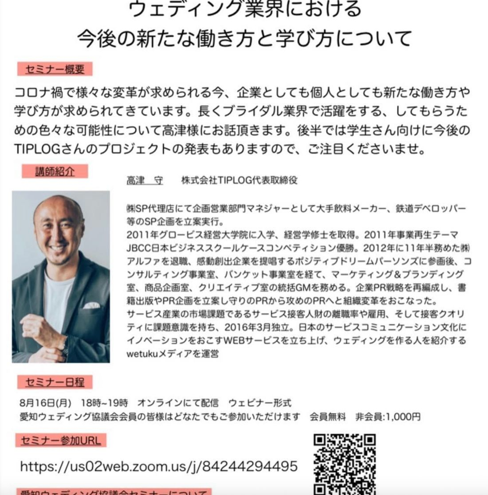
開催概要
セミナー内容
コロナ禍で様々な変革が求められる今、企業としても個人としても、新たな働き方や学び方が求められてきています。長くブライダル業界で活躍をする、してもらうための色々な可能性について、高津様にお話しいただきます。
この一年半で、「これまで通り」が通用しない場面を、誰もが経験しました。会社としてスタッフにどう長く輝いてもらうか。個人としてこの業界でどうキャリアを重ねていくか。その両方の視点から、これからの可能性を考える時間になればと思います。
講師紹介
SP代理店にて企画営業部門マネジャーとして大手飲料メーカー、鉄道デベロッパー等のSP企画を立案実行。2011年グロービス経営大学院に入学、経営学修士を取得。2011年事業再生テーマJBCC日本ビジネススクールケースコンペティション優勝。2012年に11年半務めた（株）アルファを退職、感動創出企業を提唱するポジティブドリームパーソンズに参画後、コンサルティング事業室、バンケット事業室を経て、マーケティング＆ブランディング室、商品企画室、クリエイティブ室の統括GMを務める。企業PR戦略を再編成し、書籍出版やPR企画を立案し守りのPRから攻めのPRへと組織変革をおこなった。サービス産業の市場課題であるサービス接客人財の離職率や雇用、そして接客クオリティに課題意識を持ち、2016年3月独立。日本のサービスコミュニケーション文化にイノベーションをおこすWEBサービスを立ち上げ、ウェディングを作る人を紹介するwetukuメディアを運営。
学生さん向けの発表も
後半では、学生さん向けに、今後のTIPLOGさんのプロジェクトの発表もあります。これから業界を目指す学生の皆さんにとっても、ヒントの多い内容になりそうです。ぜひご注目くださいませ。
ご参加について
愛知ウェディング協議会 会員の皆様はどなたでもご参加いただけます。会員様にはメールをお送りしておりますので、ご確認ください。まだご入会でない方も、この機会にぜひご検討ください。
【開催報告】カンファレンスセミナー2021
2021年7月28日（水）に開催されました、愛知ウェディング協議会 カンファレンスセミナー2021 のご報告です。

画面越しに集まった参加者の皆さま。
第1部｜SDGsを、基本から
株式会社サーキュレーション ソーシャルデベロップメント推進室の信澤みなみ様を講師にお招きし、SDGsの基本から、ウェディング業界に近い業界の事例まで、幅広くお話しいただきました。
「言葉は知っているけれど、何から手をつければいいのか分からない」——そう感じていた方も多かったのではないでしょうか。基本の考え方から、近い業界の具体的な取り組みまで一続きで伺えたことで、自社の現場に引き寄せて考えるための足がかりができました。
第2部｜分科会での意見交換
第2部では、なかなかリアルでお会いできない皆様との意見交換も含め、分科会を実施しました。
画面越しではありますが、少人数の部屋に分かれて話すことで、久しぶりに「業界の仲間と語り合う」感覚が戻ってきました。とても有意義な時間となりました。ご参加いただきました皆様、ありがとうございました。
これからも
まだまだ厳しい状況は続いております。それでも引き続き、愛知ウェディング協議会として、業界の成長のために様々な取り組みをしていければと考えております。
そして、8月のセミナーも予定しております。ぜひご参加ください。
「ウェディングドレスショー2021」に審査員として参加しました
名古屋ブライダルビューティー専門学校の「ウェディングドレスショー2021」に、審査員としてご招待いただきました。
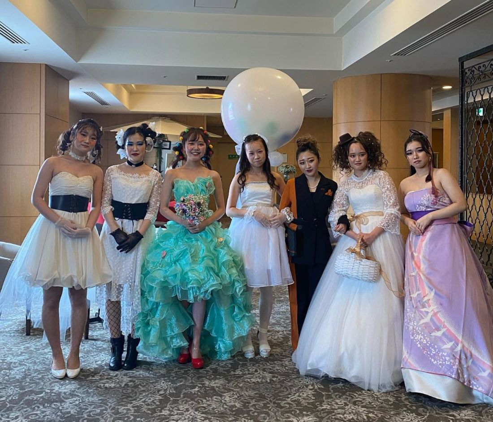
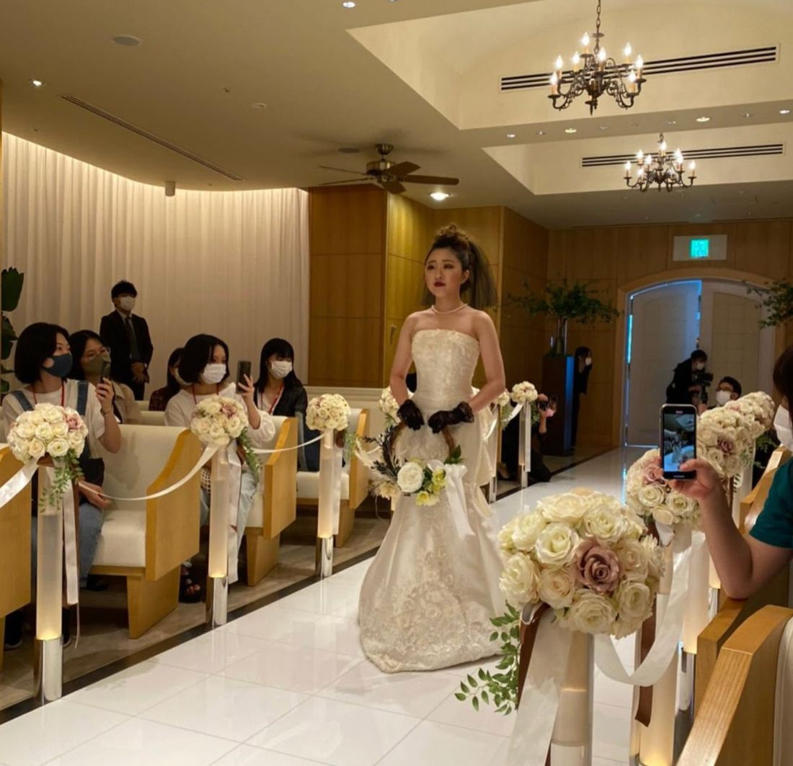
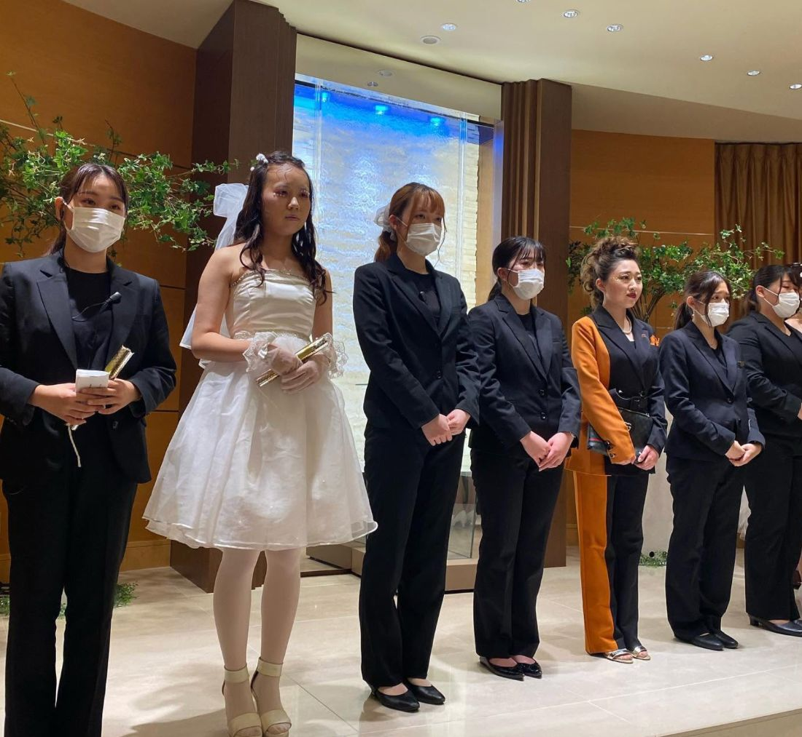
テーマは「31アイスクリーム」
今回のショーのテーマは「31アイスクリーム」。各種フレーバーをイメージしたコーディネート・ヘアメイクをされたモデルさんが、次々と登場しました。
甘く華やかなフレーバーもあれば、爽やかで軽やかなフレーバーもある。それを色づかいや質感、ヘアのシルエットでどう表現するか——。どのスタイルも、テーマに合わせて試行錯誤されたものばかりで、見ているこちらまで楽しませていただきました。
「このフレーバーをこう解釈したのか」という驚きが一体ごとにあり、審査という立場を忘れて見入ってしまう場面もありました。
当日までの、見えない時間
きっと当日を迎えるまでに、いろんなことがあったと思います。イメージが決まらず悩んだ夜も、思うようにいかず作り直した時間も、あったはずです。けれど、その一つひとつが、今日ステージの上で形になっていました。
この経験は、この先必ずいきてきます。うまくいったことも、うまくいかなかったことも、すべてが糧になります。それは、この業界で長く仕事をしてきた私たちが、自信をもってお伝えできることです。
またお会いできる日を
素敵なショーにお招きいただき、ありがとうございました。
みなさまとこの先また、ウェディング業界でお会いできますこと、楽しみにしております。
8月定期セミナーのアーカイブをYouTubeで公開しました
愛知ウェディング協議会主催の定例セミナーのアーカイブが、YouTubeにアップされました。
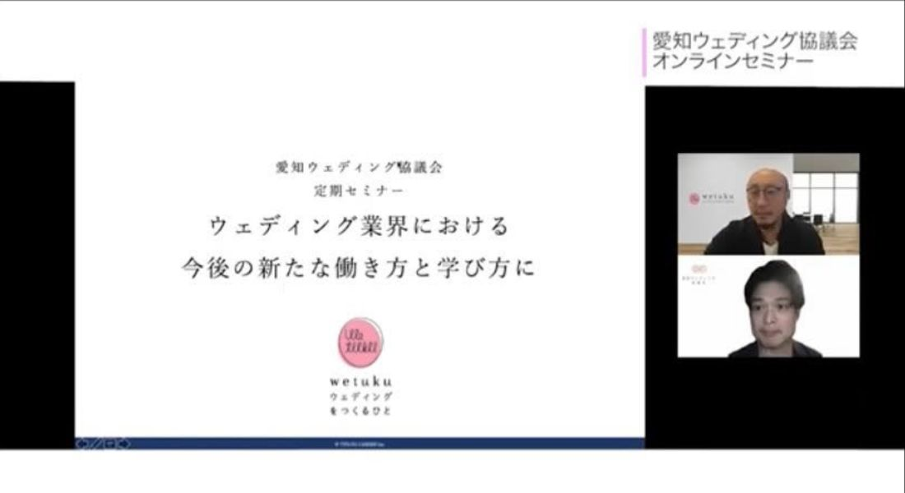
高津様をお招きしたオンラインセミナー
今回は、株式会社TIPLOG 代表取締役の高津守様をお招きしてのオンラインセミナーです。コロナ禍で求められる新しい働き方・学び方、そしてブライダル業界で長く活躍するための可能性について、お話しいただきました。後半では、学生さん向けのプロジェクト発表もありました。
リアルで見れなかったという方は、ぜひご覧ください♪
事業者の方にも、学生の方にも
今回も、ウェディング事業に関わるみなさまや、学生の方々にも、ぜひご覧いただきたい内容となっております。働き方に悩む方、これからのキャリアを考えている方、そしてこれから業界を目指す学生の方——それぞれの立場で、持ち帰れるヒントがあるはずです。
チャンネルには過去のセミナーアーカイブも公開しております。あわせてご覧いただけますと幸いです。
お客様も自分もハッピーになる仕事との向き合い方
愛知ウェディング協議会 定期セミナー。9月度は、今話題のドレススタイリスト YUKOさんこと鈴木ゆう子さんをお招きしてお届けしてまいります！
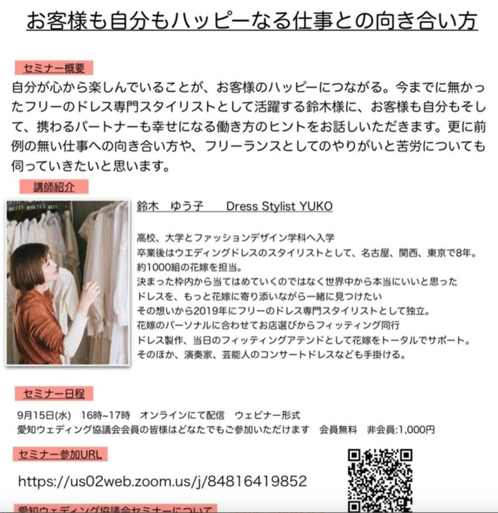
開催概要
セミナー概要
自分が心から楽しんでいることが、お客様のハッピーにつながる。
今までに無かった、フリーのドレス専門スタイリストとして活躍する鈴木様に、お客様も自分も、そして携わるパートナーも幸せになる働き方のヒントをお話しいただきます。さらに、前例の無い仕事への向き合い方や、フリーランスとしてのやりがいと苦労についても伺っていきたいと思います。
高校、大学とファッションデザイン学科へ入学。卒業後はウエディングドレスのスタイリストとして、名古屋、関西、東京で8年。約1000組の花嫁を担当。決まった枠内から当てはめていくのではなく、世界中から本当にいいと思ったドレスを、もっと花嫁に寄り添いながら一緒に見つけたい——その想いから2019年にフリーのドレス専門スタイリストとして独立。花嫁のパーソナルに合わせてお店選びからフィッティング同行、ドレス製作、当日のフィッティングアテンドとして花嫁をトータルでサポート。そのほか、演奏家、芸能人のコンサートドレスなども手掛ける。
Instagram：@dress.stylist.yuko →「前例がない」を、仕事にする
「フリーのドレス専門スタイリスト」という肩書きは、これまで存在しませんでした。決まった型のない道を選ぶということは、自由であると同時に、すべてを自分で切り拓かなければならないということでもあります。その道をどう歩み、どうやりがいに変えてこられたのか。いまフリーランスとして踏ん張っている方、これから独立を考えている方にとって、生きたヒントになるはずです。
そして何より、鈴木様に一貫しているのは「自分が楽しむこと」を起点にされている点です。自分が楽しむことが、なぜお客様の幸せに、そして一緒に働くパートナーの幸せにまでつながっていくのか——その考え方は、立場を問わず持ち帰っていただけると思います。
こんな方に聞いていただきたい
プランナーのみなさまはもちろんのこと、ドレスコーディネイターやヘアメイク、カメラマン、そしてこれからウェディング業界を目指すみなさま。ぜひこの機会に聞いていただきたい内容です。お楽しみに。
お申し込み
お申し込みは、案内画像のQRコードを読み込んでいただき、詳細の入力をお願いいたします。後日、URLをお送りさせていただきます。聞いてみたいことなどございましたら、ぜひお気軽にお問い合わせください。
HAKU 柴田奈々子さんをお迎えします
10/20（水）20:00-
東京の人気プロデュース会社HAKUの柴田奈々子さんをお迎えして、インスタライブを行います！！
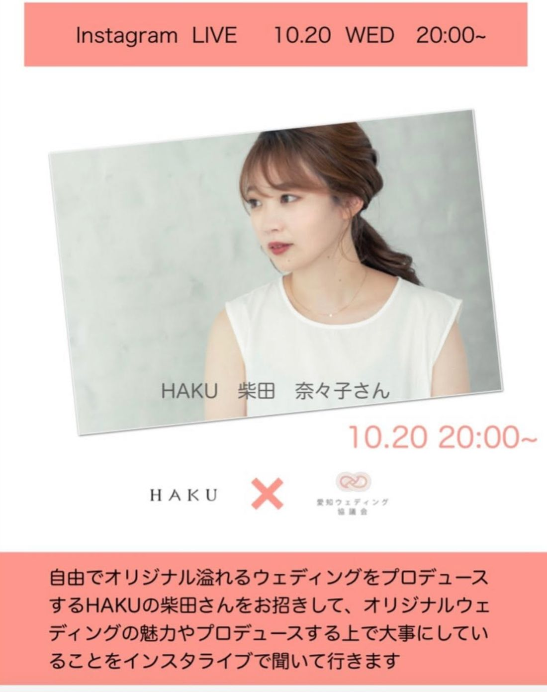
オリジナルウェディングの、その先へ
自由でオリジナル溢れるウェディングを作っていらっしゃる柴田さん。お二人らしさを起点に、型にはまらない一日をかたちにしていく——言葉にすればシンプルですが、それを毎回、実際の式として成立させるのは容易ではありません。「自由」を、ただの思いつきで終わらせず、ちゃんと感動につなげるための考え方が、そこにはあるはずです。
今回は、そんな柴田さんに、以下のことをお伺いします！！
決まった形をなぞるのではなく、目の前のお二人からつくり上げていく。そのプロセスで柴田さんが何を見て、何を大切にされているのか。明日からの現場に持ち帰れるヒントが、たくさん詰まった時間になりそうです。
こんな方に
ウェディングプランナーはもちろん、ウェディングに関わる全ての方に聞いていただきたい内容です！！ ぜひご覧ください。
ご視聴方法
「愛知ウェディング協議会」で検索、またはInstagramアカウント【aichi_wedding.council】をご覧ください。アカウントをフォローいただくと、ライブ開始時に通知が届きます。ご質問は、DMやコメントで事前にもお寄せいただけます。
ブライダル週間発表会に参加しました
名古屋外語・ホテル・ブライダル専門学校様のブライダル週間発表会にお招きいただきました。

発表会を終えて。学生の皆さんと。
『愛知ウェディング協議会賞』を授与しました
発表会では、『愛知ウェディング協議会賞』を授与させていただきました。そして、学生たちのひたむきな結婚式への想いを、しっかりと拝見しました。
技術や完成度はもちろんですが、それ以上に伝わってきたのは、「誰かの一日を大切にしたい」というまっすぐな気持ちです。まだ現場に立つ前の彼らが、すでにその想いを持っていること。それは、この業界にとって何より心強いことだと感じました。
私たちも、身を引き締めて
彼らがまっすぐ、そして大人としても成長できるウェディング業界であるために——我々も身を引き締めていかねば、と思った次第です。
学生を迎え入れる側の私たちが、彼らの想いに恥じない業界をつくっていく責任があります。「この業界を選んでよかった」と思ってもらえるように。その環境を整えることもまた、協議会の大切な役割だと、あらためて胸に刻みました。
素晴らしい機会をいただき、名古屋外語・ホテル・ブライダル専門学校の皆様、ありがとうございました。
愛知ウェディング協議会 カレッジ部会では、学校との連携・学生の参画を通じて、業界の未来を担う人材とともに歩んでいく取り組みを進めています。
12月9日、今期最終イベントを対面で
一般社団法人 愛知ウェディング協議会 リアルカンファレンス_2021 を開催します！

今期最終は、リアルで
今年度は7月にオンラインにてカンファレンスを開催させていただきましたが、なかなか皆さまとリアルにお会いさせていただく機会がありませんでした。情勢も変わりつつある中、今期最終にして、リアルイベントを開催することとなりました。
12月のカンファレンスでは皆様にお集まりいただき、お話出来ることを理事一同楽しみにしております。今年度の活動報告なども行わせていただければと思います。画面越しではなく、同じ空間で顔を合わせる。この一年、当たり前ではなくなっていたその時間を、今期の締めくくりにお届けします。
開催概要
第一部 カンファレンス 15:00〜17:00／第二部 親睦会 17:30〜19:30
〒460-0023 名古屋市中区金山町一丁目1番1号
第二部（親睦会）について
第二部はご希望者の方のみとなりますが、感染症対策を実施した上でお料理をご用意して、親睦会の開催を予定しております。
ご参加に関しましては、大変勝手ながらコロナワクチン接種済、もしくは陰性証明を必須とさせていただきます。
※ コロナ感染状況によっては急遽中止とさせていただく場合がございます。
非会員の皆さまも、ぜひ
第一部は無料です。愛知のウェディング業界でご活躍の非会員の皆さまとも、交流の場を設けたく思っております。「協議会がどんな活動をしているのか、一度見てみたい」という方も、どうぞお気軽にご参加ください。ご参加申込をお待ちしております！！
みなさまにお会いできますこと、楽しみにしております。
感染対策へのご協力のお願い
なお、ご入館に際しては、新型コロナウイルスの感染拡大予防の観点から、マスクの着用や、入館時の検温と手指の消毒へのご協力をお願いします。
ニューノーマルの当たり前を、正しく確実に…。私たちウェディング業界は、この一年半、感染対策と向き合い続けてきました。その学びを、自分たちのイベントでもしっかり実践してまいります。
ドレスショップ ラ・ヴォーガ様 学生訪問
カレッジ部会の11月の活動をご報告します。今回は、ドレスショップ ラ・ヴォーガ様への学生訪問です。
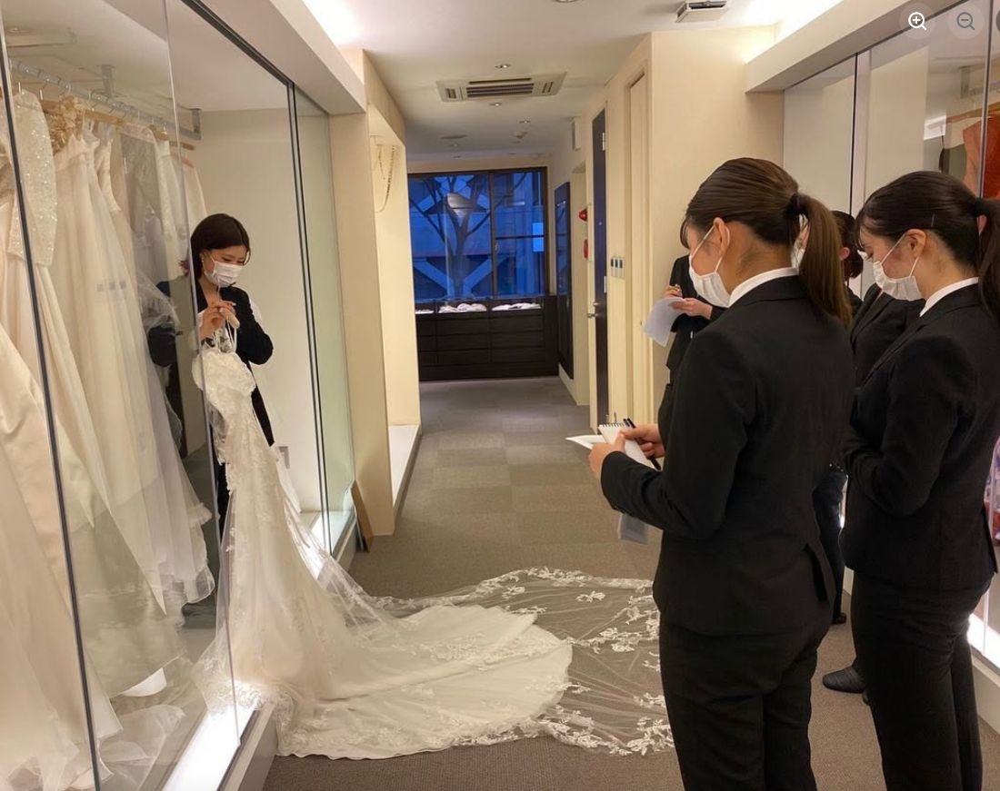
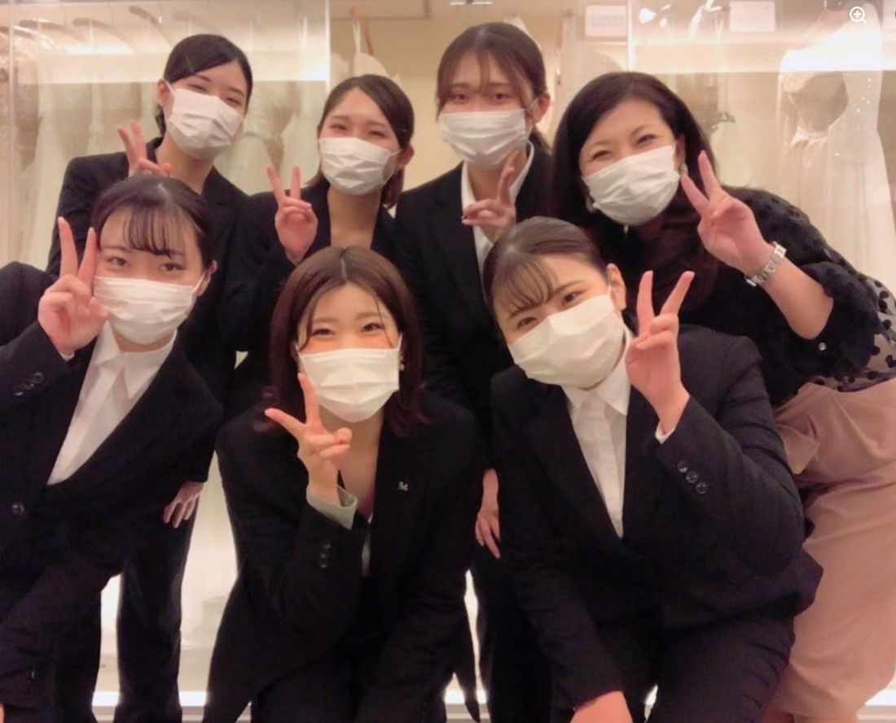
「職場に触れるチャンスがない」という声から
「コロナ禍で、学生たちが満足にドレスショップという職場に触れるチャンスが無い」
そんな声を聞いたことが、この企画の出発点でした。例年であれば、見学や実習を通じて現場の空気に触れられたはずの機会が、この状況下では大きく減ってしまっています。就職活動を控えた学生にとって、「働く場所を実際に見られない」というのは、想像以上に不安なことです。
学生さんたちの見学会を開催したい！——そう声を上げてくれたのが、ラ・ヴォーガ様の入社一年目のスタッフ・田中さんでした。この企画は、田中さんの一言から実現したものです。
5人の1年生が参加
これから就職活動が本格化する一年生たちに向けて、カレッジ部会 加入校より募集し、自主的に手を挙げた5人が参加しました。
とても近い世代の先輩から聞く、会社への、そして仕事への熱い気持ち。さらには本音や失敗談。教科書やパンフレットからは決して得られないその言葉に、学生たちはパワーと勇気とヒントをもらったことと思います。
数年後の自分を、すぐ目の前にいる先輩に重ねられる。年齢の近い先輩の存在は、それだけで大きな道しるべになります。
伝える側の学びにも
そしてこの企画は、学生だけのものではありません。誰かに想いを伝えることは、田中さんご自身にとっても、大きな学びになったことと思います。
まだ入社一年目でありながら、後輩たちのために場をつくり、自分の言葉で仕事を語る。その経験は、これからの田中さんを確かに支えていくはずです。
会員企業の皆さまへ
今後も、会員企業のスタッフ様への機会創出の一つとして、様々な法人会員様から学生たちへの企画をいただけましたら幸いです！「うちの会社でも何かできるかも」と思われた方は、ぜひ協議会までお声がけください。若手スタッフの成長の場としても、きっと意味のある取り組みになります。
ラ・ヴォーガ様、そして田中さん、素敵な機会をありがとうございました。
愛知ウェディング協議会 カレッジ部会では、学校との連携・学生の参画を通じて、業界の未来を担う人材とともに歩んでいく取り組みを進めています。
名古屋大原学園「ホテルS1グランプリ」に審査委員長として参加しました
カレッジ部会の11月報告、第2弾です。今回は、名古屋大原学園で開催された「ホテルS1グランプリ」。当協議会の代表理事が、審査委員長としてご招待いただきました。


張り詰めた緊張感の中で
日常の授業とは違う、張り詰めた緊張感。会場に足を踏み入れた瞬間から、いつもの実習とは空気がまるで違ったそうです。「審査される」という舞台に立つことは、それだけで学生を一段成長させます。
今回競われたのは、次の3部門です。
それぞれの部門で、学生たちが日頃学び、身につけた技術を競いました。
最終審査に進んだ学生の皆さんへ
最終審査に進んだ学生の皆さんには、きっと忘れられない経験と、自信となったことでしょう。
大勢の視線の前で、練習してきたことを出しきる。うまくいっても、思うようにいかなくても、あの舞台に立ったという事実は、これから現場に出たときに必ず支えになります。
見守る側にも、伝わるもの
そして、その姿を真剣な眼差しで見守るクラスメイトや高校生にも、何か感じるものがあったと思います。
先輩たちの本気を間近で見ることは、それ自体が学びです。「自分もあの舞台に立ちたい」「あんなふうになりたい」——そんな気持ちの芽が、見ている側にも生まれたのではないでしょうか。
おめでとうございます
各部門のグランプリに輝かれた皆さん。本当におめでとうございます！
そして、惜しくも入賞に届かなかった皆さんも、この日に向けて重ねてきた努力は、決して無駄になりません。ステージに立ったすべての学生さんに、心から拍手を送ります。
愛知ウェディング協議会 カレッジ部会では、学校との連携・学生の参画を通じて、業界の未来を担う人材とともに歩んでいく取り組みを進めています。
結婚式の映像の魅力と可能性
11/25（木）20:00-
愛知ウェディング協議会 理事の石野浩一（株式会社ムーブ）が、結婚式の映像の魅力、そしてその可能性について、インスタライブでお話しさせていただきます。
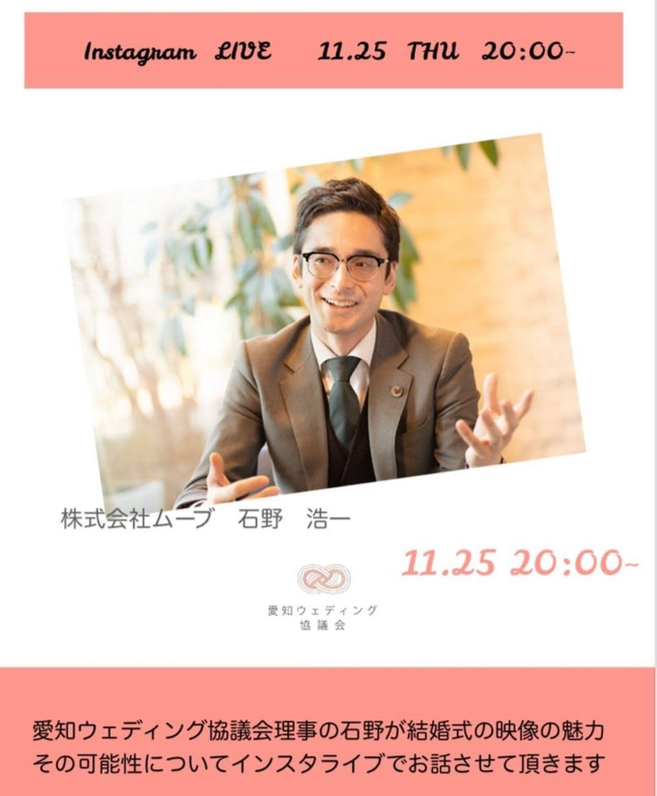
「映像」が結婚式にもたらすもの
結婚式における映像は、いまや欠かせない存在になりました。オープニングムービー、プロフィールムービー、エンドロール。当日を彩るだけでなく、式が終わったあとも、お二人とご家族の手元に残り続けます。その日の感動を、何年経っても呼び起こせる——映像には、そんな力があります。
さらに、リモート参列やオンライン配信が広がったこの一、二年で、映像の役割はいっそう大きくなりました。その場にいられなかった人へ想いを届ける手段として、映像の可能性はますます広がっています。
今回は、そんな結婚式の映像の魅力と、これからの可能性について、石野が語ります。
こんな方に
ウェディングに関わる全ての方に、聞いていただきたい内容です！！ 映像制作に携わる方はもちろん、プランナー、フォト、サービス——お客様に「かたちに残るもの」をお届けするすべての立場の方にとって、ヒントのある時間になるはずです。
ぜひみなさま、ご予定を空けておいてください！
ご視聴方法
「愛知ウェディング協議会」で検索、またはInstagramアカウント【aichi_wedding.council】をご覧ください。アカウントをフォローいただくと、ライブ開始時に通知が届きます。質問やご意見もお待ちしております！！ DMやコメントで、事前にもお気軽にお寄せください。
「チェンジウェディング」代表 タケウチミサトさん
2022年、愛知ウェディング協議会では、今まで以上に様々なイベントを企画していきたいと考えております。その2022年 第一弾が、こちらです。

開催概要
Instagram：@happy_wd_misa →
Z世代から見た、結婚式
業界唯一の、ウェディングを志す学生コミュニティ「チェンジウェディング」代表であり、フリーランスプランナーでもあるタケウチミサトさんをお招きします。Z世代から見た結婚式や、今後の目標などについて聞いてみたいと思います。
いま業界にいる私たちにとって、次の世代が結婚式をどう見ているのかは、とても気になるところです。「結婚式離れ」とも言われる若い世代。けれど、その世代の中から、あえてウェディングを志す学生を束ねるコミュニティを立ち上げた方がいる——。その事実そのものに、これからのヒントが詰まっている気がします。
同世代に近い視点で、これからの結婚式に何を求め、何を変えたいと考えているのか。ご自身がなぜこの道を選んだのかも含めて、じっくり伺ってみたいと思います。
学生の皆さんにも
学生のみなさまにも、ぜひご覧いただきたい内容です。自分と近い世代で、すでに行動を起こしている先輩の姿は、きっと刺激になります。ぜひこの機会にご覧ください！！
ご視聴方法
「愛知ウェディング協議会」で検索、またはInstagramアカウント【aichi_wedding.council】をご覧ください。アカウントをフォローいただくと、ライブ開始時に通知が届きます。ご質問は、DMやコメントで事前にもお寄せいただけます。
2022年初の定例理事ミーティングを行いました
2022年、初の定例理事ミーティングを行いました！！
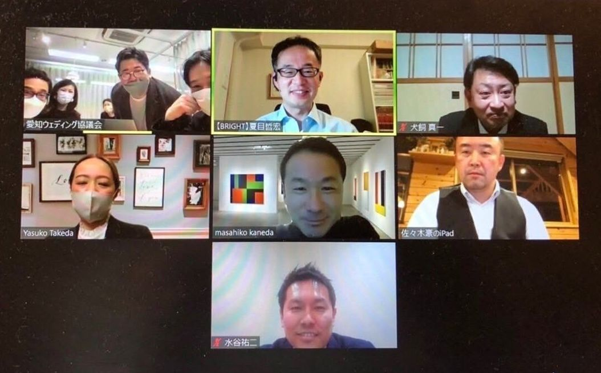
山形ウェディング協議会の皆さまが、オブザーバーに
今回は、山形ウェディング協議会のみなさま、そしてNOVIC 代表取締役の金田さんにも、オブザーバーとしてご参加いただきました。エリアを越えて、他地域の協議会の皆さまと同じテーブルを囲む。これは、私たちにとって大変貴重な機会でした。
同じ「ウェディング協議会」でも、地域が違えば見ている景色も、抱える課題も、大切にしていることも異なります。山形の皆さまのお話に耳を傾けるうちに、自分たちが当たり前だと思っていたことが、実は当たり前ではなかったと気づかされる場面もありました。外からの視点は、自分たちを映す鏡になります。
これからの未来を、改めて考える
みなさまのお陰で、これからの愛知ウェディング協議会として作っていきたい未来を、改めて考える貴重な時間となりました。
日々の活動に取り組んでいると、つい目の前のことに追われてしまいます。だからこそ、こうして立ち止まり、「そもそも私たちはどこへ向かうのか」を考え直す時間は、何より大切です。今年一年の活動に向けて、良いスタートを切ることができました。
御礼
ご多用の中、お時間を作っていただき、ありがとうございました。
エリアを越えたつながりを、これからも大切にしてまいります。全国のウェディングを想う仲間とともに、業界の未来をつくっていければと思います。
「ブライダルコンペティション」に参加しました
当協議会の会員校である名古屋ウェディング＆ブライダル専門学校で開催されました、「ブライダルコンペティション」に参加させていただきました。
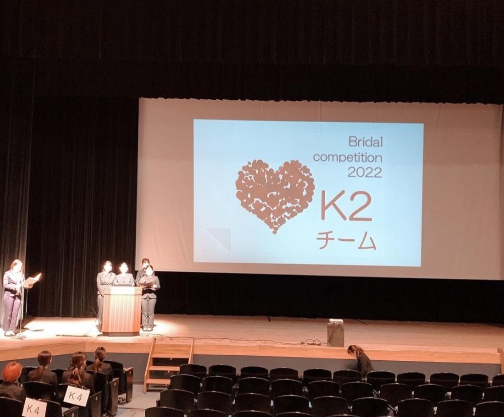
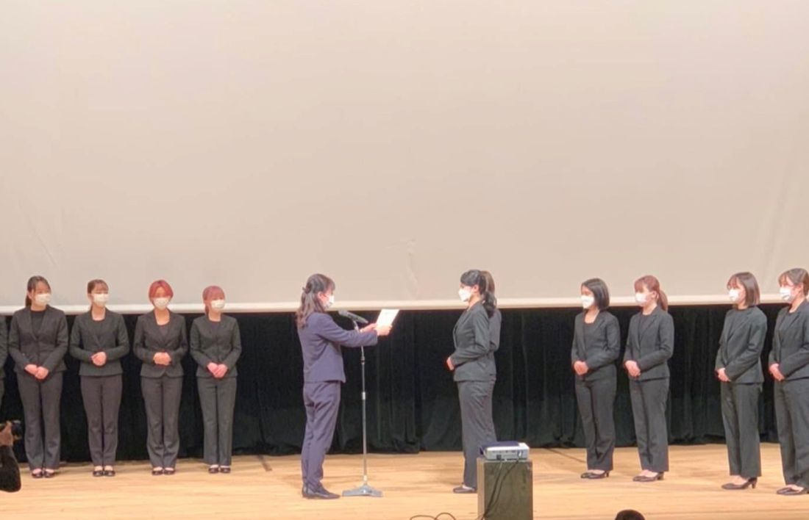
熱い思いに触れて
会場で何より心を打たれたのは、ウェディングを目指すみなさまの、熱い思いでした。一つひとつの発表や実演から、「誰かの大切な一日を、自分の手でつくりたい」というまっすぐな気持ちが伝わってきます。まだ学びの途中にある彼らが、これほどの情熱を持っていること。その姿を見て、これからのウェディングの未来が楽しみになりました。
技術はこれから、いくらでも磨かれていきます。けれど、人を想う気持ちの強さは、その人の芯です。今日ステージに立っていた学生さんたちは、その芯を確かに持っていました。数年後、彼らが現場で活躍する日を、心から楽しみにしています。
御礼
素敵な機会をいただき、ありがとうございました。
名古屋ウェディング＆ブライダル専門学校の皆様、そして参加された学生の皆様に、心より御礼申し上げます。
愛知ウェディング協議会 カレッジ部会では、学校との連携・学生の参画を通じて、業界の未来を担う人材とともに歩んでいく取り組みを進めています。
定例理事会を開催しました
定例理事会を開催しました。今回は、アルカンシエルの永田部長に、オブザーバーとしてご参加いただきました！！
やりたいことも、届けたい想いも
私たちには、やりたいことも、届けたい想いも、たくさんあります。コロナ禍で、リアルのイベントもなかなか開催できず、直接みなさまにお声を届けることが難しい状況が続いています。もどかしさを感じる場面も少なくありません。
それでも——「愛を知る県」として、結婚式の素晴らしさを多くの方々へ届けていきたいと、日々奮闘しております。
「愛を知る県」から
「愛知」は、「愛を知る県」。そう読み替えると、私たちの活動の意味が、少し違って見えてきます。この土地から、愛を、そして愛を祝う場である結婚式の素晴らしさを発信していく。それは、愛知に根ざす協議会だからこそ果たせる役割だと考えています。
オブザーバーとして外部の方をお迎えするのも、その想いを一人でも多くの方と分かち合いたいからです。理事だけで完結するのではなく、様々な立場の方の視点を交えることで、私たちの活動はより豊かになっていきます。
オブザーバー参加、募集しています
「オブザーバーとして参加してみたい」などございましたら、お気軽にお声がけください！！
協議会がどんな話し合いをしているのか、どんな未来を描いているのか。ご興味をお持ちの方は、ぜひ一度、理事会をのぞいてみてください。きっと、新しいつながりが生まれるはずです。
カジュアルパーティという選択肢
2月のインスタライブのお知らせです。
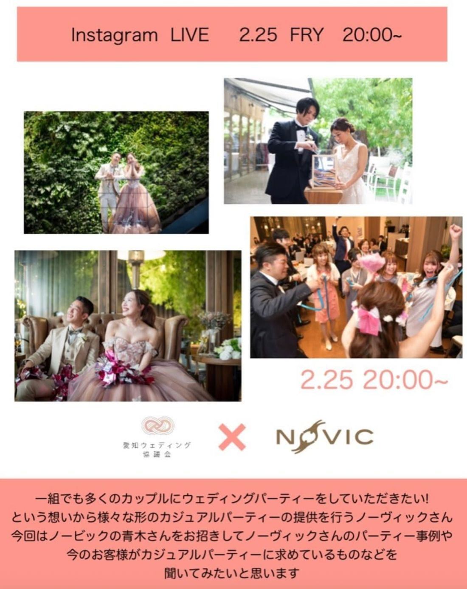
開催概要
スタートは、名古屋から
今や全国展開されていらっしゃいますが、なんとスタートは名古屋。そして、愛知ウェディング協議会の会員でもいらっしゃるノーヴィックさんをお招きいたします。地元・名古屋から始まった取り組みが全国へと広がっていった、その歩みそのものにも、たくさんのヒントが詰まっています。
「1組でも多くの方に、結婚式を」
1組でも多くの方に結婚式を挙げていただきたい——。そんな想いで、カジュアルパーティの提供を行うノーヴィックさん。
「結婚式はしたいけれど、格式張ったものは少しハードルが高い」。そう感じているお二人は、決して少なくありません。そうした声に応えるカジュアルパーティは、結婚式の間口を広げる大切な選択肢のひとつです。従来の形にとらわれない挙式のかたちは、これからの業界を考えるうえでも見逃せません。
今回は青木さんに登場いただき、以下のことを伺っていきます！
どんなお二人が、どんな想いでカジュアルパーティを選ばれるのか。現場のリアルな声から、これからの結婚式のヒントを探ります。
ご視聴方法
「愛知ウェディング協議会」で検索、またはInstagramアカウント【aichi_wedding.council】をご覧ください。アカウントをフォローいただくと、ライブ開始時に通知が届きます。ご質問は、DMやコメントで事前にもお寄せいただけます。
卒業制作にお招きいただきました
名古屋外語・ホテル・ブライダル専門学校の卒業制作にお招きいただき、協議会を代表して、副代表の吹原が参加してまいりました。


学生のパワーと、熱い想い
会場には、会員企業様も多数参加されていました。コロナ禍での開催にあたっては、準備も大変だったことと思います。制約の多い状況のなかで、この日を迎えるまでには、学生の皆さんにも、先生方にも、数えきれない苦労があったはずです。
それでも当日、私たちが受け取ったのは、学生のパワーと熱い想いでした。
卒業制作は、学びの集大成です。これまで積み重ねてきたものすべてを注ぎ込んだ発表からは、一人ひとりの「やりきった」という充実感と、これから現場へ飛び込んでいく決意が伝わってきました。まもなく社会へ羽ばたく彼らの姿は、頼もしく、まぶしいものでした。
未来を、ともに
素敵な機会にお招きいただき、ありがとうございます。ウェディング業界の未来が必ず明るいものになるよう、みなさまと力を合わせて進んでいきたいです。
今日巣立っていく学生さんたちが、数年後、それぞれの現場で輝いている——そんな未来を思い描きながら、私たちも受け入れる側として、より良い業界をつくる努力を続けてまいります。ご卒業を迎えるみなさま、本当におめでとうございます。
愛知ウェディング協議会 カレッジ部会では、学校との連携・学生の参画を通じて、業界の未来を担う人材とともに歩んでいく取り組みを進めています。
料理にこだわる結婚式
3月のインスタライブのお知らせです。
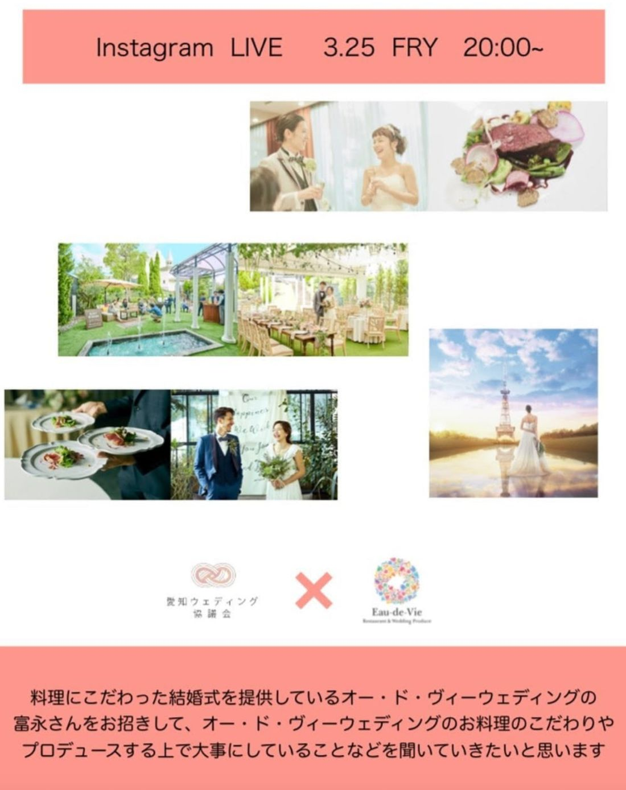
開催概要
「料理」から考える結婚式
料理にこだわった結婚式を展開している、オー・ド・ヴィーウェディング。今回は、同社のウェディングプランナー 富永さんをお招きします。
結婚式において、料理はゲストがもっとも記憶に残すもののひとつです。「あの結婚式、お料理がおいしかったね」——そんな一言が、お二人への何よりの褒め言葉になることも少なくありません。おもてなしの心が、いちばんはっきりとかたちになるのが、料理なのかもしれません。
今回は、そんな富永さんに、以下のことをお伺いいたします。
料理を軸に結婚式を考えると、当日の景色はどう変わるのか。プランナーとして何を大切に、お二人の一日をかたちにしているのか。ゲストの満足に直結するお話として、プランナーはもちろん、サービスやフォトの方にも持ち帰れるヒントがあるはずです。
ご視聴方法
「愛知ウェディング協議会」で検索、またはInstagramアカウント【aichi_wedding.council】をご覧ください。アカウントをフォローいただくと、ライブ開始時に通知が届きます。ご質問は、DMやコメントで事前にもお寄せいただけます。
上質を求める花嫁に、支持され続ける秘訣
5月のインスタライブのお知らせです。

開催概要
上質を求める花嫁に、支持され続けるということ
プライベート空間で、上質なリゾートウェディングを提供しているラソールガーデン名古屋。今回は、同会場の弓納持さんをお招きします。上質、そしてこだわりを求める花嫁様に支持され続ける秘訣について、お伺いしたいと思います。
「良い会場」であることと、「支持され続ける会場」であることは、実は別のことです。一度きりの満足ではなく、選ばれ続けるためには、何を大切にし、どう磨き続けているのか。その裏側にある考え方こそ、立場を問わず学びになるはずです。
上質さは、どうやって生まれ、どうやって保たれているのか。日々のこだわりの積み重ねを、じっくり伺います。
インタビュアーはタケウチミサト
今回、聞き手を務めるのは、次世代推進部部長のタケウチミサトです。1月のインスタライブにゲストとしてご登場いただいたタケウチさんですが、今回はインタビュアーとして参加します。若い世代の視点から、弓納持さんの言葉を引き出していきます。
ご視聴方法
「愛知ウェディング協議会」で検索、またはInstagramアカウント【aichi_wedding.council】をご覧ください。アカウントをフォローいただくと、ライブ開始時に通知が届きます。ご質問は、DMやコメントで事前にもお寄せいただけます。
伊藤たかえ参議院議員の推薦を決定いたしました
一般社団法人 愛知ウェディング協議会は、伊藤たかえ参議院議員を推薦することを決定いたしました。
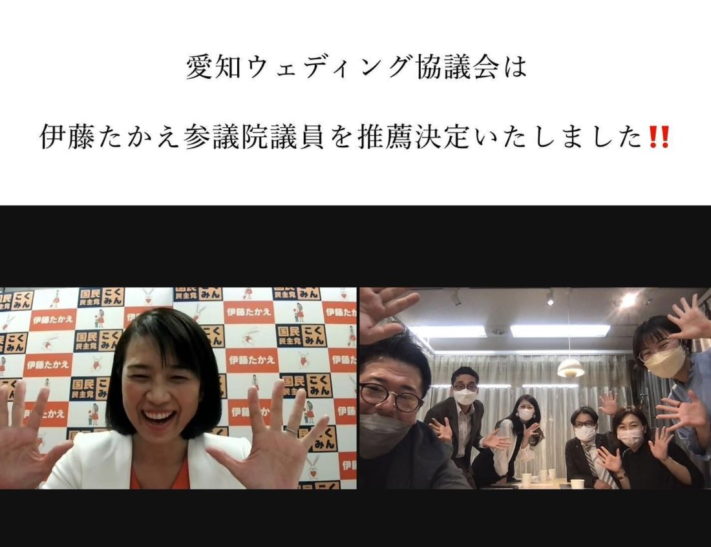
決定の経緯
5月に開催いたしました理事定例ミーティングにて、伊藤たかえ参議院議員をお招きし、意見交換を行いました。
その上で理事の承認を得て、このたびの推薦決定の運びとなりましたことを、ここにご報告申し上げます。
会員の皆さまへ
本件に関するご質問やご意見がございましたら、協議会までお問い合わせください。
引き続き、愛知ウェディング協議会は、ウェディング業界の発展と、この地域の結婚という文化を守り育てるために活動してまいります。
基本から学ぶ LGBTQウェディングセミナー
みなさん、こんばんは！全国で梅雨入りが観測され、いよいよ夏が本格的に始まりますね。体調管理を大切に、この夏もウェディング業界、乗り越えていきましょう。
そして——7月20日、愛知ウェディング協議会主催で、リアルイベントを開催することとなりました。

開催概要
第一部 セミナー 17:00〜18:30／第二部 懇親会 19:00〜21:00
〒451-0045 名古屋市西区名駅2丁目27-8 名古屋プライムセントラルタワー2階
※ 第一部のセミナーの後に、今期の活動報告を少し行わせていただければと思っております。
セミナー《基本から学ぶ LGBTQウェディングセミナー》
LGBTQという言葉は知っているものの、どのような事を大事にしてお客様に案内をしたらいいのか分からない。私たちが知っておくべきことはどのような事なのか。LGBTQとはの基本から、Kasumiさんにお話していただきます。
多様な二人のかたちが当たり前になっていくなかで、私たちウェディングに携わる人間が、正しい知識をもってすべてのカップルをお迎えできること。それは、これからの業界にとって欠かせない基礎になっていきます。とはいえ、「大切なのは分かるけれど、何をどう学べばいいのか分からない」という方も多いのではないでしょうか。今回は、まさにその基礎から学べる内容です。
家庭環境で幼い頃から欧米の文化に触れて育つ。英国留学・服飾雑貨デザイナーを経て、インテリアショップ フランフランにて店舗マネージメント、空間デザイン、商品企画等を経験。2007年の自身のウエディングプロデュースをきっかけに、婚礼における日本と欧米の価値観の違いを目の当たりにする。以降、ブライダル業界に転職。プロデュース会社等での経験を得た後に、フリーランスとして独立。文化的価値観の隙間を埋めるべく、「アイデンティティ」や「個」を尊重したオーダーメイドスタイルでのウエディングを展開。2012年よりLGBTQの方のウエディングサポートを開始。
Instagram：@kasumi_borderless_wedding →知らないことは、時に悪気なく誰かを傷つけてしまいます。だからこそ、正しく知る。目の前のすべてのお二人に、心から寄り添える自分でいるために、ぜひご参加ください。
セミナー後は懇親会も
第二部はご希望者の方のみとなりますが、感染症対策を実施した上でお料理をご用意して、懇親会の開催を予定しております。愛知のウェディング業界でご活躍の非会員の皆さまとも、交流の場を設けたく思っております。ご参加申込をお待ちしております！！ みなさまにお会いできますこと、楽しみにしております！
ご参加に関しましては、大変勝手ながらコロナワクチン接種済、もしくは陰性証明を必須とさせていただきます。
※ コロナ感染状況によっては急遽中止とさせていただく場合がございます。
感染対策へのご協力のお願い
なお、ご入館に際しては、新型コロナウイルスの感染拡大予防の観点から、マスクの着用や、入館時の検温と手指の消毒へのご協力をお願いします。
SNSのノウハウと、いまの花嫁
6月のインスタライブのお知らせです。
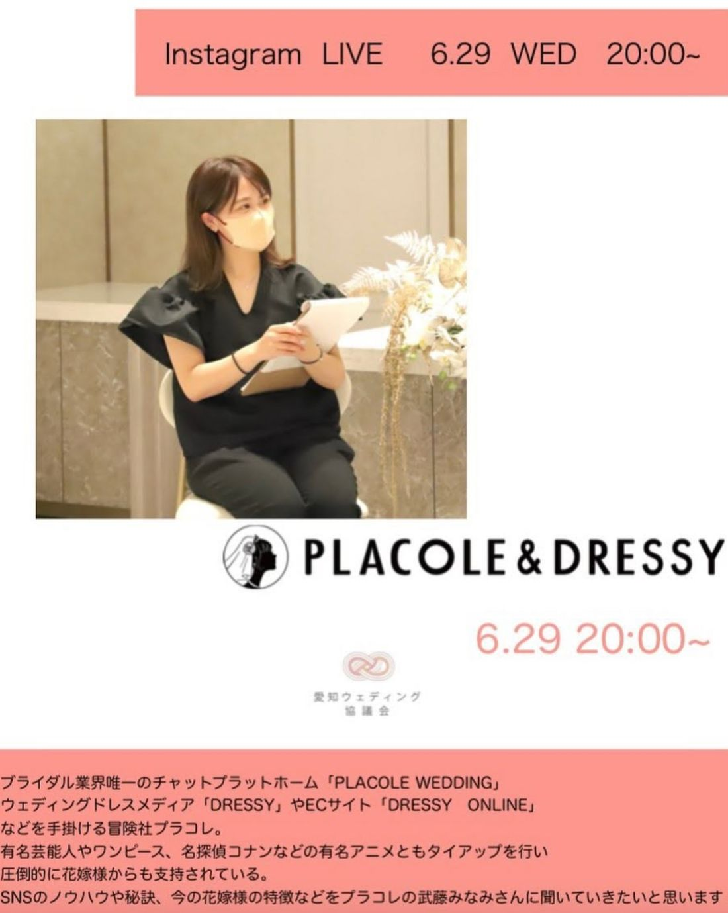
開催概要
Instagram：@dressy_mii →
ブライダル×SNSの最前線から
今回のゲストは、冒険社プラコレさん。ブライダル業界唯一のチャットプラットフォーム「PLACOLE WEDDING」や、ウェディングドレスメディア「DRESSY」、ECサイト「DRESSY ONLINE」などを手がけていらっしゃいます。
有名芸能人やワンピース、名探偵コナンなどの有名アニメともタイアップを行い、圧倒的に花嫁様からも支持されています。いずれも、SNSやオンラインを軸に、これからの花嫁とつながる仕組みをつくってこられたサービスです。ブライダルとデジタルが交わる最前線で、多くの花嫁のリアルな動きを見てこられた会社と言えます。
SNSの秘訣、そして「いまの花嫁」
今回は、プラコレの武藤みなみ様をお招きし、以下のことをお聞きします！
集客も情報発信も、SNSを抜きには語れない時代です。「発信しているけれど、なかなか届かない」と悩まれている方も多いのではないでしょうか。数多くの花嫁に向き合ってきたプラコレさんだからこそ語れる、SNS発信の考え方を伺います。
そして、いまの花嫁は何を求め、どこで情報を集め、どう動いているのか。日々の現場に直結するお話として、ぜひ聞いていただきたい内容です。
ご視聴方法
「愛知ウェディング協議会」で検索、またはInstagramアカウント【aichi_wedding.council】をご覧ください。アカウントをフォローいただくと、ライブ開始時に通知が届きます。ご質問は、DMやコメントで事前にもお寄せください。お待ちしております。
LGBTQウェディングを深める
8月のインスタライブのお知らせです。
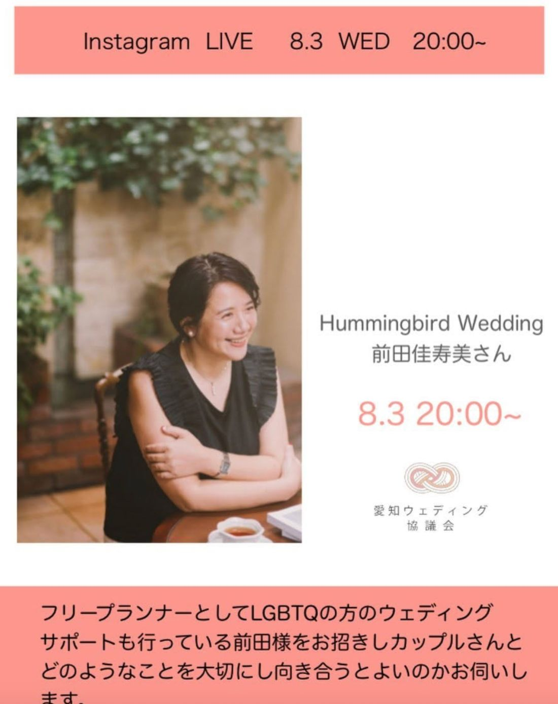
開催概要
Instagram：@kasumi_borderless_wedding →
LGBTQウェディングのお話を、じっくりと
今回は、フリープランナーとして全国でご活躍のKasumiさんをお招きして、LGBTQウェディングのお話をお伺いします！ カップルさんとどのようなことを大切にし、向き合うとよいのかを伺っていきます。
多様な二人のかたちが当たり前になっていくなかで、すべてのカップルに心から寄り添えること。それは、これからのウェディングに欠かせない視点です。全国でLGBTQのカップルの結婚式を数多く手がけてこられたKasumiさんだからこそ語れる、現場のリアルなお話を伺います。
リアルカンファレンスの振り返りも
Kasumiさんは、先日開催したリアルカンファレンス2022にもセミナー登壇していただき、貴重な学びをいただきました。当日ご参加いただいた方には、あの学びをもう一度。ご参加になれなかった方には、その要点を。今回のライブでは、セミナーの振り返りも交えながら、話をさらに深めていきたいと思います。
一度聞いて終わりにするにはもったいないテーマです。繰り返し触れることで、少しずつ自分のなかに根づいていく。そんな時間になればと思います。お待ちしております。
ご視聴方法
「愛知ウェディング協議会」で検索、またはInstagramアカウント【aichi_wedding.council】をご覧ください。アカウントをフォローいただくと、ライブ開始時に通知が届きます。ご質問は、DMやコメントで事前にもお寄せください。
【開催報告】リアルカンファレンス2022を開催しました
愛知ウェディング協議会 リアルカンファレンス2022を開催いたしました！ たくさんのご参加、ありがとうございました！

LGBTQウェディングを、基礎から
今回のセミナーは、《基本から学ぶ LGBTQウェディングセミナー》。フリーウェディングプランナーのKasumiさんにご登壇いただき、基礎から、そして実際の事例も踏まえながらお話しいただきました。
多様な二人のかたちが当たり前になっていくなかで、すべてのカップルに心から寄り添うために——立場を問わず、大切な学びを持ち帰っていただける時間になったのではないかと思います。
久しぶりの、リアルな交流
セミナーの後には、懇親会も開催しました。
会員の皆さまはもちろん、この日ご参加いただいた非会員の皆さまとも、直接お顔を合わせて交流できたこと。画面越しでは得られない、あたたかな時間となりました。ご参加くださったすべての皆さまに、心より御礼申し上げます。
これからも
会員の皆様も、いつもありがとうございます。皆さまのお力があってこそ、協議会はこうして活動を続けることができています。引き続き、愛知ウェディング協議会をよろしくお願いいたします！
これからも、ウェディング業界の発展と、この地域の結婚という文化を守り育てるために、一つひとつ取り組んでまいります。
名古屋ブライダル法務セミナー（10月27日）
愛知ウェディング協議会より、ウェディング業界の皆様へ、おすすめのセミナーをご紹介いたします！

当協議会が後援します
当協議会監事の夏目さんが代表を務める株式会社ブライトさんが、【名古屋ブライダル法務セミナー】を開催されます。
本セミナーは、一般社団法人 愛知ウェディング協議会が後援しております。約3年ぶりの「対面型セミナー」として全国で開催され、全国のブライダル事業者さま必見の、今最もHOTなテーマが盛りだくさんです。
今、知っておきたい4つのテーマ
BRIGHTが見た！ コロナ禍対策「全国事例」総決算
この2年半、全国のブライダル事業者がどう対応してきたのか。専門の立場から見てきた事例の総まとめです。
「オンライン配信」活発化？ ブライダル音楽著作権最前線
配信が当たり前になったいま、避けて通れないのが音楽の著作権です。知らずに進めると思わぬトラブルにつながりかねない、大切な論点です。
「フォトウエディング」で絶対に注意すべき5つのポイント
需要が高まるフォトウエディング。だからこそ押さえておくべき注意点を、5つに絞って解説されます。
人手不足をDX化で乗り切ろう！『電子署名』ってなんだ？
人手不足が続く業界で、業務をどう効率化するか。契約まわりの「電子署名」という切り口から考えます。
開催概要
※「withBRIGHT顧問サービス」ご契約の皆様は無料にてご受講いただけます。
他地域でも開催されます
本セミナーは、名古屋以外の地域（札幌・東京・横浜・大阪・広島・福岡）でも開催されます。また、総集編のオンラインセミナーもございます。
他地域の詳細については、ブライトさんのHPよりご確認ください。愛知県外の方も、ぜひお近くの開催地へ足をお運びください。
株式会社CRAZY BENE支配人 今井佳章さん
9月のインスタライブのお知らせです。
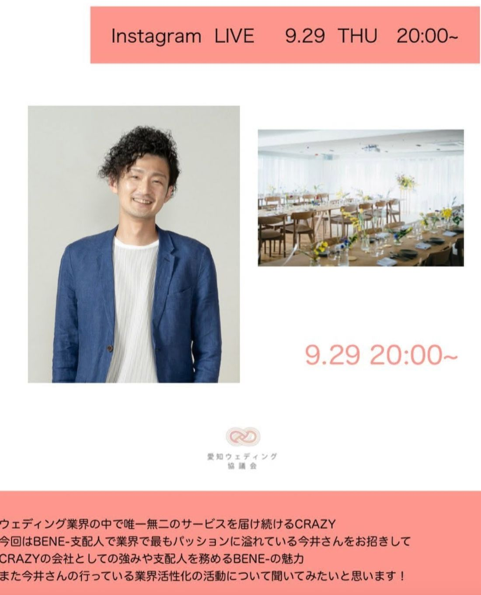
開催概要
Instagram：@yoshiaki_p_imai →
唯一無二のサービスを届けるCRAZYから
今回は、ウェディング業界の中で唯一無二のサービスを届け続けるCRAZYのBENE支配人であり、業界でもっともパッションに溢れている今井さんをお招きします。
CRAZYは、決まった型をなぞらない、お二人だけのオーダーメイドの結婚式づくりで広く知られています。その哲学が、実際の会場運営やサービスのなかでどう息づいているのか。業界内でも独自の存在感を放つ会社だからこそ、伺ってみたいことがたくさんあります。
今回は、以下のことについてお話をお聞きします！
会場運営から、業界全体の話まで
一つの会場を支配人として預かるということ。そこにはどんな想いや工夫があるのか。BENEというひとつの場の魅力から、じっくり伺います。
そして今井さんは、ご自身の会場だけにとどまらず、業界全体を活性化させる活動にも取り組まれています。自社の枠を超えて業界のために動く——その姿勢は、私たち協議会の想いとも重なります。パッションに溢れる今井さんならではのお話を、ぜひお聞きください。お待ちしております。
ご視聴方法
「愛知ウェディング協議会」で検索、またはInstagramアカウント【aichi_wedding.council】をご覧ください。アカウントをフォローいただくと、ライブ開始時に通知が届きます。ご質問は、DMやコメントで事前にもお寄せください。
愛知ウェディングの未来を語る
インスタライブのお知らせです。
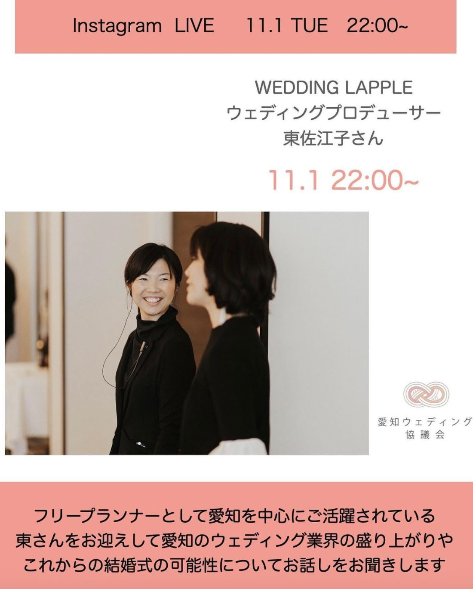
開催概要
Instagram：@saeko_higashi810 →
愛知ウェディングの盛り上がりを、紐解く
今回は、愛知を拠点にご活躍されているWEDDING LAPPLEのウェディングプロデューサー東佐江子さんをお招きします。愛知ウェディングの盛り上がりを紐解いたり、これからの結婚式の可能性、業界の未来についてお話をお伺いします！
愛知は、独自の婚礼文化が根づく土地です。その地でプロデューサーとして走り続けてこられた佐江子さんの目に、いまの愛知ウェディングはどう映っているのか。盛り上がりの理由と、これから向かう先を、じっくり伺います。
業界の女性のためのプラットフォームも
佐江子さんは、業界の女性のためのプラットフォーム「SUEHIRO」（@suehironet）も運営されており、業界の未来に常に向き合われております。
SUEHIROは、以前このブログでもご紹介した、プランナー向けのお悩み解決マガジンや学びの場を届けてきた取り組みです。自社の仕事にとどまらず、業界で働く仲間のために場をつくり続ける——その姿勢は、私たち協議会の想いとも深く重なります。
そんな佐江子さんから、たくさんのことを聞いてみたいと思います。皆さま、お待ちしております！
ご視聴方法
「愛知ウェディング協議会」で検索、またはInstagramアカウント【aichi_wedding.council】をご覧ください。アカウントをフォローいただくと、ライブ開始時に通知が届きます。ご質問は、DMやコメントで事前にもお寄せください。
トレンド調査から読み解く、今後のウェディングマーケット
こんばんは。愛知ウェディング協議会です。2022年も残り2ヶ月となり、年末にかけて繁忙期をお過ごしのことと思います。

困難を乗り越えてきた、皆さまへ
2020年春からのコロナ禍に、我々ウェディングに携わる者として、多くの努力やチャレンジをして参りました。会員各位におかれましては、大変な困難を乗り越え、まだまだ影響のある中で、日々お取り組みのことと拝察いたします。本当に、お疲れさまです。
さて、そんな中でも、新郎新婦のために前を向き、新たな切り口や方法を提案していくため——愛知ウェディング協議会では、ブライダル総研 所長 落合 歩 氏をお迎えし、会員の皆さま、またイベントにご興味を持ってくださった方々と、学び、意見交換を行いたいと考えました。下記のとおり、リアルカンファレンスを企画いたしました。
第一部｜データで読み解く、ブライダルのこれから
毎年リクルート ブライダル総研から発表される【結婚トレンド調査】。カップルアンケートを元に、様々な視点から現在のトレンド、今後の動向を知ることができます。今回はブライダル総研所長の落合さんをお招きして、トレンド調査から見える今後のウェディングマーケットの動向をお話しいただきます。
化粧品メーカーの宣伝部を経てリクルートに中途入社。マーケティング局宣伝企画グループなどを経て2011年よりブライダル総研に異動。これまで、未婚者の動向から結婚、結婚式、夫婦関係に関する調査、研究提言を行い、2019年より現職。テレビ、新聞、雑誌などメディア取材、寄稿および講演多数。川口短期大学准教授。
「なんとなくこう感じる」を「データではこうなっている」と裏づけられたとき、私たちの提案は、もっと自信をもって新郎新婦にお届けできるようになります。ぜひ、その視点を持ち帰っていただきたいと思います。
第二部｜活動報告 & 懇親会
第二部では、愛知ウェディング協議会の今年度の活動報告を行わせていただきます。また、感染症対策を実施した上でお料理をご用意して、懇親会の開催を予定しております。
この一年、協議会がどんな取り組みをしてきたのか。セミナー、インスタライブ、カレッジ部会の学生連携——一年の歩みを振り返り、皆さまと共有する時間です。非会員の方にとっては、協議会の活動を知っていただく良い機会になるかと思います。
開催概要
第一部 セミナー 16:30〜17:30／第二部 活動報告・懇親会 17:45〜19:45
公式サイト →
お申し込み方法
以下のいずれかの方法でお申し込みください。
みなさまのご参加、お待ちしております！
プロデュースのこだわり、そして仕事と育児の両立
インスタライブのお知らせです。
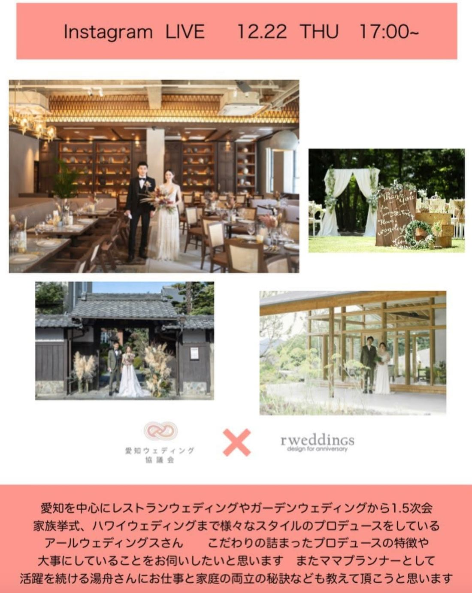
開催概要
Instagram：@rweddings →
多様なスタイルのプロデュース、そのこだわり
今回は、愛知を中心にレストランウェディングやガーデンウェディングから1.5次会、家族挙式、ハワイウェディングまで、様々なスタイルのプロデュースをされているrweddings（アールウェディングス）さんをお迎えします。こだわりの詰まったプロデュースの特徴や、大事にしていることをお伺いしたいと思います！
会場という「箱」から入るのではなく、レストランやガーデンといった開かれた空間で、お二人らしい一日をつくり上げていく。その自由さの中で、rweddingsさんが何を大切にされているのか。じっくり伺います。
仕事と育児の両立について
さらに今回は、ママプランナーとして活躍を続ける湯船さんに、お仕事と家庭の両立の秘訣についてもお話をお聞きしていきます！
ブライダル業界は、土日や繁忙期など、働き方に特有の難しさがあります。そのなかで、子育てと仕事をどう両立させていくのか——同じ悩みを抱える方、これからのライフステージを考えている方にとって、とても参考になるお話になるはずです。
働き続けられる業界であること。それは、協議会が掲げる「ウェディングに携わる仕事のすばらしさの発信」にも、深くつながるテーマです。皆さま、お待ちしております！
ご視聴方法
「愛知ウェディング協議会」で検索、またはInstagramアカウント【aichi_wedding.council】をご覧ください。アカウントをフォローいただくと、ライブ開始時に通知が届きます。ご質問は、DMやコメントで事前にもお寄せください。
エルダンジュ 篠田知里さん
インスタライブのお知らせです。
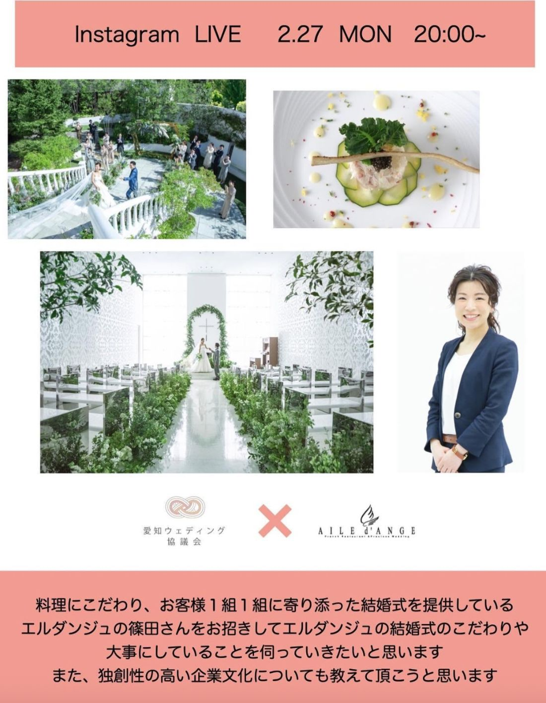
開催概要
@ailedangenagoya @ailedange_wedding
2023年、最初のインスタライブ
2023年最初の協議会インスタライブは、名古屋に本社を構える株式会社Bride to beのエルダンジュより、ウェディングプランナーの篠田知里さんをお迎えします。
料理へのこだわり、1組1組に寄り添う結婚式
エルダンジュウェディングは、料理にこだわり、お客様1組1組に寄り添った結婚式を提供されています。そのこだわりや、大事にしていることを伺っていきます。
料理は、ゲストの記憶にもっとも残るおもてなしのひとつです。そして「1組1組に寄り添う」という言葉の裏には、きっと、決して効率だけでは語れない一つひとつの丁寧な向き合い方があるはずです。その具体を、じっくりお聞きします。
企業文化についても深掘り
さらに今回は、独創性の高い企業文化についても深掘りをしていきます！
良いサービスは、良い組織から生まれます。スタッフが同じ想いを共有し、のびのびと力を発揮できる文化があるからこそ、お客様への丁寧なおもてなしが実現するのだと思います。エルダンジュ、そして株式会社Bride to beが、どのように企業文化を育んでこられたのか。組織づくりに関心のある方にも、ヒントの多い時間になりそうです。
皆さまのご視聴、コメント、お待ちしております！
ご視聴方法
「愛知ウェディング協議会」で検索、またはInstagramアカウント【aichi_wedding.council】をご覧ください。アカウントをフォローいただくと、ライブ開始時に通知が届きます。ご質問は、DMやコメントで事前にもお寄せください。
プランニングのこだわり、そして結婚式の未来
インスタライブのお知らせです。
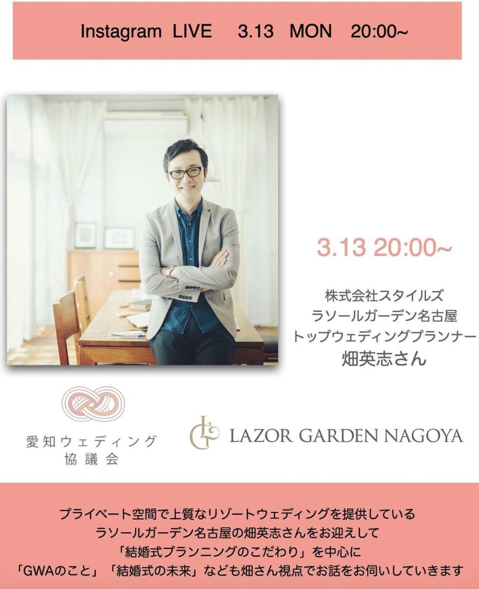
開催概要
Instagram：@hatanet.0610 →
トッププランナーが語る、プランニングのこだわり
3月のインスタライブは、プライベート空間で上質なリゾートウェディングを提供しているラソールガーデン名古屋より、トップウェディングプランナーの畑英志さんをお迎えします。今回の中心テーマは、「結婚式プランニングのこだわり」。
トッププランナーと呼ばれる方は、いったい何を大切に、どんな視点でお二人と向き合っているのか。数多くの結婚式を手がけてこられた畑さんだからこそ語れる、プランニングの神髄を伺います。同じプランナーの方にとっては、明日からの現場に生きるヒントが詰まった時間になるはずです。
GWA、そして結婚式の未来
さらに今回は、「GWAのこと」や「結婚式の未来」についても、畑さん視点でお話をお伺いしていきます！
目の前の一組と向き合うプランニングの話から、業界全体の未来を見据える話まで。現場のトッププランナーが、これからの結婚式をどう見ているのか。幅広く伺える貴重な機会です。皆さまのご視聴、コメント、お待ちしております！
ご視聴方法
「愛知ウェディング協議会」で検索、またはInstagramアカウント【aichi_wedding.council】をご覧ください。アカウントをフォローいただくと、ライブ開始時に通知が届きます。ご質問は、DMやコメントで事前にもお寄せください。
各メディアから学ぶ、これからのマーケティング戦略
みなさん、こんにちは！ 全国で梅雨入りが観測され、いよいよ夏が本格的に始まりますね。体調管理を大切に、この夏もウェディング業界、乗り越えていきましょう。
そして——7月26日（水）、愛知ウェディング協議会主催で、リアルイベントを開催することとなりました。
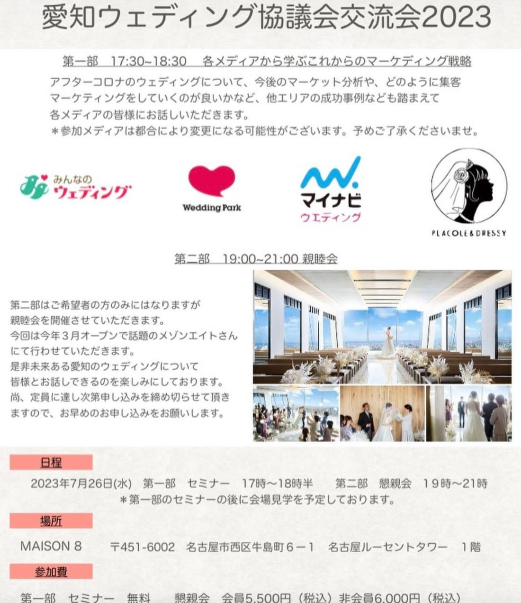
第一部｜メディアの視点から、今後のマーケットを読む
アフターコロナのウェディングについて、今後のマーケット分析や、どのように集客マーケティングをしていくのが良いかなど、他エリアの成功事例なども踏まえて、各メディアの皆様にお話しいただきます。
コロナも収束し、ウェディング業界は日々変化しています。その変化を、いちばん俯瞰して見ているのが、ブライダルメディアの皆様です。数多くの会場、数多くの新郎新婦の動きを横断的に見ているメディアの視点は、一社の現場からは見えない大きな流れを教えてくれます。
※ 参加メディアは都合により変更になる可能性がございます。予めご了承くださいませ。
主要なブライダルメディアがこれだけ一堂に会し、それぞれの視点を聞ける機会は、そう多くありません。各社が今の市場をどう捉え、これからどこへ向かうと見ているのか。またとない学びの場になるはずです。
第二部｜親睦会
第二部はご希望者の方のみとなりますが、親睦会を開催させていただきます。今回は今年3月オープンで話題のメゾンエイトさんにて行わせていただきます。是非、未来ある愛知のウェディングについて皆様とお話しできるのを楽しみにしております。
尚、定員に達し次第申し込みを締め切らせていただきますので、お早めのお申し込みをお願いします。
開催概要
第一部 セミナー 17:00〜18:30／第二部 懇親会 19:00〜21:00
〒451-6002 名古屋市西区牛島町6-1 名古屋ルーセントタワー 1階
※ 2023年3月オープンの、新しい会場様です！
※ 第一部のセミナーの後に、会場見学を予定しております。
非会員の皆さまも、ぜひ
セミナーは無料です。愛知のウェディング業界でご活躍の非会員の皆さまとも、交流の場を設けたく思っております。ご参加申込をお待ちしております！！
またセミナー後には、懇親会も開催いたします。ぜひご参加をお待ちしております！ みなさまにお会いできますこと、楽しみにしております！
今、ウェディング業界に必要なデジタル
インスタライブのお知らせです。
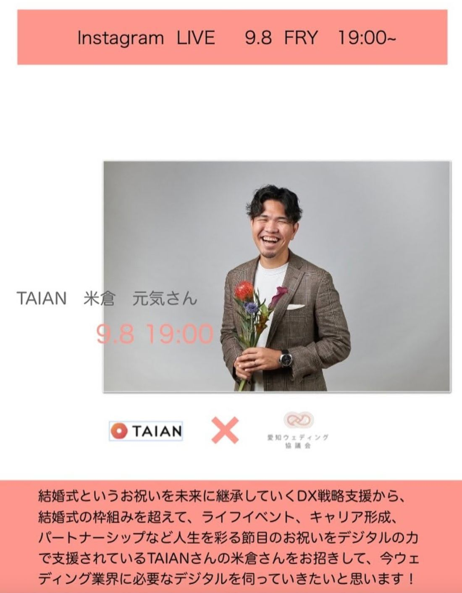
開催概要
デジタルの力で、お祝いを支える
9月のインスタライブは、TAIANの米倉元気さんをお招きします。TAIANさんは、結婚式というお祝いを未来に継承していくDX戦略支援から出発し、いまでは結婚式の枠組みを超えて、ライフイベント、キャリア形成、パートナーシップなど、人生を彩る節目のお祝いを、デジタルの力で支援されています。
「お祝い」と「デジタル」は、一見すると遠いもののように思えるかもしれません。けれど、人と人との想いをつなぎ、記録し、未来へ受け継いでいくという点で、テクノロジーには大きな可能性があります。その最前線を走るTAIANさんのお話は、これからの業界を考えるうえで、きっと刺激になります。
今、業界に必要なデジタルとは
今回は、今ウェディング業界に必要なデジタルについて伺っていきたいと思います！
DX、デジタル化——言葉はよく聞くようになりましたが、「では、自分たちの現場で何から始めればいいのか」となると、迷う方も多いのではないでしょうか。デジタルを、単なる効率化の道具としてではなく、お祝いの価値をより高めるためにどう活かすのか。米倉さんの視点から、そのヒントを探ります。皆さまのご視聴、コメント、お待ちしております！
ご視聴方法
「愛知ウェディング協議会」で検索、またはInstagramアカウント【aichi_wedding.council】をご覧ください。アカウントをフォローいただくと、ライブ開始時に通知が届きます。ご質問は、DMやコメントで事前にもお寄せください。
合同企業説明会——新たな人生が、ここから始まる
愛知ウェディング協議会が主催する合同企業説明会の、初開催が決定しました！

ウェディングのさまざまな業種が、大集合
今回の説明会は、会場やプランナーだけではありません。ドレスショップ、ヘアメイク——ウェディングに関わるさまざまな業種の方が、大集合します。とっても貴重な機会です。
一つの結婚式は、実にたくさんの専門職の集まりで成り立っています。プランナーだけがウェディングの仕事ではありません。だからこそ、いろいろな業種を一度に見渡せるこの場で、「自分に合った道」を見つけてほしいと思っています。
自身の目で見て、話して、感じて
パンフレットやWebサイトだけでは分からないことが、たくさんあります。だからこそ——自身の目で見て、話して、感じて！
現場で働く方と直接お話しすることで、その仕事の魅力も、リアルな一面も、きっと見えてきます。ぜひいろんな業種、企業に出会ってほしいから、足を運んでみてください。
新たな人生が、ここから始まる。
開催概要
お目にかかれますこと、楽しみにしております。
愛知ウェディング協議会 カレッジ部会では、学校との連携・学生の参画を通じて、業界の未来を担う人材とともに歩んでいく取り組みを進めています。
一年の活動報告と、懇親会を
こんばんは。愛知ウェディング協議会です。2023年も残り1ヶ月となり、年末にかけて繁忙期をお過ごしのことと思います。いつもお疲れさまです。
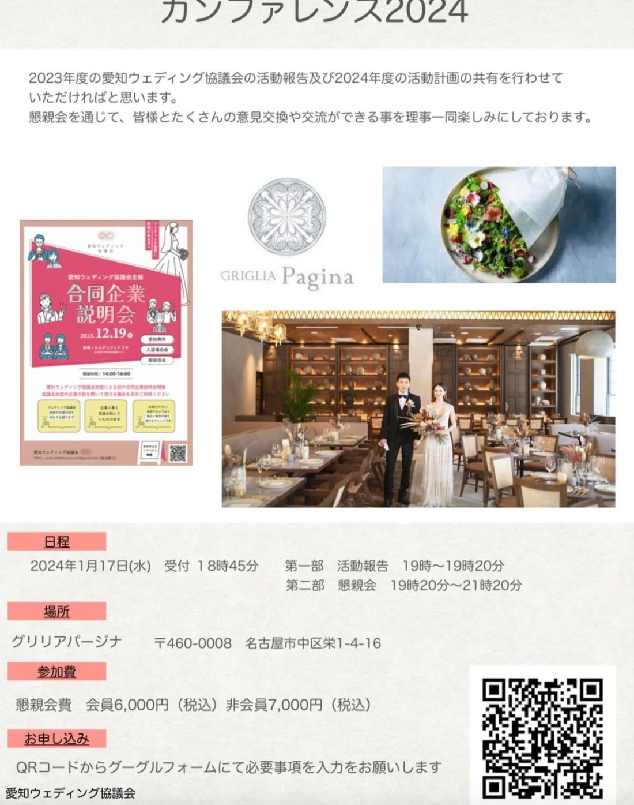
一年を振り返り、次の一年へ
このたび、2023年度の愛知ウェディング協議会の活動報告、ならびに2024年度の活動計画の共有を行わせていただければと思います。
この一年、協議会はセミナーやインスタライブ、そして初開催となった合同企業説明会など、さまざまな取り組みを重ねてまいりました。それらを皆さまと振り返り、そして来年、どこへ向かっていくのかを共有する。そんな場にしたいと考えています。
懇親会を通じて、皆様とたくさんの意見交換や交流ができる事を理事一同楽しみにしております。会員の皆さま、そしてウェディング業界の皆さま。ぜひこの機会にご参加ください。
開催概要
第一部 活動報告 19:00〜19:20／第二部 懇親会 19:20〜21:20
〒460-0008 名古屋市中区栄1-4-16（伏見駅 徒歩1分）
公式サイト →
お申し込み方法
以下のいずれかの方法でお申し込みください。
みなさまのご参加、お待ちしております！
初の合同企業説明会に230名超の学生が参加
2023年12月19日、愛知ウェディング協議会主催にて、初の合同企業説明会を実施いたしました。
230名を超える学生が参加、企業も11社が参加と、熱気あふれるイベントとなりました。
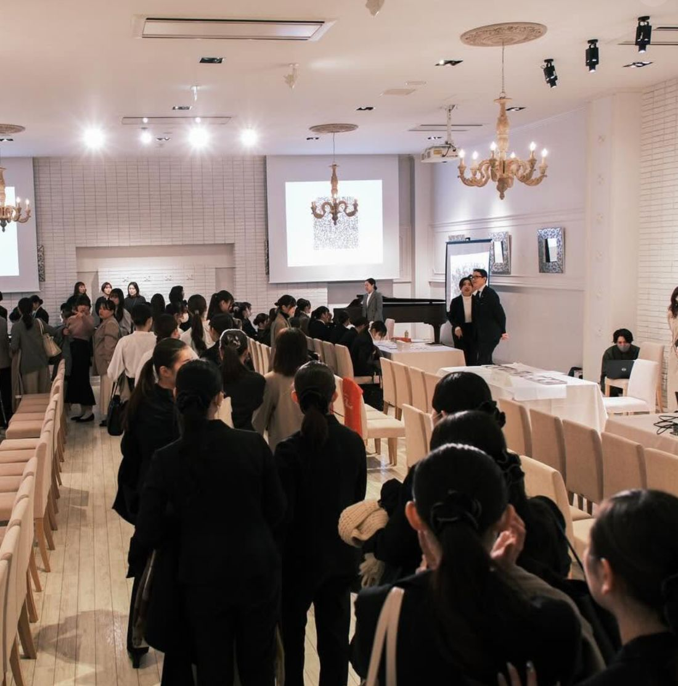
「100年後にウェディングを繋ぐ」を、かたちに
私たちは、「100年後にウェディングを繋ぐ」ことを理念に掲げています。その未来をつくるのは、次の世代です。
愛知の学生と、ウェディング企業を繋ぐ場をつくりたい——。その想いから、協議会に加盟している企業を中心に、11社による合同企業説明会を開催しました。
予想を大きく上回る、230名以上の参加
会場には、当初の予想を大きく上回る、230名以上の学生にご参加いただきました。
それぞれの企業の話を、メモを取りながら聞いたり、自ら質問をしたり——。学生たちの真剣な姿に、会場は熱気に包まれました。自分の将来を真剣に考える若い人たちのエネルギーは、迎える私たち企業側にとっても、大きな刺激になりました。
99%以上が「参加して良かった」
当日行ったアンケートでは、99%以上の学生が「参加して良かった」と回答（アンケート回答数111名）。満足度も高く、嬉しい結果となりました。寄せられた声の一部をご紹介します。
特に、「興味のなかった業種にも目が向いた」という声は、まさにこの合同説明会ならではの成果です。一社だけの説明会では出会えなかったはずの選択肢に、学生たちが自ら出会っていく。その瞬間に立ち会えたことを、心から嬉しく思います。
ひとつの目標を、達成できました
協議会としてのひとつの目標でもあった合同説明会を、こうして実施することができました。
2020年3月にカレッジ部会を立ち上げて以来、フォトコンテスト、学生見学会、各校の発表会への参加と、学生との関わりを一歩ずつ重ねてきました。その積み重ねが、この日、230名超が集う説明会という形に結実しました。
そして、次年度へ
次年度には、さらに充実したイベントになるよう、規模も大きくして、ウェディング企業と学生を繋ぐ場をつくっていきたいと考えております。
ご参加いただいた学生の皆さま、そして11社の企業の皆さま。本当にありがとうございました。
愛知ウェディング協議会 カレッジ部会では、学校との連携・学生の参画を通じて、業界の未来を担う人材とともに歩んでいく取り組みを進めています。
【開催報告】リアルカンファレンス2024
2024年1月17日、リアルカンファレンスを開催いたしました。
第1部で2023年度の活動報告を、第2部で懇親会を行い、会員・非会員あわせて総勢60名の方々にご参加いただきました。
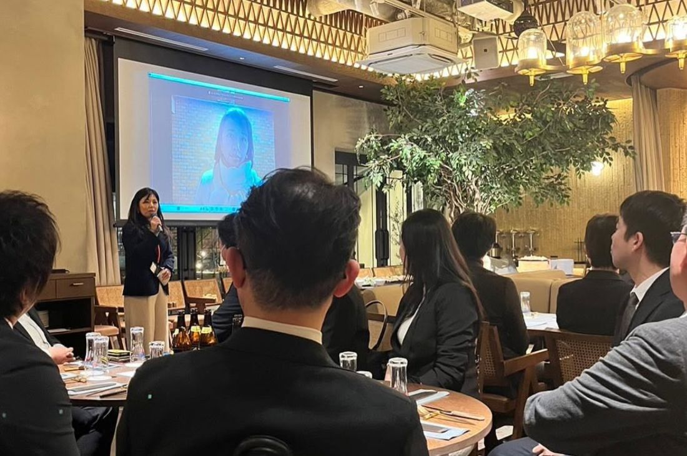
第1部｜2023年度の活動報告
活動報告では、今年度の活動と発信について、皆様とともに振り返りました。
なかでも、今年度初開催となった、学生に向けた合同企業説明会。多くの参加会員様にご好評をいただいたこの取り組みについて、当日の様子を改めて共有いたしました。230名を超える学生が集まった、あの熱気ある一日です。
2024年度も、合同企業説明会をさらに大きな規模で実施し、会員のみなさまにも還元していけるよう、活動して参ります。
伊藤たかえ参議院議員からのメッセージ
また当日は、フォーラム議員である伊藤たかえ参議院議員と、東京・愛知をオンラインで繋ぎました。我々の活動報告を聞いていただいた後に、メッセージを頂戴しました。
そのお話は、リクルート・ゼクシィにお勤めだった時代に経験された震災と、新郎新婦から写真データをお預かりしていたからこそできたこと——大きな節目に立ち会う我々にしかできないことを、改めて気づかされる内容でした。懇親会でも、様々に話題となったメッセージです。
私たちの仕事は、ただ一日を運営することではありません。人生の大切な瞬間を記録し、預かり、守る。その重みと意味を、改めて胸に刻む時間となりました。
100年後も続くウェディングの実現に向けて
2024年、コロナも明けたとはいえ、ウェディング業界はまだまだ厳しい状況が続きます。それでも、愛知ウェディング協議会として、皆様と力を合わせて、100年後も続くウェディングの実現に向けて、一歩ずつ進んでまいりたいと思います。
ご参加いただきました皆様、ありがとうございました。2024年度も、どうぞよろしくお願いします。
卒業制作にお招きいただきました
愛知ウェディング協議会 カレッジ部会にもご参加いただいている、名古屋外語・ホテル・ブライダル専門学校の卒業制作にお招きいただきました。協議会を代表して、副代表の吹原が参加してまいりました。
学生のパワーと、熱い想い
会場には、会員企業様も多数参加されていました。この日を迎えるまでには、準備も大変だったことと思います。それでも当日、私たちが受け取ったのは、学生の皆さんのパワーと、熱い想いでした。
卒業制作は、学びの集大成です。これまで積み重ねてきたものすべてを注ぎ込んだ発表からは、一人ひとりの充実感と、これから現場へ飛び込んでいく決意が伝わってきました。まもなく社会へ羽ばたく彼らの姿は、とても頼もしいものでした。
カレッジ部会として日頃から関わらせていただいている学校の学生さんたちが、こうして立派に成長し、巣立っていく。その姿を見届けられることは、私たちにとっても大きな喜びです。
未来を、ともに
素敵な機会にお招きいただき、ありがとうございます。ウェディング業界の未来が必ず明るいものになるよう、みなさまと力を合わせて進んでいきたいです。
ご卒業を迎えるみなさま、本当におめでとうございます。それぞれの現場での活躍を、心から楽しみにしております。
愛知ウェディング協議会 カレッジ部会では、学校との連携・学生の参画を通じて、業界の未来を担う人材とともに歩んでいく取り組みを進めています。
今考えるウェディング業界の採用について
愛知ウェディング協議会、夏のリアルカンファレンスを開催いたします！
第一部｜テーマは「採用」
今回は、リクルート ブライダル総研の金井さんをお招きします。新卒採用のトレンドから、ブライダル業界の採用における課題についてお話しいただきます。
人手不足が続くなか、「良い人材にどう出会い、どう来てもらうか」は、いまや業界全体の切実な課題です。目の前の一組の結婚式を支えるのも人なら、100年後にウェディングを繋いでいくのも人。採用は、業界の未来そのものに直結するテーマです。
私達が今後、採用において考えないといけないポイントを、皆様と一緒に学ぶ機会にしていきましょう。
株式会社リクルートにて「じゃらんnet」「ゼクシィnet」編集長を務めたのち、2010年4月より現職。ウエディングプランナーのスキル・モチベーションの向上を目指すイベント「GOOD WEDDING AWARD」や、業界向けの学びのプラットフォーム「GOOD WEDDING COLLEGE」立上げ・運営など、働く人がいきいきとやりがいを持って働き続けられるブライダル業界づくりを使命に、さまざまな活動を行っている。
後半はパネルディスカッションも
後半では、パネルディスカッションも予定しております。データや一般論を聞くだけでなく、現場の実感を交えて語り合うことで、「では自社はどうするか」がより具体的に見えてくるはずです。ぜひご参加ください。
第二部｜親睦会
第二部はご希望者の方のみとなりますが、親睦会を開催いたします。場所は金山のグランコートさんにて行わせていただきます。是非、未来ある愛知のウェディングについて皆様とお話しできるのを楽しみにしております。
尚、定員に達し次第申し込みを締め切らせていただきますので、お早めのお申し込みをお願いします。
開催概要
第一部 セミナー 16:30〜17:30／第二部 懇親会 18:00〜20:30
〒460-0023 名古屋市中区金山町一丁目1番1号
セミナーは無料です。採用にお悩みの会員の皆さま、そして非会員の皆さまも、ぜひこの機会にご参加ください。みなさまにお会いできますこと、楽しみにしております。
入会のご案内
加盟の4つのメリット
情報発信・PR
協議会サイト・SNSで会員企業として紹介。認知度の向上に。
勉強会・セミナー
法改正や最新トレンドを学べる会員限定の勉強会に参加できます。
業種を越えた交流
式場・衣裳・写真など多様な事業者とのネットワークが広がります。
行政連携・提言
業界の声を行政へ届ける提言活動に、会員として参画できます。
対象となる事業者
東海地区で婚礼に関わる事業者（式場・ホテル・衣裳・写真・映像・装花・ギフト・美容・司会・専門学校 ほか）。業種は問いません。協議会の趣旨にご賛同いただける法人・個人事業主が対象です。
会費の目安
入会金の有無・年会費の詳細は、お申込み後にご案内します。ご不明点はお問い合わせください。
入会申込みフォーム
送信ボタンを押すと、ご利用のメールソフトが起動します。
宛先：aichi.wedding.council@gmail.com
お問い合わせ
ご用件をお選びください
お問い合わせ内容に応じて、2つの窓口をご用意しています。
事業者の皆さま
入会のご相談、取材・協業のご依頼、行政・団体からのお問い合わせはこちら。
事業者向けフォームへ →これから結婚する方
会員式場のご紹介、結婚式に関する一般的なご相談・ご質問はこちら。
カップル向けフォームへ →送信ボタンを押すと、ご利用のメールソフトが起動します。
宛先：aichi.wedding.council@gmail.com
日本ならではの文化と東海地区の風習を織り交ぜた結婚式文化を、次の世代へ繋いでいきます。